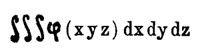
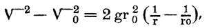
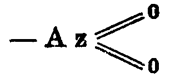

Die Leser der Verne-Romane haben sich in den bisherigen Bänden schon wiederholt Zumutungen ungeheuerlicher Art an die Glaubkraft gegenüber gesehen; was ihnen aber im vorliegenden Bande zugemutet wird, dürfte doch wohl an die Grenze des Erlaubten heranreichen. Vielleicht dürfte es genügen, wenn darauf hingewiesen wird, daß in diesem Bande als handelnde Personen die alten Bekannten aus den beiden Mondreisebänden auftreten: Der exzentrische Maston, der zielbewußte Barbicane und der Dynamitarde Nicholl, die für ihre Betätigung hier keine verrücktere Aufgabe sich stellen, als die Erde aus ihrer Achse zu heben. Die Lektüre erfordert schon aus diesem Gesichtspunkte ein hohes Maß von Zuversicht in die Fähigkeit des Autors, die Phantasie des Lesers nicht zu übersättigen, sondern bei aller Anspannung der Nerven doch auf erträglichem Boden zu halten – eine Aufgabe, die hier freilich insofern außerordentlich erschwert wird, als sich ihre Lösung nur durch Algebra und Gesetze der höheren Mechanik bewirken läßt. Immerhin ist sie dem gewandten Romanschriftsteller geglückt, und man darf wohl sagen, daß dies Werk, das im Französischen den Titel: » Sans-dessus-dessous« führt, in seinem Aufbau und seiner Durchführung vollkommen gelungen ist. Der Roman bildet ein Glied aus derjenigen Reihe der Verne-Romane, die den Lesern die oberirdischen Verhältnisse oder, vielleicht besser gesagt, die Bedingungen, unter welchen unser Planet Erde seine Bahn durch die Sonnenwelt durchzieht, zu erörtern.
In diese Reihe, für die sich vielleicht am besten die Bezeichnung »kosmographische Romane« eignet, fällt außer den genannten beiden Bänden: »Von der Erde zum Monde« und »Reise um den Mond« noch der Roman: »Hektor Servadac«. Ihnen gerade ist wohl mit am meisten der ungeheure Erfolg, den die Verne-Romane seit Jahrzehnten behaupten, beizumessen. Was die französische Verlags-Firma der Verne-Romane öfters ausspricht: »daß sich tatsächlich sagen lasse, es sei ihr in ihrer langen Verlagstätigkeit kein Schriftsteller begegnet, dessen Volkstümlichkeit sich so weit über alle Teile der gebildeten Welt erstrecke, wie der von Jules Verne, läßt sich sicher auch vom Standpunkt des deutschen Buchhandels unterschreiben. Jules Verne wird tatsächlich gelesen – Jules Verne ist tatsächlich volkstümlich – sein Name und sein Werk sind tatsächlich berühmt und gefeiert wie in Frankreich, so in allen Kulturländern. Ueberall in der Welt ist sein Erfolg der gleiche, überall bereiten ihm die Leser jedes Alters die gleiche begeisterte Aufnahme.
Jules Vernes Romane sind vollständig übersetzt und fast überall gleichzeitig erschienen in Rußland, England, den Vereinigten Staaten, Deutschland, Oesterreich, Italien, Spanien, Brasilien, Dänemark, Schweden, Holland, Portugal, Griechenland, Böhmen, Kroatien, Kanada. Ja, einige seiner Romane sind sogar ins Persische übersetzt worden.
Man darf wirklich sagen, kein französischer Schriftsteller bis auf die Gegenwart hat den französischen Namen so weit über die Erde getragen und in einer so großen Zahl von Ländern und Sprachen eingebürgert wie Jules Verne.
»Sie behaupten also, Mr. Maston, daß keine Frau je imstande gewesen sei, die mathematischen oder die Experimental-Wissenschaften um einen Schritt weiterzubringen?«
»Zu meinem größten Bedauern muß ich das, Mrs. Scorbitt,« versetzte J. T. Maston. Der Jules Verne-Leser wird hier mit besonderer Freude bemerken, daß die berühmte Figur des J. T. Maston aus den berühmten Mondromanen (2. u. 3. Band) des genialen Franzosen wieder auftritt. A. d. Uebers. »Sehr gern gebe ich ja zu, daß hin und wieder einmal Damen sich, in der Mathematik ausgezeichnet haben. Ganz besonders in Rußland. Da sich nun aber doch an der Gehirnbildung des Weibes nichts ändern läßt, müssen wir es als ausgeschlossen betrachten, daß uns aus dem anderen Geschlechte jemals ein Archimedes, geschweige ein Newton erstehen könnte.«
»Oho, Mr. Maston, erlauben Sie, bitte, daß ich im Namen unsers Geschlechts Einspruch erhebe!«
»Im Namen eines Geschlechts, Mrs. Scorbitt, dessen Liebreiz um so größer ist, als es ganz und gar nicht dazu geschaffen ist, sich mit Wissenschaften abzugeben, welche jenseits der menschlichen Erfahrungen liegen.«
»Ihrer Meinung nach hätte also kein Weib durch den Anblick eines zur Erde fallenden Apfels auf die Entdeckung des Gesetzes der Schwere kommen können, wie der von Ihnen genannte berühmte Gelehrte Englands um das Ende des 17. Jahrhunderts herum?«
»Keiner Frau, die einen Apfel fallen sah, Mrs. Scorbitt, wäre was anderes eingefallen, als ihn zu essen – wie ja das Beispiel unserer Allmutter Eva lehrt –«
»Aber ich bitte Sie, daraus läßt sich schon sattsam ersehen, daß Sie uns jede Befähigung für die höheren Wissensgebiete absprechen.«
»Jede Befähigung? – Nein, Mrs. Scorbitt, und doch möchte ich darauf hinweisen, daß sich, seitdem es Menschen, also auch Frauen, auf der Erde gibt, noch kein weibliches Gehirn gefunden hat, dem sich auch nur eine einzige Entdeckung verdanken ließe, die denen eines Aristoteles, Euklides, Kepler oder Laplace gliche.«
»Ist denn das ein Grund, und gilt die Vergangenheit unwiderruflich für die Zukunft?«
»Hm, was seit Tausenden von Jahren Geltung gehabt hat, wird wohl auch für weitere Tausende Geltung behalten.«
»Hm, ich sehe schon, daß es heißt, für unsere Partei in die Bresche treten, Mr. Maston, und daß wir wirklich bloß gut genug sind ...«
»– um gut zu sein!« erwiderte J. T. Maston, und zwar mit all jener liebenswürdigen Ritterlichkeit, über die ein mit x plus x bis zur Nase vollgepfropfter Gelehrter gebeut.«
Mrs. Evangelina Scorbitt war übrigens voll im Zuge, sich mit diesem letzten Bescheide für befriedigt zu halten.
»Nun gut, Mr. Maston,« nahm sie wieder das Wort, »jedem ist sein Schicksal auf der Welt vorgezeichnet. Bleiben Sie der Rechenmeister erster Klasse wie bisher, widmen Sie sich mit Leib und Seele den Problemen jenes Riesenwerks, dem Sie mitsamt Ihren Freunden Ihr Dasein zu opfern gedenken. Ich dagegen will pflichtschuldigst die ›nette Dame‹ bleiben, die mit ihrem Geld herhält –«
»– wofür wir mit ewiger Dankbarkeit herhalten werden,« antwortete J. T. Maston.
Auf Mrs. Evangelina Scorbitts Antlitz trat köstliches Erröten, denn sie fühlte, wenn nicht für das Gelehrtentum im allgemeinen, so doch zum wenigsten für J. T. Maston eine wirklich auffällige Sympathie. Ist das Herz des Werkes nicht ein unergründlicher Abgrund?
Ein Riesenwerk war es in der Tat, in das diese reiche amerikanische Witwe beträchtliche Kapitalien zu stecken willens war.
Was die Unternehmer zu erreichen vorhatten, war nämlich folgendes.
Die »arktischen Länder« im eigentlichen Sinne umfassen nach der Klassifikation unserer hervorragendsten Geographen:
1) das nördliche Devon, nämlich die mit Eis bedeckten Inseln der Baffinsbai und Lancaster-Straße;
2) das nördliche Georgsland, das vom Bankslande und von zahlreichen Inseln gebildet wird, z. B. den Sabine-Inseln, Byam-Martin, Griffith, Cornwallis und Bathurst;
3) den Archipel von Baffin-Perry, der verschiedene Teile des um den Pol gelegenen Kontinents einbegreift, die wir unter dem Namen Cumberland, Southampton, James-Somerset, Boothia-Felix, Melville kennen und wozu noch andere so gut wie unbekannte Inselstriche oder Inseln gehören.
In diesem durch den 78. Grad nördlicher Breite umzogenen Gesamtstück erstrecken sich Landmassen in ungefähren Flächengehalt von 1 400 000 Meilen und Wassermassen von 700 000 englischen Quadratmeilen.
Innerhalb dieses Breitengrads ist es unerschrockenen Forschern der Neuzeit gelungen, bis zum Rande des 84. Breitengrads vorzudringen. Sie haben dort, hinter der hohen Barre, die das Packeis bildet, Küstenbereiche festgestellt, haben Kaps und Vorgebirgen, Golfen und Buchten dieser mächtigen Gebiete, die sich als arktisches Hochland bezeichnen ließen, Namen beigelegt. Aber jenseits vom 84. Breitengrade lagert noch das Geheimnis, das unerfüllbare »Desideratum« der Kartographischen Welt, und bis zur Stunde vermag noch immer niemand zu sagen, ob es Landmassen oder Meere sein mögen, welche die unüberwindlichen Eismassen des Nordpols auf einem Raume von sechs Breitengraden bergen.
Da hatte nun im Jahre 189. die Regierung der Vereinigten Staaten den höchst unerwarteten Einfall, alles, was noch um den Pol herum an unentdecktem Land vorhanden sei, »in Akkord zu geben«, weil sich nämlich zur Verfolgung des Zweckes, die arktische »Mütze«, die unsere Mutter Erde noch immer zu tragen beliebt, »einzuschlumpsen«, in Amerika eine Finanzgesellschaft gebildet hatte, die sich um solche Konzession bewarb.
Freilich hatte vor ein paar Jahren die Berliner Konferenz einen Spezialkodex ad usum von Großmächten abgefaßt, die sich unter dem Deckmantel von Kolonisationsbestrebungen oder der Erschließung neuer Handelswege fremdes Besitztum anzueignen trachten. Indessen schien dieser Kodex auf den vorliegenden Fall insofern keine Anwendung zu vertragen, als das polare Landgebiet ja überhaupt nicht bewohnt wird. Nichtsdestoweniger mochte die neue Gesellschaft, weil was niemand gehört, gleicherweise jedermann gehört, nicht »stiebitzen«, sondern »käuflich erwerben« oder »pachten«, um künftigen Einsprüchen allen Nährboden zu entziehen.
In den Vereinigten Staaten gibt es kein Projekt, das verwegen genug wäre, ja keines sogar, selbst wenn ihm die Unausführbarkeit gewissermaßen auf die Stirn geschrieben steht, für das sich nicht Leute finden sollten, die ihm praktische Seiten abgewinnen, die Kapital aufbringen, um es ins Leben zu rufen. Das hatte man ja doch vor ein paar Jahren zur Genüge gesehen, als der Kanonenklub von Baltimore sich die Aufgabe gestellt hatte, ein Geschoß nach dem Monde hinaufzuschießen in der Hoffnung, eine direkte Verkehrsverbindung mit unserm Trabanten zu schaffen. Waren es denn nicht diese selbigen unternehmungslustigen Yankees gewesen, welche die zu solchem interessanten Versuch notwendigen Riesensummen aufgebracht hatten? und wenn der Versuch den Weg in die Praxis fand, hatte man das nicht zwei Mitgliedern besagten Klubs zu verdanken, die allen Fährlichkeiten dieses übermenschlichen Experiments zu trotzen wagten?
Wenn ein Lesseps eines Tages mit dem Projekt vor die Öffentlichkeit tritt, einen Kanal größten Maßstabs durch Europa und Asien zu graben, der vom Atlantischen Ozean bis zu den chinesischen Meeren reichen soll – wenn ein Brunnengräber-Genie Bohrversuche machen will, um über die im schmelzflüssigen Zustande befindlichen kieselsauren Salzschichten hinaus zu gelangen zu dem Zwecke, direkt aus dem Zentralfeuerherde zu schöpfen – wenn ein unternehmender Elektrotechniker die über die Erdoberfläche verstreuten Ströme zusammenlegen will, nur eine unerschöpfliche Licht- und Wärmequelle zu bilden – wenn ein kühner Ingenieur auf den Gedanken kommt, in Riesensammelbecken den Ueberschuß der Sommertemperaturen aufzuspeichern zum Nutzen der zur Winterszeit von Kälte heimgesuchten Zonen – wenn ein Uebermensch aus der hydraulischen Richtung die lebendige Kraft der Gezeiten zur Verwertung zu bringen sucht, um nach Belieben Wärme oder Arbeit hervorzubringen – wenn sich Kommanditgesellschaften oder Gesellschaften mit »beschränkter« oder »unbeschränkter« Haftpflicht zusammentun, um hunderterlei derartige Projekte zu gutem Ende zu führen – immer sind es Amerikaner, die sich an erster Stelle in die »Sammellisten« einzeichnen, immer sind es amerikanische Dollars, die allem andern Geld voran in die Gesellschafts-»Sammelbüchsen« strömen, gleichwie sich die großen Ströme und Flüsse Nordamerikas in den Busen der Weltmeere ergießen.
Demnach läßt sich ganz natürlicherweise annehmen, daß die Stimmung merkwürdig überreizt war, als sich diese zum mindesten fremdartige Nachricht verbreitete, die arktischen Ländermassen sollten »von Amerikas wegen« in Akkord gegeben und dem letzten und höchsten Bieter zugeschlagen werden. Zudem wurde keine öffentliche Subskription aufgelegt zum Zweck dieser »Erwerbung«, weil das hierzu notwendige Kapital bereits »vorgezeichnet« war. Sollte es geschehen, daß man sich mit der wirtschaftlichen Ausbeutung dieses an die neuen »Erwerber« als Eigentum gefallenen Länderbereichs befasse, würde ja später zu erwägen sein, ob man dieser weiteren Frage näher zu treten hätte oder nicht.
Die arktische Ländermasse wirtschaftlich ausbeuten! Fürwahr, solcher Gedanke konnte bloß im Hirn von Tollköpfen keimen!
Und doch ließ sich kaum etwas denken, das mit größerm Ernst ins Werk gesetzt werden könnte, als es bei diesem Projekt der Fall war. Es wurde nämlich an die Zeitungen und Zeitschriften beider Welten, an die in Europa, Afrika, Australien, Asien sowohl als an die in Amerika erscheinenden, ein Bericht erlassen zu dem Zwecke, alle hierbei interessierten Personen zu einer Enquete pro und contra zusammenzurufen. Der »New-York Herold« hatte die Ehre gehabt, den Erstdruck dieses Berichts zu publizieren. So kam es, daß die zahllosen Abonnenten Gordon Bennetts in der Nummer vom 7. November die im nächsten Absatz folgende Mitteilung zu lesen fanden, die alsbald ihren Weg durch die gesamte gelehrte und industrielle Welt machte, um dort auf höchst verschiedenartige Weise kritisiert und abgeschätzt zu werden:
Anzeige an die Bewohner des Erdballs!
Die innerhalb des 84. Grads nördlicher Breite gelegenen Nordpolargebiete haben aus dem vortrefflichen Grunde noch nicht ausgebeutet werden können, weil sie noch nicht entdeckt worden sind.
Die von den Schiffahrern verschiedener Nationalitäten festgestellten Endpunkte der Forschung sind nämlich nach Breitegraden die folgenden:
82° 45', erreicht durch den Engländer Parry im Juli 1847 auf dem 28. Grade westlicher Länge, im Norden von Spitzbergen;
83° 20' 28'', erreicht durch Markham, Mitglied der englischen Expedition unter Sir John Georges Nares im Mai 1876 auf dem 50. Grade westlicher Länge, im Norden von Grinnell-Land;
83° 35, erreicht durch Lockwood und Brainard, Mitglieder der amerikanischen Expedition unter Leutnant Greeley Die von der Lady Franklin-Bai 1881 ausgegangene Expedition, von der erst 1884 die Nachricht nach Amerika gelangte, daß von den 25 Mann, die ausgefahren waren, alle bis auf 7 verhungert seien, und diese letzten 7 im Smithsund und bei Kap Sabine im elendesten Zustande aufgefunden worden seien. im Mai 1882 auf dem 42. Grad westlicher Länge, im Norden vom Nares-Lande. Inzwischen sind wesentlich höhere Grade erreicht worden, so von Peary, der auf seiner letzten Expedition (1898-1902) unter 84° 17' nördlicher Breite Grinnell-Land erreichte, wohingegen Nansen auf seiner Polfahrt 1893, den von den neusibirischen Inseln aus die Breite von 86° 4' gewann und Sverdrup mit Nansens »Fram« bis zu 85° 57' nördl. Breite gelangte. Die höchste bisher erreichte Breite (86° 33') hat der italienische Kapitän Cagni, Mitglied der Expedition unter dem Herzog der Abruzzen, Prinz Amadeus von Savoyen, auf einer 104tägigen Schlittenfahrt, von der Nordküste von Franz-Josephland aus, gewonnen. A. d. Uebers.
Man kann also das Gebiet, das sich vom 84. Breitengrade bis zum Pol über einen Raum von sechs Graden erstreckt, als ein Dominium betrachten, dessen Teilung unter die verschiedenen Großmächte der Erde noch nicht erfolgt ist, und das zufolgedessen sich ganz vorzüglich zu einem im Wege öffentlichen Aufstreichs an Privatkäufer veräußerlichen Objekt eignet. Nach den allgemeinen Rechtsgrundsätzen ist es nun aber für jegliches Ding ausgeschlossen, herrenloses Gut zu verbleiben. Deshalb haben sich die Vereinigten Staaten, auf diese Grundsätze fußend, zur Veräußerung dieses Dominiums entschlossen.
Zu Baltimore hat sich unter der handelsgerichtlich eingetragenen Firma »North Polar Practical Association« Auf praktischen Vereinbarungen und Anschauungen beruhende, praktische Ziele verfolgende Nordpolar-Gesellschaft. A. d. Uebers. eine Anzahl von Personen zusammengeschlossen, zu dem Zwecke, dieses Ländergebiet in all seinen Bestandteilen, und zwar sowohl festem Lande und Inseln, Eilanden, Felsen, als auch Meeren, Seen, Strömen, Flüssen, Bächen, und allem sonstigen Land- und Wasserreichtum, woraus sich dieses arktische Immobiliengut zur Zeit zusammensetzt, gleichviel ob es von ewigem Eise bedeckt ist oder ob das Eis während der Sommerszeit schwindet, in aller Form Rechtens an sich zu bringen als unbeschränktes Eigentum.
Als Sonderbestimmung wird hierbei aufgestellt, daß dieses Eigentumsrecht niemals verfallen kann, sogar nicht in dem Falle, daß die Erdkugel von geographischen oder meteorologischen Veränderungen, gleichviel welcher Art, betroffen würde.
Dies wird andurch zur Kenntnis der Bevölkerung beider Weltteile gebracht mit dem Bemerken, daß sämtliche Staaten und Mächte zur Teilnahme bei dem öffentlichen Aufstreich zugelassen werden, sowie daß der Zuschlag zum Nutzen des höchsten und letzten Bieters erfolgen wird.
Als Aufstreichstag wird der 3. Dezember laufenden Jahres festgesetzt, als Stelle hierfür das öffentliche Auktionslokal zu Baltimore im Staate Maryland, Vereinigte Staaten von Nordamerika.
Wegen alles Näheren beliebe man sich zu wenden an William S. Forster, Bevollmächtigter der »North Polar Practical Association«, zu Baltimore, High-Street 93.
Diese Kundgebung mag als sinnlos, als hirnverbrannt gelten, meinethalben! jedenfalls läßt sie, wie wohl allseitig anerkannt werden dürfte, an Klarheit, Deutlichkeit und Freimut nichts zu wünschen. Ein Umstand übrigens, durch den sie an Ernst und Würdigkeit nicht wenig gewann, war der, daß die Bundesregierung bereits das Besitzinstrument ausgefertigt hatte für den Fall, daß ihr durch den Aufstreich das unumstößliche Besitzrecht zugesprochen würde.
Im großen und ganzen waren die Meinungen geteilt. Manche wollten in der Sache bloß einen jener erstaunlichen »Humbugs« amerikanischer Herkunft erblicken, die alle Grenzen marktschreierischer Reklame über den Haufen rennen würden, sofern nicht auch menschlicher Dummheit Grenzen gezogen wären. Andere wieder waren der Meinung, daß solcher Vorschlag ernstlicher Aufnahme wohl wert sei; und diese letzteren gerade bestanden darauf, daß von seiten der neuen Handelsgesellschaft keinerlei Appell an den Geldbeutel des Publikums gerichtet werden solle. Nur mit eignem Kapital sollte die Gesellschaft arbeiten und kaufen. Es konnte also gar nicht die Rede davon sein, daß sie bei Gimpeln auf Dollar- und Banknotenfang zur Füllung der eignen Kassen auszuziehen gedächte.
Leuten, die rechnen können, wollte es so vorkommen, als hätte besagte Gesellschaft gar nichts weiter nötig gehabt als sich das Recht des ersten Besitznehmers zu sichern, dadurch daß sie die Hand auf die Landbereiche legte, statt diese Aufstreichskomödie zu veranstalten. Aber hierin beruhte ja gerade die Schwierigkeit, denn bis zum heutigen Tage schien ja dem Menschen der Zutritt zum Pole wie mit Brettern vernagelt. Eben deshalb wollten die Konzessionsinhaber, für den Fall daß die Vereinigten Staaten den Erwerb dieses Länderbereichs bewirkten, einen regelrechten Kontrakt haben, damit ihnen später niemand ihr Recht abstreiten könne. Sie deshalb zu tadeln wäre ungerecht gewesen. Sie gingen mit Klugheit zu Werke, und wenn es sich um Abmachungen solcher Art handelt, kann man gar nicht zuviel gesetzlicher Vorsichtsmaßregeln erfassen.
Zudem enthielt das Schriftstück eine Klausel, die alle Zweifel aufhob, die im Schoße der Zukunft etwa noch lagen. Diese Klausel sollte zu mancherlei kontradiktorischen Deutungen Veranlassung geben, denn ihr richtiger Sinn entzog sich den subtilsten Geistern. Es war die letzte des Schriftstücks, daß »das Eigentumsrecht an diesem cirkumpolaren Länderbereich niemals verfallen könne, sogar nicht in dem Falle, daß die Erdkugel von geographischen oder meteorologischen Veränderungen, gleichviel welcher Art, betroffen würde.«
Was bedeutete dieser Satz? welcher Möglichkeit wollte er vorbeugen? wie sollte die Erde jemals eine Wandlung erfahren, mit welcher die Geographie oder Meteorologie zu rechnen hätte – vornehmlich in den Länderstrichen, die unter Aufstreich gebracht wurden?
»Augenscheinlich steckt doch was dahinter!« sagten diejenigen, die zur Gattung der Menschen gehören, die das Gras wachsen hören.
Den Deutungen blieb also weiter Spielraum, und das war insofern recht gut, als hierdurch bei den einen der Scharfsinn, bei den andern die Neugierde geschärft wurde.
Ein Journal, der in Philadelphia erscheinende »Ledger«, brachte zuerst die folgende amüsante Notiz:
»Durch Berechnungen wird jedenfalls für die zukünftigen Eroberer der arktischen Landmassen festgestellt worden sein, daß in nächster Zeit ein Komet mit hartem Innenkörper mit der Erde zusammenrennen wird, und zwar unter Bedingungen, die sowohl jene geographischen als meteorologischen Veränderungen zeitigen werden, mit denen sich die besagte Klausel befaßt.«
Der Satz war ein bißchen lang, wie es sich für Sätze wissenschaftlichen Anstrichs ja immer schickt, aber er schuf in keiner Hinsicht Klarheit. Zudem konnte doch kein ernsthafter Mensch einräumen, daß für solchen Zusammenstoß der Erde mit solchem Kometen Wahrscheinlichkeit vorliege. Jedenfalls mußte man es für ausgeschlossen halten, daß sich die Konzessionsinhaber mit solcher ins Reich der Hypothesen gehörigen Möglichkeit befaßt hätten.
»Sollte die neue G. m. b. H.«, fragte das »Delta« von New-Orleans, »am Ende sich einbilden, das Vorrücken der Tag- und Nachtgleichen könne jemals Veränderungen, die für die Ausbeutung ihrer Landbereiche günstig sein möchten, im Gefolge haben?«
»Und warum nicht, wenn doch als erwiesen gilt,« fragte der Hamburger »Korrespondent«, »daß diese Bewegung den Parallelismus der Achse unsers Sphäroids beeinflußt?«
»Freilich,« erwiderte die Pariser »Revue Scientifique«, »hat es denn nicht Adhemar in seinem Buche »Die Revolutionen des Meeres« ausgesprochen, daß das Vorrücken der Tag- und Nachtgleichen im Verein mit der hundertjährigen Bewegung der großen Erdkugel-Achse mit der Zeit, wenn auch erst nach langer Zeit, in der Durchschnittstemperatur der verschiedenen Erdpunkte und in den an ihren beiden Polen aufgehäuften Eismengen eine Wandlung zeitigen würde?«
»Fest steht das nicht,« nahm die Edinburger »Review« hierzu das Wort; »und auch wenn es wäre, ist nicht ein Zeitraum von 12 000 Jahren für die ›Vega‹ nötig, bis sie zufolge besagten Phänomens unser Polarstern werden kann? und bis die Lage der arktischen Landgebiete sich in klimatischer Hinsicht verändert haben wird?«
»Hm,« meinte das Kopenhagener »Dagblad«, »dann wird es doch in 12 000 Jahren noch Zeit sein, Geld in solcher Sache anzulegen. Aber vor dieser Zeit eine »Krone« riskieren? Niemals!«
Immerhin war es, auch wenn sich annehmen ließ, daß die »Revue Scientifique« mit Adhemar nicht im Unrecht sei, höchst wahrscheinlich, daß die »North Polar Practical Association« auf solche durch das Vorrücken der Tag- und Nachtgleichen bedingte Wandlung keine Sekunde gerechnet hatte.
Tatsächlich wußte im Grunde niemand, was diese Klausel des vielerörterten Schriftstücks bedeutete, und ebensowenig, auf welche zukünftige Wandlung im Weltall sie abzielte.
Vielleicht wäre, um es zu erfahren, nichts weiter nötig gewesen als sich an den Verwaltungsrat der neuen Gesellschaft, und wenn man noch sichrer gehen wollte, an den Vorsitzenden desselben zu wenden. Aber den Vorsitzenden kannte niemand, und von einem Schriftführer oder von Mitgliedern eines solchen Verwaltungsrats wußte auch niemand etwas. Man wußte nicht einmal, von wem das Schriftstück herrührte. Der Redaktion des »New-York Herald« war es durch einen gewissen William S. Forster aus Baltimore, von Beruf Stockfischhändler, und zwar Vertreter des Hauses Ardrinell u. Co. auf Neufundland, zugegangen. Der sehr ehrenwerte Herr war in diesem Fall offenbar Strohmann. Ueber den Fall war er stumm, genau so stumm wie die in seinen Speichern aufgestapelten Stockfische, und kein Reporter, weder der zudringlichste noch der gewandteste, konnte hierüber etwas aus ihm herausbringen.
Kurz, diese »North Polar Practical Association« war dermaßen anonym, daß man ihr keinen faktischen Namen vorsetzen oder anhängen konnte. Es war die Anonymität bei ihr tatsächlich auf die Spitze getrieben.
Wenn aber auch diejenigen, welche hinter diesem industriellen Werk steckten, nicht davon abgingen, ihre Person in unbedingtes Geheimnis zu hüllen, so wurde doch ihr Zweck durch das zur Kenntnis beider Welten gebrachte Dokument klar und deutlich bekannt gegeben.
Es handelte sich nämlich, wie ja zur Genüge feststand, um die faktische Besitznahme desjenigen Teils der arktischen Regionen, die durch den 84. Breitegrad kreisförmig umgrenzt werden und deren Mittelpunkt der Nordpol einnimmt.
Uebrigens steht wohl nichts fester, als daß von den Entdeckern der Neuzeit diejenigen, welche sich diesem unzugänglichen Punkte am meisten genähert hatten, Parry, Markham, Lockwood und Brainard, noch immer diesseits von dem genannten Parallelkreise geblieben waren. Alle übrigen Schiffahrer in den Nordpolmeeren waren nur zu Breiten hinauf gelangt, die erheblich hinter den durch die genannten vier gewonnenen Resultate zurückstanden. Zum Beispiel war Payer 1874 im Norden von Franz Josefsland und Nowaja Semlja nur bis 82° 15', Beut 1870 über Sibirien hinaus nur bis 72° 47', de Long 1879 bei der Expedition der »Jeannette« nur bis 78° 45' gelangt, der letztere bis an die Gestade der Inseln, die seinen Namen führen. Die anderen, welche über Neusibirien und Grönland in Höhe vom Kap Bismarck vordrangen, hatten den 76., 77. und 79. Breitengrad nicht überschritten. Wurde nun ein Abstand von 25 Bogenminuten zwischen dem Punkte – nämlich 83° 35', bis wohin Lockwood und Brainard den Fuß gesetzt hatten, und dem 84. Parallelkreise gelassen, wie sich das Schriftstück aussprach, so verletzte die »North Polar Practical Association« auf keinen Fall die Resultate der in frühere Zeit fallenden Entdeckungen. Ihr Projekt umfaßte ein im wahrsten Sinne des Wortes noch jungfräuliches Terrain: solches also, in welchem noch keines Menschen Tritt eine Spur hinterlassen hatte.
Nun ein paar Worte über die Ausdehnung dieses vom 84. Breitengrade umschriebenen Teils der Erdkugel:
Vom 84. bis zum 90. Breitengrade werden 6 Grade zu je 60 Meilen gerechnet, die einen Radius von 360 Meilen und einen Durchmesser von 720 Meilen geben. Der Kreisumfang beläuft sich also auf 2260 Meilen, die Oberfläche auf 407 000 Quadratmeilen, in runden Ziffern gesprochen. Nämlich über 108.000.000 Hektar, also annähernd zweimal so groß wie Frankreich, oder über 1,9mal so groß als die Fläche des Deutschen Reichs. A. d. Ue.
Dieser Umfang entsprach annähernd dem 10. Teile von ganz Europa: ein Stück von ganz stattlicher Größe also!
Das Schriftstück wies, wie man gesehen hat, auch im Prinzip nach, daß diese geographisch noch nicht rekognoszierten Regionen, weil sie noch niemand angehörten, der ganzen Welt angehörten. Daß die Mehrzahl der Großmächte nicht daran dachte, Hand auf dieses Objekt zu legen, ließ sich wohl annehmen. Aber das ließ sich voraussehen, daß wenigstens die Grenzstaaten geneigt sein würden, diese Regionen als die Fortsetzung ihrer Besitzungen in nördlicher Richtung anzusehen, mithin sich ein Besitzrecht anmaßen dürften. Zudem würde wohl ihren Ansprüchen um so größere Berechtigung beizumessen sein, als die in dem Gesamtgebiet der arktischen Regionen bewirkten Entdeckungen vorwiegend der Kühnheit ihrer eigenen Landeskinder zu verdanken sind. Zufolgedessen forderte die Bundesregierung – vertreten durch die neue Handelsgesellschaft – alle in Betracht kommenden Grenzstaaten auf zur Geltendmachung ihrer Rechte und erklärte, sie bei dem Anschaffungspreise mit zu berücksichtigen. Gleichviel, alle die auf seiten der »North Polar Practical Association« standen, hörten nicht auf, folgendes fort und fort zu wiederholen: das Besitzrecht sei ungeteilt, und da niemand gezwungen sei, sich im Stadium der Ungeteiltheit zu verhalten, könne sich niemand der Licitation dieses ausgedehnten Landbereichs widersetzen.
Die Staaten, über deren Rechte, als Grenznachbarn wohlverstanden, sich unbedingt nicht diskutieren ließ, waren der Zahl nach 6: Amerika, England, Dänemark, Schweden und Norwegen, Holland, Rußland. Aber andere Staaten konnten mit Entdeckungen vorrücken, die durch ihre Landeskinder, Schiffahrer sowohl als Forschungsreisende, bewirkt worden waren.
So hätte beispielsweise Frankreich intervenieren können, da verschiedene Söhne von ihm sich an den Expeditionen beteiligt hatten, die die Aufschließung der cirkumpolaren Territorien zum Ziele hatten. Ließe sich nicht unter andern jener mutige, 1853 an der Küste der Beechey-Insel verstorbene Bellot nennen, der mit ausgesandt worden war zur Auffindung John Franklins? oder Octave Pavy, der 1884 in der Nähe vom Kap Sabine als Leutnant vorm Fort Conger lag und umkam? und jene 1838–39 unternommene Expedition, die Charles Martins, Marmier, Bravais mit ihren verwegenen Gefährten bis zu den Meeren von Spitzbergen führte? Trotz alledem erachtete Frankreich es nicht für angemessen, seinen Senf zu diesem mehr in die Industrie als in die Wissenschaft schlagenden Unternehmen beizugeben, und verzichtete auf seinen Anteil an diesem »Pol-Happen«, bei dem die anderen Mächte Gefahr liefen sich die Zähne auszubrechen. Vielleicht tat es recht und auch wohl daran.
Desgleichen Deutschland. Auf seinem »Haben« standen seit 1671 die Probefahrt des Hamburger Schiffers Friedrich Martens nach Spitzbergen und 1869–70 die durch Kolderwey und Hegemann geführten Expeditionen der »Germania« und der »Hansa«, die längs der Küste von Grönland bis zum Kap Bismarck hinauf gelangten. Aber auch Deutschland glaubte, trotz solcher an glänzenden Entdeckungen reichen Vergangenheit, besser zu tun, wenn es sein Reich nicht durch einen »Pol-Happen« noch mehr vergrößerte.
Ganz ebenso verhielt es sich mit Oesterreich-Ungarn, trotzdem es bereits Herr und Besitzer des von Kindern seines Landes entdeckten, nordwärts der Küste von Sibirien belegenen Franz-Josefslandes war.
Was Italien anbetrifft, so stand ihm keinerlei Recht zur Intervention zu – und so unwahrscheinlich das im Grunde auch klingen mag, Italien intervenierte auch nicht.
Die Samojeden vom asiatischen Sibirien, die mehr über die Landgebiete des nördlichen Amerika verbreiteten Eskimos, die Eingeborenen von Grönland, Labrador, vom Archipel der Baffins- und Parry-Inseln, von dem zwischen Asien und Amerika gestreuten Aleuten-Archipel waren freilich auch noch da, desgleichen die unter dem Namen »Tschuktschen« bekannten Völkerschaften, die in dem vormals russischen, seit 1867 amerikanisch gewordenen Alaska hausen. Aber diese Völkerschaften, im Grunde genommen die wirklichen Eingeborenen, die, wie sich nach keiner Seite hin bestreiten läßt, ureingesessenen Bewohner der nordischen Regionen, sollten in diesem Kapitel keine Stimme haben. Und wie hätten auch diese armen Teufel bei dem von der »North Polar Practical Association« veranstalteten Aufstreich mitbieten sollen, und wäre es auch noch so minimal gewesen, was sie boten? und wie hätten sie erst bezahlen sollen, diese blutarmen Gesellen? In Schnecken, in Walroßzähnen oder in Robbentran? Dennoch gehörte, auf Grund des Rechtes der ersten Besitznahme, doch ihnen gerade nicht zum wenigsten dieser Länderbereich, der hier unter den Hammer kommen sollte! Aber Eskimos, Tschuktschen, Samojeden – solch »Völkergesindel« wurde gar nicht erst gefragt.
So geht es nun einmal in der Welt!
Das Schriftstück war einer Antwort wert. Erwarb nämlich die neue Handelsgesellschaft die Polargebiete, so wurden dieselben unverbrüchliches Eigentum von Amerika oder, richtiger ausgedrückt, der Vereinigten Staaten, deren lebensstarker Bund sich unaufhörlich zu mehren trachtet. Schon durch die in den 60er Jahren vollzogene Abtretung der nordwestlichen Territorien, die sich von der nördlichen Cordillere bis zur Behringstraße erstrecken, von seiten Rußlands an die Vereinigten Staaten ist denselben ein schönes Stück neuer Erde anheimgefallen. Es stand demnach zu vermuten, daß die andern Großmächte diese Angliederung arktischer Ländergebiete an die Bundesrepublik mit schelen Augen ansehen würden.
Indessen lehnten, wie schon gesagt worden ist, die verschiedenen Staaten Europas und Asiens, sofern sie nicht Grenzländer waren, die Beteiligung an dieser eigentümlichen Aufstreichsaktion ab, weil ihnen die Ergebnisse allzu zweifelhaft erscheinen mochten. Bloß diejenigen Mächte, deren Küstenland sich dem 84. Grade nähert, beschlossen ihre Rechte durch Entsendung offizieller Delegierten geltend zu machen. Im übrigen wird sich zeigen, daß sie samt und sonders nicht gesonnen waren, über einen verhältnismäßig höchst bescheidenen Satz hinauszugehen, denn es handelte sich nicht um ein Dominium, dessen Inbesitznahme völlig außer Frage stand. Immerhin meinte das unersättliche England, seinem Vertreter einen Kredit von einigem Belang eröffnen zu sollen. Beeilen wir uns zu sagen, was noch zu sagen bleibt: Die Abtretung cirkumpolaren Landgebiets bedrohte in keiner Weise das europäische Gleichgewicht und drohte in keiner Weise zu internationalen Verwicklungen zu führen. Selbst Fürst Bismarck – der große Kanzler lebte damals noch – runzelte nicht einmal seine dichten Brauen als germanischer Jupiter.
Es verblieben also nur England, Dänemark, Schweden und Norwegen, Holland, Rußland, die als Mitbieter vor dem Auktionator in Baltimore, kontradiktorisch mit den Vereinigten Staaten, in Betracht kamen: und von ihnen sollte also dem Meistbietenden diese Eismütze des Nordpols zufallen, deren Handelswert sich doch zum mindesten stark anzweifeln, wenn nicht bestreiten ließ.
Hier nun zum Ueberfluß die persönlichen Gründe, um derentwillen die fünf europäischen Staaten ziemlich rationeller Weise wünschten, daß der Zuschlag zu ihrem Vorteil erfolgen möchte.
Schweden und Norwegen verhehlte als Besitzer des über dem 70. Breitegrad gelegenen Nordkaps keineswegs, daß es sich als » Beatus praepossidens« all der ungeheuren Räume betrachte, die sich bis zu Spitzbergen und jenseits desselben bis zum Pole hin erstrecken. Hatten denn nicht der Norweger Kheilhau und der berühmte Schwede Nordenskjöld zu den Fortschritten geographischer Kenntnisse in diesen Bereichen eminent beigetragen? Ganz unbestreitbar.
Dänemark seinerseits erklärte, daß es bereits Herr über Island und die Faröer-Inseln sei, die ja so ziemlich an der Grenze des Polarkreises liegen, daß ihm die im obersten Norden arktischen Gebiets gegründeten Kolonien gehörten, wie beispielsweise Diskoe in der Davisstraße, die Niederlassungen Holsteinborg, Proven, Godhaven, Upernavik in der Baffinsbai und an der Westküste von Grönland. Obendrein war der berühmte Schiffsfahrer Behring dänischer Geburt, wenn er auch später in russische Dienste trat. Behring, der 1728 die Meerenge befuhr, die noch heute seinen Namen trägt, und der 13 Jahre später mit 30 Mann seiner Schiffsbesatzung an dem Gestade einer Insel elendiglich zu Grunde ging, die gleichfalls nach ihm benannt wurde? und hatte nicht, lange vor Behring, schon im Jahre 1619 der Schiffsfahrer Jan Munk die Ostküste von Grönland erforscht und mehrere, vor ihm gänzlich unbekannte Punkte aufgenommen? Dänemark besaß also wohlbegründete Rechte, als Erwerber, beziehungsweise Käufer aufzutreten.
Für Holland kamen seine Seefahrer Barents und Heemskerk in Betracht, die zu Ende des 16. Jahrhunderts Spitzbergen und Nowaja-Semlja besucht hatten. Eins seiner Kinder, Jan Mayen, hatte durch seinen verwegenen Nordlandszug Anno 1611 seinem Lande den Besitz der über dem 71. Breitengrade gelegenen Insel dieses Namens verschafft. Bei ihm galt also der Spruch, daß nicht bloß Adel, sondern auch Vergangenheit verpflichte.
Rußland hatte sich Ansprüche erworben durch Alexis Tschirikof, unter dessen Kommando Behring gedient hatte, durch Paulutski, dessen Expedition 1751 bis über die Grenzen des Eismeers hinauf gelangte, durch Kapitän Martin Spanberg und Leutnant Wilm Walton, die sich 1739 in diese unbekannten Gebiete wagten. Sein Anteil an den Forschungen in den Meeren, die Asien von Amerika scheiden, war zu keiner Zeit gering. Zudem beherrschen ja doch die Russen durch die Verteilung ihrer sibirischen Länder über 120 Längengrade bis zu den fernsten Grenzen von Kamtschatka eine ganze Hälfte des Polarmeers längs jenes ungeheuren asiatischen Küstenlandes, in welchem Samojeden, Jakuten, Tschuktschen und andere ihrer Macht und Herrschaft unterworfene Völkerschaften hausen. Und dann unter dem 75. Breitengrade, knapp 900 Seemeilen vom Pol, ihr Besitz des neusibirischen Inselbereichs, jenes Liatkow-Archipels, dessen Entdeckung zu Anfang des 18. Jahrhunderts erfolgte? Und hat nicht, last not least, vor den Engländern, vor den Amerikanern, vor den Schweden der russische Seefahrer Tschigatschoff eine nördliche Durchfahrt gesucht, um den Reiseweg zwischen den beiden Weltteilen zu kürzen?
Indessen nahm es, alles in allem gerechnet, doch den Anschein, als ob den Amerikanern vor allem ein Interesse, Eigentümer dieses unzugänglichen Punktes der Erdkugel zu werden, zuzusprechen sein möchte. Sie hatten ja doch auch wiederholt versucht, anläßlich der durch Grinnell, Kane, Hayes, Greely, de Long und andere kühne Seefahrer mit edlem Eifer unternommenen Versuche zur Wiederauffindung Sir John Franklins diesen Punkt zu erreichen. Auch die geographische Lage ihres Landes konnten sie ins Treffen führen, das sich ja doch jenseits vom Polarkreise von der Behringstraße bis zur Hudson-Bai erstreckt. Wenn sich der Pol durch eine fast ununterbrochene Kette von Landmassen an irgend eins der großen Festländer des Erdballs anschließt, so gilt das doch ganz gewiß mehr von Amerika als von den Verlängerungen Asiens oder Europas. Hiernach dürfte es durchaus natürlich sein, daß solcher Vorschlag, alles cirkumpolare Landgebiet an sich zu bringen, zugunsten einer amerikanischen Gesellschaft von der Bundesregierung gemacht worden war, und sofern eine Großmacht auf den Besitz dieses cirkumpolaren Landgebiets Rechte geltend machen konnte, die gewissermaßen außer aller Diskussion standen, so waren dies ganz ohne Frage in aller erster Reihe die Vereinigten Staaten von Nordamerika.
Indessen heischt nicht minder Anerkennung das Anrecht Großbritanniens insofern als es Kanada und Britisch-Kolumbien im Besitz hat, und als sich britische Seefahrer in großer Zahl durch Nordpolfahrten ausgezeichnet haben. In den britischen Zeitungen wurde denn auch diese Angelegenheit des langen und breiten mit aller Leidenschaftlichkeit erörtert.
»Ja doch!« ließ sich der große Geograph von Großbritannien Kliptringan in einem Aufsatze der »Times« vernehmen, »ja doch, die Schweden, Dänen, Holländer, Russen und Amerikaner können sich auf ihre Rechte manches zu gute tun. Aber England könnte sich, ohne Einbuße an Ansehen, diese Ländermassen keineswegs entgehen lassen. Gehört ihm nicht schon der nördliche Teil des neuen Kontinents? sind nicht die denselben bildenden Länder und Inseln durch seine Landeskinder, und zwar von Willoughi angefangen, der 1739 Spitzbergen und Nowaja-Semlja besuchte, bis zu Mac Clure, dessen Schiff 1853 die nordwestliche Durchfahrt erzwang, »vorentdeckt« worden?
»Sodann sind doch,« ließ der »Standard« durch die Feder des Admirals Fize erklären, »Frobisher, Davis, Hall, Weymouth, Hudson, Baffin, Cook, Roß, Parry, Beechey, Belcher, Franklin, Mulgrave, Scoresby, Mac Clintock, Kennedy, Nares, Collinson, Archer usw. usw. Angelsachsen gewesen! welches Land könnte also gerechteren Anspruch auf die Zuerkennung desjenigen Teiles des arktischen Landgebiets erheben, den diese Seefahrer noch nicht hatten erreichen können?«
»Zugegeben!« machte hiergegen der »Courier« von San Diego (in Kalifornien) geltend, »führen wir aber den Fall auf sein richtiges Terrain zurück – und da es sich hierbei um eine Eitelkeitsfrage zwischen den Vereinigten Staaten und England handelt, so wollen wir konstatieren, daß, wenn der Engländer Markham als Mitglied der Expedition Nares bis zu 83° 20' nördlicher Breite vorgedrungen ist, die Amerikaner Lockwood und Brainard von der Expedition Nares die 38 Sterne des Vereinigten Staaten-Banners bis zu 83° 35' getragen, mithin Markham um 15 Bogenminuten geschlagen haben. Ihnen kommt also die Ehre zu, dem Nordpol am nächsten gekommen zu sein!«
In dieser Weise erfolgten Angriff und Abwehr.
Als allererste in der Reihe der Seefahrer, die sich mitten in die arktischen Regionen hinein wagten, muß auch noch des Venetianers Cabot (1498) und des Portugiesen Cortereal (1500) gedacht werden, welche Grönland und Labrador entdeckten. Aber weder Italien noch Portugal waren auf den Einfall gekommen, sich an dem projektierten Aufstreich zu beteiligen, denn es kümmerte sie herzlich wenig, welchem Staate das Benefiz zufallen würde.
Daß der Kampf lediglich durch Amerika und England um Pfunde Sterling und Dollars mit Lebhaftigkeit geführt werden würde, ließ sich voraussehen.
Mittlerweile waren auf den von der »North Polar Practical Association« formulierten Antrag hin die an die Nordpolargebiete grenzenden Länder durch handelspolitische und wissenschaftliche Kongresse in Beratung getreten. Mannigfache Debatten hatten zu dem Beschlusse geführt, bei der auf den 3. Dezember zu Baltimore angesetzten Versteigerung sich mit Geboten zu beteiligen, die von keinem Delegierten überschritten werden sollten. Die durch die Versteigerung gewonnene Summe sollte zwischen die fünf ausfallenden Staaten verteilt werden und ihnen als Entschädigung dafür zufallen, daß sie Verzicht auf alle künftigen Rechte leisteten.
Ging das nicht ab ohne allerhand Diskussionen, so ließ sich das Geschäft doch endlich ins Reine bringen. Uebrigens erklärten sich die interessierten Staaten damit einverstanden, daß die Versteigerung in Baltimore vor sich ginge, gemäß der von der Bundesregierung erlassenen Anzeige. Die mit ihren Kreditbriefen ausgestatteten Delegierten verließen London, Haag, Stockholm, Kopenhagen, Petersburg und kamen drei Wochen vor dem angesetzten Versteigerungstermin in den Vereinigten Staaten an.
Amerika war auch in diesem Stadium der Angelegenheit noch immer bloß durch den »Mann« von der »North Polar Practical Association« vertreten, durch jenen William Forster nämlich, dessen Name allein unter dem am 7. November im »New-York Herald« veröffentlichten Berichte figurierte.
Zu Delegierten der europäischen Staaten waren die folgenden Herren ernannt worden, deren kurze Charakteristik sich im Interesse der Leser empfiehlt.
Für Holland: Jakob Janson, altes Mitglied des Staatsrats für Niederländisch-Indien, 53 Jahr alt, umfänglich, gedrungen, so was wie Sitzriese, nämlich mit langem Rumpf, kurzen Armen und kurzen O-Beinen, dazu Kopf mit Aluminium-Brille, rundes, gerötetes Gesicht, Haupthaar mit Heiligenschein, grau gesprenkelter Bart in Kotelettform ein wackrer Mann, der bloß für eine Unternehmung, deren praktische Folgen sich ihm verschlossen, sich nicht recht erwärmen konnte, vielmehr mit einer ziemlich starken Dosis von Ungläubigkeit an sie herantrat.
Für Dänemark: Erich Baldenac, ehemaliger Unterdirektor der grönländischen Besitzungen, von Mittelfigur, mit etwas ungleichen Schultern, gewölbtem Unterleib, hin und her wackelndem ungetümem Kopf, so kurzsichtig, daß er mit der Nase auf Heften und Büchern liegt, so dickköpfig, daß er in allem, was die Rechte seines Landes betrifft, das er als rechtmäßiger Eigentümer der Polar-Regionen betrachtet, kaum mit sich reden lassen mag.
Für Schweden und Norwegen: Jan Harald, Lehrer der Kosmographie in Christiania, der für einen der feurigsten Anhänger der Expedition Nordenskjöld gegolten hatte, ein echter Typus der Männer des Nordens mit rötlichem Gesicht, blondem Bart und blondem Haar, von jenem Blond, das an überreifes Getreide erinnert – der es für ausgemacht hält, daß die Polar-Kappe, die bloß von dem paläokrystischen oder jenem Meere, in welchem das Jahrhunderte alte Packeis herrscht, gebildet wird, alles Wertes entbehre. Ein Herr also, der in der Frage so gut wie kein Interesse hat und nur um des Prinzips halber da ist.
Für Rußland: der Oberst Boris Karkoff, halb Soldat, halb Diplomat, groß, steif, dicht behaart, mit starkem Schnurr- und Backenbart, alles wie aus einem Gusse, dem Anschein nach im Zivilanzuge sich nicht recht gemütlich fühlend und, ohne es zu wissen, nach dem Griffe des Degens suchend, den er vormals getragen hat – vor allen Dingen höchst begierig zu erfahren, was sich hinter dem Vorschlage der »North Polar Practical Association« barg, und ob sich nicht in zukünftiger Zeit ein Fall internationaler Schwierigkeiten daraus entwickeln könnte.
Für England endlich: Major Donellan mit seinem Sekretär Dean Toodrink. Diese letztern beiden Persönlichkeiten waren die richtigen Repräsentanten großbritannischen Länderappetits wie auch der ihrem Volk innewohnenden kommerziellen und industriellen Instinkte, und jener Tendenz, nach vorhandenem Naturgesetz alles herrenlose nördliche, südliche oder äquatoriale Territorium als ihm gehörig anzusehen und zu reklamieren. –
Wenn es je einen richtigen Engländer gegeben hat, so war es dieser Major Donellan, ein großer, magerer, knochiger, sehniger, eckiger Mensch mit einem Schnepfenhalse, einem Kopf à la Palmerston mit zurückweichenden Schultern, Stelzbeinen, höchst mobil trotz seiner sechzig Jahre, »nicht tot zu kriegen« – was er bei der Grenzberichtigung zwischen Hindostan und Birma, seinem ureignen Werke, sattsam bewiesen hat. Er lachte nie und hat vielleicht im ganzen Leben nie gelacht. Wozu soll das auch taugen? ... hat man je eine Lokomotive, einen Kran oder einen Dampfer lachen sehen?
In dieser Hinsicht wich der Major sehr erheblich ab von seinem Sekretär Dean Toodrink, einem geschwätzigen muntern Patron mit Dickkopf, Kräusellöckchen auf der Stirn und kleinen Falzaugen. Schotte von Geburt, gehörte er in dem alten Räuchernest Edinburg um seiner fidelen Einfälle und seines Hanges zu Kalauern willen zu den bekanntesten Leuten. Aber so lustig und aufgeräumt er in Gesellschaft war, so schlug er im Nu um in das Gegenteil und wurde zu einem um keinen Deut weniger als Major Donellan persönlichen, exklusiven, unzugänglichen und unversöhnlichen Patron, sobald es sich um großbritannische Ansprüche, und wenn es die allerungerechtfertigtsten waren, handelte.
Von diesen beiden Delegierten ließ sich annehmen, daß sie die verbissensten Kampfhähne gegen alles, was Amerika und amerikanische Gesellschaft hieß, sein würden. Der Nordpol gehörte ihnen, war ihr Eigentum seit vorgeschichtlicher Zeit, ganz so, als ob der Schöpfer die Engländer mit der Mission betraut hätte, die Drehung der Erde um ihre Axe in ihre besondere Obhut zu nehmen, und daß gerade diese beiden Herren die rechten waren, solche Mission nicht in andere Hände kommen zu lassen, mußte für jeden, der sie sah, außer Zweifel stehen.
Zu bemerken wird noch gut sein, daß wenn es Frankreich nicht für angemessen erachtet hatte, weder einen offiziellen noch einen offiziösen Delegierten abzuschicken, doch ein französischer Ingenieur »aus Liebe zur Kunst« sich eingefunden hatte, um diese kuriose Affäre aus nächster Nähe zu verfolgen. Man wird ihn zur gegebenen Zeit erscheinen sehen.
Die Vertreter der nördlichen Staaten Europas waren also in Baltimore angekommen, und zwar als Personen, die darauf halten, jeglicher Beeinflussung aus dem Wege zu gehen, auf verschiedenen Dampfschiffen. Es waren doch auch Nebenbuhler! besaß doch ein jeder den zum Kampfe notwendigen Kreditbrief! Indessen ist hier doch die Bemerkung am Platze, daß es keinen Kampf mit gleichen Waffen galt. Dieser konnte über eine Summe verfügen, die nicht an die Million reichte, jener um eine Summe, die über die Million hinausging. Um ein Stück von unserer Erdkugel zu kaufen, auf das sich allem Anschein nach überhaupt kein Fuß setzen ließ, mußte das einem noch viel zu teuer vorkommen! Wer in dieser Hinsicht am besten bedacht war, das war in der Tat der Delegierte von England, dem seine Regierung einen ziemlich beträchtlichen Kredit eröffnet hatte. Dank solchem Kredit konnte es dem Major Donellan freilich nicht schwer werden, seinen Gegner schwedischer, dänischer, holländischer und russischer Nationalität aus dem Felde zu schlagen. Mit Amerika war es aber ein ander Ding: Amerika auf dem Boden des Dollars zu schlagen, würde so leicht nicht sein. Es war nämlich zum wenigsten wahrscheinlich, daß der geheimnisvollen Handelsgesellschaft sehr bedeutende Kapitalien zur Verfügung stehen mußten. Wahrscheinlich würde sich der Kampf um die Kaufmillionen zwischen den Vereinigten Staaten und Großbritannien abspielen.
Sobald die europäischen Gesandten an Land gekommen waren, begann sich die öffentliche Meinung lebhafter zu gestalten. Die eigentümlichsten Legenden liefen durch die Zeitungen. Absonderliche Hypothesen bildeten sich über diese Acquisition des Nordpols. Was wollte man damit anfangen? und was ließ sich damit anfangen? Nichts – ausgenommen höchstens, daß sich Eiskeller der Neuen und Alten Welt damit versorgen ließen! Ein Pariser Journal, der »Figaro«, trat sogar scherzhafterweise für diese Auffassung ein. Aber über den 84. Grad kam man auch damit noch immer nicht heraus.
Mittlerweile begannen die Delegierten, während sie einander auf der Ueberfahrt über das Meer gemieden hatten, nach ihrer Landung in Baltimore einander näherzutreten.
Und zwar aus folgenden Gründen:
Vom ersten Tage ihrer Ankunft an hatte sich jeder von ihnen mit der »North Polar Practical Association«, ohne daß einer vom andern was wußte, ins Vernehmen zu setzen gesucht. Was sie in Erfahrung zu bringen suchten, um gegebenen Falls daraus Nutzen zu ziehen, waren die Gründe, die hinter der ganzen Affäre steckten, und welchen Nutzen die Gesellschaft daraus zu ziehen hoffte. Nun ließ sich aber bislang noch aus keinerlei Umständen schließen, daß die Gesellschaft in Baltimore ein Bureau eingerichtet hatte. Wenn kein Bureau vorhanden war, so gab es auch keine Beamte. Nähere Auskünfte, sofern solche gewünscht würden, bei William S. Forster, Baltimore, High-Street. Es sah durchaus nicht danach aus, als ob der ehrsame Stockfischhändler hierüber besser unterrichtet sei als der gemeinste Lastträger in der Stadt.
Die Delegierten sahen sich also vor der Unmöglichkeit, etwas in Erfahrung zu bringen, und statt dessen auf allerhand Vermutungen angewiesen, deren Quellen die in der Oeffentlichkeit herumschwirrenden Gerüchte waren. Sollte also das Geheimnis der Gesellschaft undurchdringlich bleiben, ganz ebenso, wie sie selbst sich jeglicher Kenntnis verschlösse? Diese Frage stellte man sich. Ohne Zweifel gedachte sie, sich ihres Schweigens erst zu entledigen, wenn die Erwerbung Tatsache geworden sei.
Hieraus folgt, daß die Delegierten einander schließlich trafen, einander Besuche machten, einander ausholten und zu guterletzt miteinander in Verkehr traten – vielleicht mit dem Hintergedanken, einen Bund gegen den gemeinsamen Fund, mit anderen Worten die amerikanische Gesellschaft, zu bilden.
Und eines Tages, am Abend des 22. November, befanden sie sich flott dabei, in dem Hotel Wolesley, in den vom Major Donellan und seinem Sekretär Dean Toodrink bewohnten Gemächern, zu konferieren. Dieses Streben nach gemeinsamer Verständigung verdankte man hauptsächlich den geschickten Maßnahmen des Obersten Boris Karkof, des pfiffigsten Diplomaten, den die Welt kennt.
Zunächst drehte sich die Unterhaltung um die Konsequenzen auf handelspolitischem oder industriellem Boden, die die neue Gesellschaft aus dem käuflichen Erwerb des arktischen Länderbereichs zu ziehen gedächte. Professor Jan Harald fragte, ob es vielleicht einem Kollegen gelungen sei, sich hierüber Aufklärung zu schaffen. Alle nacheinander räumten ein, sich nach dieser Richtung hin bei William S. Forster bemüht zu haben, bei welchem nach dem Wortlaut des Schriftstücks die näheren Erkundigungen einzuziehen seien.
»Aber ich bin ›in die Käse gefallen‹«, sagte Erich Baldenak.
»Und ich habe Pech gehabt,« setzte Jakob Jansen hinzu.
»Was mich betrifft,« antwortete Dean Toodrink, »so ist mir, als ich mich in den Speichern in der High-Street im Namen des Majors Donellan melden ließ, ein dicker Mann in schwarzem Frack, mit hohem Hut auf dem Kopfe und einer weißen Schürze, die ihm von den Stiefeln bis zum Knie reichte, entgegengekommen. Als ich ihn um Auskünfte über die Affäre bat, hat er mir geantwortet, der »South Star« wäre eben mit voller Ladung aus Neufundland gekommen, und er könne mir mit einem tüchtigen Vorrat von Stockfischen dienen, die bei ihm für Rechnung des Hauses Ardrinell u. Co. eingelaufen seien.«
»Ei, ei!« erwiderte der ehemalige Staatsrat für Niederländisch-Indien, nach wie vor Skeptiker, »besser schon, man kauft eine tüchtige Fracht Stockfische, als daß man sein Geld in die Tiefen des Eismeers steckt.«
»Davon ist nicht die Rede,« sagte hierauf, kurz und von oben herab, Major Donellan; »es handelt sich nicht um einen Vorrat von Stockfischen, sondern um die Polarmütze –«
»– die sich Amerika gern aufsetzen möchte!« ergänzte Dean Toodrink, lachend über seine Aeußerung.
»Das würde ihm doch einen Schnupfen bringen,« bemerkte hierzu Oberst Karkof.
»Hierin gipfelt die Frage nicht,« nahm Major Donellan wieder das Wort, »und was diese Möglichkeit eines Nasenkatarrhs mitten in unsere Konferenz schneit, kann ich nicht sagen. Soviel steht fest, daß Amerika, vertreten durch die »North Polar Practical Association« – bemerken Sie, bitte, meine Herren, das Wort »Practical« – aus diesem oder jenem Grunde einen Flächenraum von 407 000 Quadratmeilen cirkumpolarer Landflächen, zur Zeit – bemerken Sie, bitte, meine Herren, den Ausdruck »zur Zeit« – vom 84. Grade nördlicher Breite umschrieben, zu kaufen beabsichtigt –«
»Das wissen wir, Major Donellan,« versetzte Jan Harald, » et caetera! et caetera! Was wir aber nicht wissen, ist: wie sich besagte Gesellschaft die Ausbeutung dieser Landgebiete, sobald dort Land, oder der Meere, sobald dort Meer vorhanden ist – in industrieller Hinsicht denkt –«
»Hierin gipfelt die Frage nicht,« antwortete zum dritten Male Major Donellan. »Ein Staat will sich durch Bezahlung einen Teil der Erdkugel als Eigentum erwerben, der durch seine geographische Lage spezieller zu England zu gehören scheint –«
»Zu Rußland,« rief Oberst Karkof.
»Zu Holland,« sprach Jakob Jansen.
»Zu Schweden und Norwegen,« sprach Jan Harald.
»Zu Dänemark,« sagte Erich Baldenak.
Die fünf Delegierten hatten sich trotzig in die Brust geworfen, und die Unterhaltung drohte in Mißakkorden zu schließen, als sich Dean Toodrink zu einem ersten Einmischungsversuch bequemte.
»Meine Herren,« hub er an in versöhnlichstem Tone, »hierin gipfelt die Frage nicht, um die Ausdrucksweise zu wiederholen, deren sich mein Chef, Herr Major Donellan, so gern bedient. Da es im Prinzip entschieden ist, daß die cirkumpolaren Regionen zur Versteigerung gelangen, so gehören sie notgedrungen demjenigen der durch Sie vertretenen Staaten, welcher zu diesem Kauf das höchste Gebot macht. Da nun Schweden und Norwegen, Rußland, Dänemark, Holland und England ihren Delegierten Kredite eröffnet haben, möchte es doch meiner Meinung nach besser und richtiger sein, diese Herren bildeten ein Syndikat, welches sie in die Lage setzte, eine so hohe Summe zusammenzubringen, daß die amerikanische Gesellschaft zu keinem Kampf gegen sie imstande sei!«
Die Delegierten sahen einander an. Dieser Toodrink hatte vielleicht den Bindemörtel gefunden: ein Syndikat! In unserm Zeitalter ist dieses Wort Antwort auf alles. Man »syndiziert«, gleichwie man atmet, trinkt, ißt und schläft. »Syndikat« ist das Modernste – was Moderneres gibt es nirgends, weder in der Politik noch im Handel und Wandel.
Ein Einwand oder vielmehr eine Erklärung schien jedoch nicht überflüssig, und Jakob Jansen machte sich zum Dolmetsch der Empfindungen seiner Kollegen durch die Worte:
»Und dann ...?«
Ja! – was sollte weiter geschehen, wenn das Syndikat die Eroberung bewirkt hatte?
»Aber mir scheint, daß England –« setzte hart und schroff der Major ein.
»Und Rußland!« bemerkte der Oberst, dessen Brauen sich fürchterlich zusammenzogen.
»Wenn Gott im Himmel Dänemark den Dänen schenkte –« hub Erich Baldenak an.
»Verzeihung, bitte,« schrie Dean Toodrink, »bloß Ein Land ist von Gott geschenkt worden! Schottland den Schotten!«
»Und wieso?« fragte der Delegierte für Schweden und Norwegen.
»Hat nicht der Dichter gesungen:
› Deus nobis Ecotia fecit!‹«
versetzte dieser Spötter, indem er das » haec otia« des sechsten Verses der ersten Vergil-Ekloge sich nach seiner Weise zurechtmodelte.
Alles lachte aus vollem Halse, bloß Major Donellan nicht – und das legte der Verhandlung, die mit ziemlich schlimmem Ausgang drohte, zum zweiten Male einen Hemmschuh an.
Nun konnte Dean Toodrink hinzusetzen:
»Zanken wir uns nicht, meine Herren! wozu soll das führen? – schließen wir vielmehr unser Syndikat!«
»Und dann ...?« fragte wieder Jan Harald.
»Dann?« versetzte Dean Toodrink. »Nichts einfacher, meine Herren, als das! Wenn Sie gekauft haben, so wird das Polargebiet entweder »up ewig ungedelt« in Ihren Händen verbleiben, oder Sie übertragen es im Wege einer gerechten Indemnität an einen der miterwerbenden Staaten. Vorläufig aber wird der Hauptzweck erreicht worden sein, nämlich: die Repräsentanten Amerikas definitiv auszuschalten.«
Dieser Vorschlag hatte, wenigstens für die gegenwärtige Stunde, manches Gute für sich, denn in nicht allzu ferner Zukunft, sobald es sich erst um die Wahl eines endgiltigen Käufers für dieses ebenso viel umstrittene wie unnütze Immobilien-Gut handelte, würden sich die Delegierten ja doch in die Haare kriegen; und ob sie Haare auch auf den Zähnen hatten, das wird ja der Leser nun wissen! Jedenfalls wären doch zunächst die Vereinigten Staaten, wie es Dean Toodrink so scharfsinnig erwiesen hatte, »außer Wettbewerb« gesetzt.
»Mir scheint das vernünftig,« meinte Erich Baldenak.
»Geschickt,« meinte Oberst Karkof.
»Gewandt,« meinte Jakob Jansen.
»Echt englisch,« meinte Major Donellan.
Jeder hatte, in der Hoffnung, seinen schätzbaren Kollegen später »eine Nase zu drehen«, seiner Meinung Luft gemacht.
»Wir sind also völlig einverstanden, meine Herren,« nahm jetzt Boris Karkof das Wort, »daß wenn wir syndizieren, eines jeden Staates Rechte für die Zukunft völlig unversehrt für alle Zukunft bestehen bleiben?«
Allseitige Zustimmung.
Jetzt handelte es sich nur noch um die Bekanntgabe der Kredite, die diese verschiedenen Staaten ihren Delegierten mit auf den Weg gegeben hatten. Diese Kredite sollten zusammengeworfen werden und würden, wie gewiß nicht zu bezweifeln war, eine so hohe Gesamtsumme ausmachen, daß es der »North Polar Practical Association« mit all ihren Hilfsquellen nicht möglich sein konnte, dagegen aufzukommen.
Die diesbezügliche Frage wurde also durch Dean Toodrink formuliert.
Jetzt wurde die Sache aber anders. Völlige Stille trat ein. Niemand wollte antworten. Sich ins Portemonnaie gucken lassen? seine Tasche in die Syndikatskasse ausschütten? im voraus wissen lassen, bis wie weit jeder das Gebot treiben könne? – Damit war es keinem eilig! und wenn später sich zwischen den Syndikatsbrüdern ein Mißakkord einschliche? Wenn später die Umstände nötigen sollten, daß jeder für sich den Kampf aufnehme? wenn Diplomat Karkof sich durch Jakob Jansens Quertreibereien verletzt fühlte, Jakob Jansen sich durch Erich Baldenaks dumpfe Drohungen beleidigt fühlte, Erich Baldenak über Jan Haralds Durchstechereien in Zorn geriete, Jan Harald es ablehnte, sich die Anmaßungen des Majors Donellan länger gefallen zu lassen, und Major Donellan sich nicht entblödete, gegen all seine Kollegen das britische Ränkespiel zu eröffnen? Kurz und gut, seinen Kreditbrief offenbaren hieß genau dasselbe, wie seine Karten offen auf den Tisch legen, wenn es darauf ankommt, seinem Gegner den Daumen zu drücken!
Es gab wirklich bloß zwei Weisen, auf Dean Toodrinks sehr richtige, aber indiskrete Frage zu antworten: entweder die Kredite höher angeben – was höchst unangenehm werden konnte, wenn es faktisch zur Ausschüttung kam – oder die Kredite auf ein so lächerliches Minimum »herunterlügen«, daß die Sache zum Scherz entartete und daß es sich für jeden von selbst verbot, sich weiter mit dem Antrag zu befassen.
Dieser Gedanke kam zuerst von allen dem einstigen Staatsrat von Niederländisch-Indien, der, wie hier gesagt werden mag, bei der ganzen Affaire den Schelm im Nacken hatte, dem aber doch seine ganze Kollegenschaft nachhinkte.
»Meine Herren,« dekretierte Holland durch seine Stimme, »bedaure sehr, aber für die käufliche Erwerbung des Polargebietes darf ich bloß über den Betrag von 50 Rixdalern verfügen.«
»Und ich bloß über 35 Rubel,« äußerte sich Rußland im gleichen Wege.
»Ich bloß über 20 Kronors,« – sprach Schweden.
»Ich bloß über 15 Kronen,« sprach Dänemark.
»Nun – dann,« versetzte auf dieses Meinungsquartett Major Donellan in einem Tone, aus welchem die allbekannte, bei Großbritannien so natürliche und wohl auch begreifliche (?) wegwerfende Manier herausklang, »dann wird der Zuschlag wohl einem von Ihnen erteilt werden, meine Herren, denn England kann nicht mehr anlegen als anderthalb Schilling.« 1 Rixdaler = 4 Mk. 20, – 1 Rubel = 3 Mk. 13, – 1 Krone schwedisch und 1 Krone dänisch = 1 Mk. 12½, und 1 Schilling = 1 Mk.
Mit dieser ironischen Erklärung fand die Konferenz der Delegierten von Alt-Europa ihren Abschluß.
Warum dieser Aufstreich am 3. Dezember im gewöhnlichen Auktionslokale vor sich gehen sollte, wo man gewöhnlich bloß bewegliche Gegenstände, Mobiliar, Gerätschaften, Werkzeug, Instrumente usw., oder Kunstsachen, Gemälde, Bildsäulen, Medaillen, Antiquitäten, versteigerte? Warum derselbe, da es sich doch um Licitation von Immobilien handelte, nicht vor dem Notar oder vor den Schranken des für Geschäfte solcher Art eingesetzten Handelsgerichtshofs erfolgte? warum überhaupt die Einmischung eines vereidigten Taxators, wenn ein Teil der Erde versteigert werden sollte? Ließ sich denn dieses Stück Erde mit dem ersten besten Stück Möbel über einen Kamm scheren, und stellte es nicht vielmehr das non plus ultra von Immobiliengut aus der Erde dar?
Das schien faktisch aller Logik Hohn zu sprechen. Dennoch verhielt es sich so, und nicht anders. Das Polargebiet sollte »im Rummel« unter diesen Bedingungen losgeschlagen werden, der Vertrag deshalb an Giltigkeit keine Schmälerung leiden. Deutete das nicht faktisch darauf hin, daß nach der Ansicht der »North Polar Practical Association« das fragliche Immobilienstück gleicherweise als ein Mobilienstück rangierte, ganz als ob es sich hätte von Platz zu Platz rücken lassen? Kein Wunder, daß diese Absonderlichkeit gewisse Geister von ganz hervorragender Geistesschärfe – auch in den Vereinigten Staaten große Raritäten – nicht zur Ruhe kommen ließ.
Zudem gab es einen Präcedenzfall. Es war in einem Auktionslokal, gleichfalls durch einen vereidigten Taxator, schon einmal ein Stück von unserm Planeten im öffentlichen Aufstreich an den Mann gebracht worden. In Amerika – im selben Amerika!
Vor einigen Jahren nämlich war zu San Francisco in Kalifornien eine im Stillen Ozean gelegene Insel, die Spencer-Insel, an den reichen William W. Kolderup verkauft worden, nachdem er seinen Mitbieter I. R. Taskinar aus Stockton um 500 000 Dollar geschlagen hatte. Wer sich näher hierfür interessiert, lese den spannenden und kulturgeschichtlich wertvollen Roman von Jules Verne: »Die Schule der Robinsons« A. d. Uebers. Für dieses Eiland waren 4 Millionen Dollar bezahlt worden. Freilich war es bewohnbar und lag bloß wenige Grade von der kalifornischen Küste, hatte Wälder, Wasser, ergiebigen Boden, Felder und Wiesen in abbaufähigem Zustande, war also keine weite, wüste Gegend, die vielleicht bloß mit ewigem Eis bedeckte Meeresfläche war, zu der unübersteigliche Packeisschichten den Zugang sperrten. Es lag deshalb wohl die Vermutung nahe, daß das zur Versteigerung gestellte unsichere Polgebiet niemals solch ebenso beträchtlichen Kaufpreis erzielen würde.
Trotz alledem hatte sich an dem für diese Versteigerung festgesetzten Tage, zufolge der Absonderlichkeit des Falls, eine große Menge wenn auch nicht ernster Liebhaber, so doch neugieriger Leute eingefunden, die alle daraus brannten, wie sich dieser Knoten lösen werde. Alles in allem konnte der Wettstreit schließlich doch eben nur höchst interessant verlaufen.
Zum Ueberfluß waren die Delegierten Europas, seit ihrer Ankunft in Baltimore, sehr umschwärmt, sehr gesucht und selbstverständlich sehr viel interviewt worden. Da sich die Affäre in Amerika abspielte, wird sich niemand wundern, daß die öffentliche Meinung bis zum Uebermaß erregt war, daß die unsinnigsten Wetten geschlossen wurden usw. Wenn sich auch die Bürger des Vereinigten Staaten-Bundes zuzüglich derjenigen Neuenglands und der mittelamerikanischen, westlichen und südlichen Länder, in Gruppen mit verschiedenen Ansichten schieden, so stiegen doch augenscheinlich aller Gebete zum Vorteil ihres Landes auch in dieser Affäre gen Himmel, und alle waren der Hoffnung voll, daß sich der Nordpol unter die Falten des Banners mit den 38 Sternen flüchten werde. Und doch blieb auch ihnen ein gewisses Maß von Beunruhigung nicht erspart, und zwar nicht sowohl von seiten Rußlands oder Schwedens und Norwegens oder Dänemarks oder Hollands, denn die nicht sonderlich ernsten Chancen dieser Staaten machten ihnen wenig bange, als vielmehr von seiten Englands, dessen territorialer Ehrgeiz im Verein mit seiner Tendenz, alles zu schlucken, seiner sattsam bekannten Zähigkeit und seinen alles überschwemmenden Banknoten auch hier die Vorherrschaft suchte. Sehr erklärlich, daß Wetten über Riesensummen entriert wurden. Es wurde auf »Amerika« und »England« ganz ebenso gesetzt wie auf Rennpferde; »Dänemark«, »Schweden«, »Holland«, »Rußland« dagegen fanden, obgleich sie zu 12 und 13½ angeboten wurden, keine Nehmer.
Die Versteigerung war auf mittags 12 Uhr festgesetzt worden. Von aller Frühe an verstopfte die Neugierigen-Flut allen Verkehr auf der Bolton-Street. Seit dem Abend vorher war die öffentliche Meinung furchtbar aufgewühlt worden. Durch das transatlantische Kabel hatten die Journale Meldung erhalten, daß die von den Amerikanern proponierten Wetten von Engländern zumeist gehalten würden, und Dean Toodrink hatte im Auktionslokale diese »Notierung« sofort durch Anschlag bekannt machen lassen. Die großbritannische Regierung hätte, wie es hieß, ihrem Vertreter Major Donellan bedeutende Summen zur Verfügung gestellt. Im Londoner »Seeamt« drängten, wie der »New-York Herald« seinen Lesern auftischte, die Lords der Admiralität auf Ankauf der arktischen Landgebiete, die ja längst dazu ausersehen seien, in dem Namenverzeichnis der englischen Kolonien zu figurieren, usw. usw.
Was war in diesen Nachrichten Wahres? inwieweit durften diese Legenden auf Wahrscheinlichkeit Anspruch machen? das wußte niemand. An diesem Tage meinten aber die bedächtigen Leute in Baltimore, daß, wenn die »North Polar Practical Association« auf ihre Hilfsmittel allein angewiesen bliebe, der Wettkampf wohl zugunsten Englands ausgehen dürfte. Begreiflich, daß die verbissensten Yankees auf die Regierung in Washington einen Druck auszuüben suchten. Mitten in dieser wilden Erregung schien sich die in der bescheidenen Person ihres Agenten William S. Forster verkörperte neue Handelsgesellschaft um diese allgemeine Hin- und Herredereien nicht mehr zu beunruhigen, als wenn sie des Erfolges ohne allen Streit sicher sei.
Je näher die Zeit heranrückte, desto dichter staute sich die Menge längs der Bolton-Street. Drei Stunden vor Oeffnung der Tore war es nicht mehr möglich, zum Auktionssaale zu gelangen. Schon war aller für das Publikum reservierte Platz voll, daß die Mauern zu bersten drohten. Bloß eine gewisse Zahl von Plätzen, die man mit einer Schranke umgeben hatte, war für die europäischen Delegierten reserviert worden. Daß man den Herren die Möglichkeit bot, den Phrasen der Versteigerung zu folgen und ihre Gebote zu machen, war doch das wenigste, was sich tun ließ.
Dort saßen Erich Baldenak, Boris Karkof, Jakob Jansen, Jan Harald, Major Donellan und sein Schriftführer Dean Toodrink. Sie bildeten eine geschlossene Gruppe, die sich, wie zur Sturmkolonne formierte Soldaten, mit den Ellbogen stießen, so dicht zusammengerückt waren ihre Sessel. Man hätte wirklich meinen können, sie wollten den Nordpol stürmen!
Von seiten Amerikas hatte sich niemand eingefunden, außer dem Stockfischhändler, dessen Alltagsgesicht das höchste Maß von Gleichgiltigkeit zeigte. Ganz ohne Frage erschien er als derjenige von der ganzen Gesellschaft, den die Sache am wenigsten rührte, und ohne Zweifel dachte er an nichts weiter als an die Stauung der Frachten, die er von Neufundland mit den nächsten Schiffen erwartete. Wer waren denn die Kapitalisten, die sich durch diesen Biedermeier vertreten ließen, der vielleicht Millionen von Dollars auf den Trab bringen konnte? Das war natürlich ganz danach angetan, die öffentliche Neugierde auf das lebhafteste zu erregen.
Es konnte tatsächlich niemand ahnen, daß J. T. Maston und Mrs. Evangelina Scorbitt bei der Affäre bis zu gewissem Grade die Hand im Spiele hatten. Und wie hätte man auch hierauf raten sollen? Indessen befanden sich beide im Auktionssaale, aber unter der Menge verloren, auf keinem Vorzugs- oder besondern Platze, bloß von einigen der wichtigsten Mitglieder des Kanonenklubs umgeben, sämtlich Kollegen J. T. Mastons. Als bloße Zuschauer schienen sie, soweit sich nach ihrem Aussehen urteilen ließ, jeglichen Interesses bar. William S. Forster stellte sich sogar, als ob er sie überhaupt nicht kenne.
Daß es im vorliegenden Falle, im Gegensatz zu den in Auktionslokalen herrschenden Gepflogenheiten, nicht anging, das Verkaufsobjekt dem Publikum vor Augen zu führen, versteht sich von selbst. Der Nordpol ließ sich nicht von Hand zu Hand reichen, auch nicht von allen Seiten begucken, mit der Lupe untersuchen, ob alles daran imstande sei, auch nicht mit dem Finger bekratzen, ob er aus echter oder künstlicher Patina wie eine antike Nippsache sei. Und in die antike Zeit fiel er doch – in urantike Zeit! denn früher als Eisen-, Bronze- und Steinzeit, also die vorgeschichtlichen Zeiten, war doch er da! denn er bestand doch vom Anfang der Welt an!
Lag indessen der Pol auch nicht in natura auf dem Tische des vereidigten Taxators, so doch an seiner statt eine Karte von mächtigem Umfange, auf der in Schraffuren und Schattierungen ein getreues Bild der Polar-Regionen gegeben war. Siebzehn Grade über dem Polarkreise umschrieb ein scharf in die Augen springender roter Strich, oberhalb des 84. Parallelkreises gezogen, den Teil der Erdkugel, dessen Versteigerung die »North Polar Practical Association« in Anregung gebracht hatte. Es hatte ganz den Anschein, als ob dieses Gebiet von einem Meere bedeckt würde, das einen Eispanzer von erstaunlicher Dicke trug. Das war eine Sache, die außer denen, die das Polargebiet käuflich erstehen wollten, niemand anging. Zum wenigsten ließ sich doch dann nicht sagen, man hätte sie über Natur und Beschaffenheit des Kaufobjekts täuschen wollen.
Mit dem Glockenschlage zwölf Uhr trat der Taxator Andrew R. Gilmour durch eine im Getäfel der Rückwand befindliche kleine Tür in das Lokal und setzte sich sogleich an seinen Schreibtisch. Schon spazierte Ausschreier Flint mit der Donnerstimme schwerfälligen Schrittes, hin und her pendelnd wie ein Bär im Käfig, längs der Schranke auf und ab, die das Publikum absperrte. Alle beide weideten sich an dem Gedanken, durch diese »Transaktion« einen Riesenprozentsatz zu verdienen, den sich keiner von ihnen einzusacken entblöden würde. Daß solcher Kauf nur gegen bares Geld abgeschlossen wurde, » cash down« wie die amerikanische Zauberformel lautet, versteht sich von selbst. Der Kaufschilling selber, so hoch er sich auch beziffern mochte, sollte unverkürzt in die Hände der Delegierten auf Konto derjenigen Staaten fließen, die den Zuschlag nicht erhielten.
In diesem Moment verkündete die Auktionsglocke mit wuchtigen Schlägen der draußen befindlichen Menschheit – » urbi et orbi« läßt sich hier mit so recht vollem Rechte hersetzen – daß die Versteigerung anfinge.
Welch ein feierlicher Augenblick! Alle Herzen im Stadtviertel wie in der Stadt schlugen mächtig. Aus der Bolton-Street und den angrenzenden Straßen drang Rauschen und Tosen, durch die Volkswogen sich weiter wälzend, herein in den Raum.
Andrew R. Gilmour mußte warten, bis sich dieses Rauschen und Tosen halbwegs gelegt hatte, ehe er das Wort ergreifen konnte.
Dann erhob er sich und ließ den Blick über das Publikum »schweifen im Kreise«. Dann ließ er den Klemmer auf die Brust gleiten und hob an mit leicht erregter Stimme:
»Meine Herren, zufolge Auftrags der Bundesregierung und dank der von den mancherlei Staaten der Neuen Welt, desgleichen des Alten Kontinents zu solchem Beginnen erteilten Genehmigung und Gutheißung schreiten wir zur Versteigerung eines um den Nordpol herum innerhalb der gegenwärtigen Grenzen des 84. Breitengrades gelegenen Immobilienstandes, bestehend aus Festlanden, Meeren, Meerengen, Inseln, Eilanden, Eisbänken, festen oder flüssigen Bestandteilen gleichviel welcher Art.«
Hier unterbrach er den Strom seiner Rede, um mit dem Finger auf die Wand zu zeigen. Dann fuhr er fort:
»Werfen Sie, bitte, meine Herrschaften, einen Blick auf diese Karte hier, die auf Grund der jüngsten Entdeckungen gezeichnet worden ist. Sie werden sehen, daß die Oberfläche dieses Kaufgebiets sich nach annäherndster Schätzung über 407 000 Quadratmeilen geschlossener Massen erstreckt. Zur Erleichterung des Verkaufsgeschäfts ist deshalb beschlossen worden, den Aufstreich bloß guadratmeilenweise vorzunehmen. Ein Cent also wird, in runder Ziffer, gleich 700 000 Cents, ein Dollar gleich 407 000 Dollars gerechnet. – Bitte um etwas Ruhe, meine Herren!«
Diese Forderung war nicht überflüssig, denn die Ungeduld des Publikums machte sich Luft in einem Spektakel, den das lauteste Gebot kaum hätte überschreien können.
Als einigermaßen Stille eingetreten war, und zwar hauptsächlich durch die Einmischung des Ausschreiers Flint, dessen Stimme gleich einem Nebelhorns dröhnte, nahm Andrew R. Gilmour wieder wie folgt das Wort:
»Bevor wir anfangen, muß ich noch einmal an eine Klausel der Aufstreichsurkunde erinnern; nämlich, daß der polare Immobilienbesitz definitiv erworben wird und somit gegen jeden Einspruch oder Widerspruch von seiten der Verkäufer gesichert ist und bleibt, so zwar, wie er dermalen umschrieben wird von dem 84. Grade nördlicher Breite, und gleichviel, wie ihn die geographischen oder meteorologischen Wandlungen, die sich in Zukunft vielleicht vollziehen könnten, gestalten mögen!«
Immer wieder dieser eigentümliche, in das Schriftstück eingeschaltete Vorbehalt, der einerseits Scherz- und Witze wachrief, anderseits aber die Aufmerksamkeit weckte.
»Die Auktion beginnt!« verkündigte mit vibrierender Stimme der Taxator – und während sein elfenbeinerner Hammer in seiner Hand zitterte, setzte er, von seinen fachlichen Gewohnheiten in Gebärde und Rede bei seinem öffentlichen Verkaufsgeschäft fortgerissen, in seinem näselnden Tone hinzu:
»Es liegt ein Gebot vor in Höhe von 10 Cents für die Quadratmeile.« Mk. 0.4. –A. a. Uebers.
Zehn Cents oder ein Zehnteldollar: das machte eine Summe aus von 40 700 Dollar für die Gesamtheit arktischen Immobilienbesitzes. Mk. 168.000. –A. a. Uebers.
Ob nun Taxator Andrew R. Gilmour wirklich zu solchem Satz einen Käufer hatte oder nicht, so wurde doch fein Gebot im Nu für Rechnung der dänischen Regierung durch Erich Baldenak überboten.
»20 Cents,« rief dieser.
»30 Cents,« rief für Rechnung Hollands Jakob Jansen.
»35,« rief Jan Harald für Rechnung von Schweden und Norwegen.
»40,« rief für Rechnung aller Reußen Oberst Boris Karakof.
Dieses letzte Gebot erreichte also bereits die Summe von 162 800 Dollars – und doch nahmen die Gebote erst ihren Anfang! Mk. 651.000. A. a. Uebers.
Hier ist die Bemerkung am Platze, daß der Vertreter von Großbritannien noch kein einziges mal den Mund aufgetan hatte, vielmehr die Lippen gleichsam hermetisch verschlossen hielt.
William S. Forster, der Händler mit Stockfischen, bewahrte seinerseits desgleichen ein undurchdringliches Schweigen. Selbst noch in diesem Moment schien er in die Lektüre des »Merkur von Neufundland«, der ihn über die Ankunftszeiten der Schiffe und die Tageskurse auf den amerikanischen Märkten unterrichtete, so vertieft, daß er für absolut nichts weiter aus der Welt zu sein schien.
»40 Cents für die Quadratmeile!« wiederholte Ausschreier Flint das letztgemachte Gebot mit einer Stimme, die in einer Art von Nachtigallengesang ausklang, »40 Cents für die Quadratmeile!«
Die vier Kollegen des Majors Donellan schauten einander an. Hatten sie denn ihren Kredit bereits im ersten »Nennen« erschöpft? waren sie schon zum Schweigen genötigt?
»Bitte, meine Herren!« nahm Andrew R. Gilmour wiederum das Wort, »40 Cents! wer bietet höher? – 40 Cents! Diese Nordpolkappe ist doch mehr, weit mehr wert!«
Man glaubte, er werde noch beifügen:
»Garantiert reines Eis!«
Über da rief der Delegierte für Dänemark:
»50 Cents!«
Der Delegierte für Holland ging um 10 Cents höher.
»60 Cents die Quadratmeile!« schrie Flint – »60 Cents? Bietet niemand mehr?«
Diese 60 Cents machten schon die respektable Summe von 244 200 Dollars aus. Mk. 1.221.000.
Hier setzte das Auditorium mit einem Beifallsgemurmel für das Gebot Hollands ein. Seltsam und doch so recht menschlich! die ärmlichen Großstadtsfexe ohne einen Heller im Sack, die armen Schlucker, die nichts zu brechen und zu beißen hatten, schienen an diesem mit Dollarschüben geführten Wettkampfe das meiste Interesse zu haben.
Nach diesem Einsprunge Jakob Jansens hatte indessen Major Donellan den Kopf gehoben und seinen Sekretär Dean Toodrink angeguckt. Aber auf ein unmerkliches Kopfschütteln dieses letztern hin war er stumm wie ein Fisch geblieben.
William S. Forster, nach wie vor in die Lektüre seines »Merkur« aufs tiefste vertieft, machte sich am Rande ein paar Notizen mit dem Bleistift.
J. T. Maston erwiderte das wiederholte Lächeln, das die Lippen von Mrs. Evangelina Scorbitt kräuselte, durch schwaches Kopfschütteln.
»Bitte, meine Herren! etwas mehr Bouillon!« rief scherzend Andrew R. Gilmour; »wir schlummern ja ein! Das ist doch ledern! bockledern!« und nach kurzer Pause setzte er hinzu: »Aber, meine Herren! Sie lassen ja gar nichts mehr von sich hören – sollen wir zuschlagen?« und sein Hammer senkte sich und hob sich bei diesen Worten wie ein Weihwedel zwischen den Fingern eines Küsters.
»70 Cents,« rief Professor Jan Harald mit einer von leichtem Zittern befallenen Stimme.
»80!« versetzte fast unmittelbar hinterher Oberst Boris Karkof.
»Bitte, meine Herren! 80 Cents!« schrie Flint, dessen große runde Augen am Feuer der Gebote Glut fingen.
Eine Gebärde Dean Toodrinks – und Major Donellan schnellte in die Höhe wie ein kartesianisches Teufelchen auf Sprungfedern.
»100 Cents!« rief in abgehacktem Tone der Vertreter Großbritanniens.
Dieses einzige Wort verpflichtete England zur Zahlung von 407 000 Dollars. Mk. 1.500.000.
Wer auf England gewettet hatte, stieß ein Hurra aus, das von einem Teile des Auditoriums widerhallte gleich einem dumpfen Echo.
Wer auf Amerika gewettet hatte, blickte ziemlich enttäuscht drein. 407 000 Dollars? Das war schon ein stattlicher »Groschen« für diese phantastische Nordpolsregion. 407 000 Dollars für Eisberge, Eisfelder und Eisbänke!
Und der »Mann« der »North Polar Practical Association«, der noch immer nicht muckste, nicht einmal den Kopf hob! sollte er wirklich noch immer kein Gebot abgeben wollen? Wenn er hatte abwarten wollen, wie sich die Delegierten Europas verhielten, beziehungsweise bis sie »am Ende ihres Lateins« angelangt waren, so war doch dem Anschein nach dieser Augenblick jetzt da. Ihre Haltung zeigte doch wahrhaftig, daß sie angesichts der »100 Cents« des britischen Majors nicht mehr daran dachten, das Feld zu halten.
»100 Cents die Quadratmeile!« wiederholte der vereidigte Taxator zum andern Male.
»100 Cents zum ersten! 100 Cents! – 100 Cents zum zweiten – 100 Cents!« rief der Ausschreier Flint, die Stimme noch dadurch verstärkend, daß er aus der halbgeschlossenen Hand ein Sprachrohr formte.
»Bietet niemand mehr?« fragte mit Stentorstimme Andrew R. Gilmour – »gilt's? gilt's wirklich? tut's niemand leid? Soll ich zuschlagen?«
Bei den letzten Worten bog er den Arm, der den Hammer führte und ließ einen herausfordernden Blick über das Publikum schweifen, dessen Gemurmel sich zu einem irritierenden Stillschweigen abschwächte.
»100 Cents zum ersten – »zum zweiten?« fuhr er fort – »100 Cents zum –«
»120 Cents,« sprach mit Seelenruhe William S. Forster, ohne auch nur die Augen aufzuschlagen, nachdem er sein Zeitungsblatt umgeschlagen hatte.
»Hip! hip! hip!« schrieen alle, die auf die Vereinigten Staaten in hohen Summen gewettet hatten.
Major Donellan hatte sich zu voller Höhe ausgerichtet. Sein langer Hals drehte sich mechanisch in dem von den beiden Schultern gebildeten Winkel, und seine Lippen reckten sich wie ein Schnabel. Mit dem Blicke schmetterte er den froschkalten Vertreter der amerikanischen »G. m. b. H.« nieder, aber daß ihm, auch nur durch einen Gegenblick, die geringste Aufmerksamkeit geschenkt wurde, war nicht der Fall. Dieser Satanskerl von William S. Forster rührte sich nicht.
»140,« sagte Major Donellan.
»160,« sagte Forster.
»180,« schrie der Major.
»190,« murmelte Forster.
»195 Cents!« brüllte der Vertreter des Vereinigten Königreichs England, Schottland und Irland.
Hierauf kreuzte er die Arme und schien den 38 Staaten der Union durch Blicke den höchsten Grad von Verachtung zuzuwerfen.
Man hätte eine Ameise laufen, einen Weißfisch schwimmen, einen Schmetterling fliegen, eine Mikrobe zappeln, einen Wurm kriechen hören können. Aller Herzen klopften. Aller Leben hingen am Munde des Majors. Sein sonst so beweglicher Kopf rührte sich nicht. Dean Toodrink dagegen kratzte sich den Schädel, wie wenn er die behaarte Haut herunterreißen wollte.
Andrew R. Gilmour ließ ein paar Augenblicke verstreichen, die lang waren »wie der Tag vor Johanni«. Der Stockfisch-Händler las nach wie vor in seiner Zeitung, machte sich nach wie vor Bleistiftnotizen am Rande, die jedoch augenscheinlich mit der fraglichen Affäre in keinerlei Zusammenhang standen. War er etwa auch am Ende mit seinem »Latein«? verzichtete auch er auf ein letztes Gebot? erschienen ihm 195 Cents für die Quadratmeile als das äußerste, was sich zahlen ließe?
»195 Cents!« wiederholte der Taxator – »ich glaube, wir schlagen zu?«
Sein Hammer war nicht mehr weit vom Tische.
»195 Cents!« wiederholte der Ausschreier.
»Zuschlägen! zuschlagen!«
Diese Aufforderung wurde von mehreren ungeduldigen Zuschauern erteilt, etwa wie ein Tadelsvotum gegen dieses Zaudern des Taxators Andrew R. Gilmour.
»195 zum ersten – zum zweiten – zum –« rief er.
Aller Augen waren auf den Vertreter der »North Polar Practical« gerichtet.
Nun! dieser erstaunliche Mensch war eben dabei, sich die Nase zu wischen. Das ging nicht so geschwind, trotz des großen karrierten Taschentuchs, das er heftig gegen die beiden Nasenlöcher preßte.
Von J. T. Maston her schnellte jedoch ein Blick auf ihn, dann ein zweiter und dritter, während Mrs. Evangelina Scorbitts Augen die nämliche Richtung verfolgten. An den blässer und blässer werdenden Gesichtern der beiden Personen hätte sich der hohe Grad von Aufregung erkennen lassen, der sich ihrer bemächtigte und den sie umsonst zu dämpfen suchten. Warum zögerte William S. Forster, über das Gebot des britischen Majors hinauszugehen?
William S. Forster schnaubte sich zum zweiten, dann zum dritten Male die Nase mit einem Spektakel, der es mit einem Mitrailleusenfeuer dreist hätte aufnehmen können. Aber zwischen den beiden letzten Trompetenstößen aus seinem Nüsternpaar hatte er mit weicher, bescheidener Stimme geflüstert:
»200 Cents!«
Etwas wie Schauder, aber einer, der kein Ende nehmen wollte, rieselte durch den Saal. Dann dröhnten Hip! Hip!-Rufe aus amerikanischen Kehlen, daß alle Scheiben im Raume zitterten.
Betreten, zermalmt, plattgedrückt, saß neben Dean Toodrink, der nicht weniger abgesattelt war als er, Major Donellan zusammengeknickt. Bei diesem Preise für die Quadratmeile erreichte der Kaufschilling die ungeheure Summe von 814 000 Dollars, 8.250.000 Mk. und daß der großbritannische Kreditbrief einen höheren Satz nicht mehr gestattete, leuchtete klar und deutlich aus den Mienen der beiden Vertreter des Vereinigten Königreichs.
»200 Cents!« brüllte Flint.
»200 zum ersten – zum zweiten – 200 Cents zum – 200 Cents! – 200 Cents! – zum – – bietet niemand mehr?« rief mit lauter, vernehmlicher Stimme der Taxator.
Major Tonellan, von einem unwillkürlichen Ruck emporgeschnellt, richtete sich noch einmal auf. Ein Blick suchte und traf die andern Delegierten. Diese hatten keine andre Hoffnung als auf ihn, daß der Besitz alles Nordpolgebiets den Händen der europäischen Großmächte nicht entrinne. Aber diese Anstrengung war die letzte. Der Major öffnete den Mund, schloß ihn wieder, japste noch einmal – dann knickte in seiner Person Großbritannien auf der Bank zusammen.
»Zum dritten und – letzten!« schrie Andrew R. Gilmonr und schlug mit der Spitze seines elfenbeinernen Hammers auf den Tisch – »der Zuschlag ist erteilt!«
»Hip – hip – hip! hoch die Union! hoch die Vereinigten Staaten!« brüllte alles, was auf das siegreiche Amerika gewettet hatte.
Im Nu ergoß sich die Kunde von dem Ankauf durch die Stadtviertel von Baltimore, dann durch den oberirdischen Draht über die Gesamtoberfläche der Union, und durch das submarine Kabel pflanzte es sich hinüber in die Alte Welt.
Die »North Polar Practical Association« war also durch Vermittlung ihres Strohmanns William S. Forster Eigentümerin des arktischen Länderbereichs innerhalb des 84. Breitengrades geworden.
Am andern Tage mußte William S. Forster seinen Auftraggeber wegen der Einschreibungsformalitäten usw. nennen – und wen nannte er? Impey Barbicane lautete der Name! und unter der Handelsfirma Barbicane & Co. wurde die neue »G. m. b. H.« in die Grundbuchs- und Handelsregister eingetragen.
Barbicane & Co.! – Der Präsident eines artilleristischen Klubs! – Schockschwerenot! was hatten Artilleristen mit solcher Affäre vor? – Nun, man wird es schon sehen.
Ist es wohl nötig, Impey Barbicane, Vorsitzenden des Kanonenklubs von Baltimore, und Kapitän Nicholl, sowie J. T. Maston, Tom Hunter mit den Stelzbeinen, Bilsby den Zappelhans, Colonel Bloomsberry mitsamt der übrigen artilleristischen Gesellschaft offiziell vorzustellen? Nein! denn wenn diese absonderlichen Figuren auch um einige 20 Jahre älter geworden sind, seit sie die Aufmerksamkeit der ganzen Welt durch ihr Mondfahrten-Experiment auf sich lenkten, so sind sie doch die gleichen geblieben, nach wie vor körperlich unvollständig, aber nach wie vor trubulös, verwegen, »aus Rand und Band«, sobald es gilt, sich in das erste beste waghalsige Abenteuer zu stürzen. Die Zeit hat über diese Legion von Artilleristen im Ruhestand keine Gewalt gehabt, sondern hat sie respektiert wie die außer Gebrauch gestellten Kanonen, die als Dekor für alte Arsenale dienen.
Wenn der Kanonenklub seit seiner Gründung 1833 Mitglieder zählte – darunter freilich Leute, die insofern nicht recht als »vollzählig« gelten konnten, als ihnen Arme oder Beine fehlten oder sonst welches Gebreste anhaftete – wenn sich 30 575 korrespondierende Mitglieder mit den Beziehungen großtaten, die sie an den besagten Klub fesselten, so haben sich diese Ziffern um nichts verringert. Im Gegenteil. Ja, zufolge des höchst unwahrscheinlichen Experiments, das er unternommen hatte, um zwischen Erde und Mond eine direkte Verbindung herzustellen, hatte sich seine Berühmtheit sogar noch in ungeheurem Maße gesteigert. Hierüber geben die beiden »Mondromane« Jules Vernes, die in dieser neuen Ausgabe die Nr. 2 und 3 bilden, ein höchst interessantes, man darf wohl sagen, weltberühmtes Lesematerial.
Welchen Rumor jenes denkwürdige Experiment seinerzeit verursachte, wird zwar noch immer nicht vergessen sein, nichtsdestoweniger mögen hier ein paar Erinnerungszeilen folgen.
Wenige Jahre nach dem Sezessionskriege Geschildert in dem höchst spannend geschriebenen Roman »Nord gegen Süd« Von Jules Verne hatte eine Anzahl von Mitgliedern des Kanonenklubs, ihres Müßiggangs überdrüssig, den Plan gefaßt, mittels eines Riesengeschützes ein Geschoß nach dem Monde hinauf zu senden, das in »Mond-City«, auf dem Boden der floridischen Halbinsel, feierlich gegossen, dann mit 400 000 Pfund Schießbaumwolle geladen worden war. Mit diesem Geschütz hatte man ein Aluminium-Geschoß von cylindrisch-konischer Form unter dem Druck von 6 Milliarden Litern Gas zum Gestirn der Nächte hinaufgefeuert. Das Geschoß war von seiner Bahn abgeirrt und, statt auf den Mond zu fallen, zufolgedessen um den Mond herumgerissen worden, bis es wieder auf die Erde zurückgestürzt war, und zwar unter 27 Grad 7 Min. nördlicher Breite und 41 Grad 37 Min. westlicher Länge in die Fluten des Stillen Weltmeers. Dort hatte es die Fregatte »Susquehanna« von der Bundesmarine wieder an die Oberfläche des Meeres, zum starken Nutzen seiner Insassen, heraufgefischt.
Jawohl, seiner Insassen! denn zwei Mitglieder des Kanonenklubs, sein Präsident Impey Barbicane und Kapitän Nicholl hatten in diesem Waggon-Projektil, in Begleitung eines durch seine halsbrecherischen Streiche sehr bekannten Franzosen, namens Michel Ardan, Platz genommen. Alle drei waren von dieser waghalsigen Fahrt heil und gesund zurückgekehrt. Die beiden Amerikaner waren nun wohl noch zur Stelle und stündlich bereit zu jeglichem neuen Abenteuer, der Franzose Michel Ardan aber nicht mehr, denn er war nach Europa zurückgekehrt, dem Anschein nach mit einem hübschen Stück Geld – was viele Leute nicht gerade wundern dürfte – dort pflanzte und verspeiste, verdaute sogar, wenn die Berichte bestunterrichteter Zeitungsschreiber Glauben verdienen, Michel Ardan jetzt höchstselbst seinen Kohl.
Nach jenem Gewaltstück menschlicher Kraft hatten Impey Barbicane und Kapitän Nicholl in verhältnismäßiger Zurückgezogenheit und Ruhe von ihrem Ruhme gelebt, aber, nach wie vor begierig nach großen Dingen, ständig von einem zweiten ähnlichen Unternehmen geträumt. An Geld fehlte es ihnen nicht. Von jenem letzten Unternehmen, das mit annähernd sechstehalb Millionen im Subskriptionswege fundiert worden war, besaßen sie noch immer einen Ueberschuß von 200 000 Dollars. Außerdem hatten sie durch »Kunstreisen« mit ihrem Aluminium-Geschoß, in welchem sie sich, als eine Art neuen Weltwunders in einem Käfig, selbst ausstellten, nochmals recht hübsche Einnahmen gelöst und einen Ruhm geerntet, wie sich das ehrgeizigste Menschengehirn ihn nicht großartiger auszumalen vermöchte.
Impey Barbicane und Nicholl hätten also, wenn sie nicht die Langeweile geplagt hätte, auf ihren Lorbeeren recht gut ausruhen können; und eben um sich aus ihrer Untätigkeit zu befreien, hatten sie jedenfalls sich zum Ankauf dieses arktischen Ländergebiets entschlossen.
Indessen weiß man, daß hierzu ein Kapital von über 800 000 Dollar nötig wurde, und daß sie, was ihnen dazu fehlte, dem liberalen Sinne einer Dame, Mrs. Evangelina Scorbitt, verdankten. Dank ihr war Europa durch Amerika geschlagen worden.
Wie es sich um diesen Edelsinn verhielt, wird aus dem Folgenden erhellen.
Genossen seit ihrer Wiederkehr Präsident Impey Barbicane und Kapitän Nicholl einer unvergleichlichen Berühmtheit, so lebte noch ein anderer Mann, auf den ein reichliches Teil hiervon abfiel. Dieser Mann, wie der Leser errät, war J. T. Maston, der überschäumende Schriftführer des Kanonenklubs. Hatte man nicht diesem gewandten Rechenmeister die mathematischen Formeln zu verdanken, die jenes große Experiment einer Mondfahrt erst ermöglicht hatten? Hatte er seine beiden Kollegen auf ihrer außerirdischen Fahrt nicht begleitet, Bomben und Granaten! so war das nicht aus Furcht unterblieben, sondern darum verhielt es sich so: der würdige Artillerist, dem der rechte Arm fehlte, hatte auch noch eine künstliche Schädeldecke aus Guttapercha – im Kriege trifft es sich nun einmal, daß den Menschen Glieder flöten gehen – hätte er sich nun in so defektem Zustande den Seleniten oder Mondbewohnern vorgestellt, so hätten diese doch eine höchst klägliche Vorstellung von den Erdenbewohnern bekommen müssen, und der Mond ist und bleibt doch einmal der Erde bescheidener Trabant.
Zu seinem tiefen Leidwesen hatte also J. T. Maston auf die Teilnahme an dieser Mondfahrt verzichten müssen. Aber müßig war er deshalb nicht gewesen, sondern hatte ein Riesenteleskop gebaut und im Felsengebirge auf dem Gipfel des Long's Peak aufgestellt. Dorthin hatte er sich begeben. Von dort aus hatte er das Projektil auf seiner Bahn verfolgt. Vor dem Okular des gewaltigen Instruments hatte er sich postiert und künftig seine Aufgabe nur darin erblickt, seine Freunde auf ihrer Fahrt um den Mond herum zu verfolgen. Endlich hatte die Richtung des Projektils sich geändert. Dann war es mit einer Geschwindigkeit von 57 600 Meilen in der Stunde ins Meer gesaust. Dann war es, nach langen Sondierungen, aufgefunden worden, und J. T. Maston hatte nicht mit dem Versuch gezaudert, seinen Freunden im Tauchergewand auf dem Meeresgrunde eine Willkommensvisite zu machen. Dann hatte sich das Aluminiumgeschoß, weil es eine größere Wassermenge als sein Eigengewicht verdrängte, wieder zur Meeresfläche hinauf gearbeitet, und Präsident Barbicane, Kapitän Nicholl und Michel Ardan waren an der Meeresoberfläche entdeckt und aufgefischt worden, während sie sich in ihrem schwimmenden Gefängnis die Zeit vertrieben mit – einer Partie Domino.
Um auf J. T. Maston zurückzukommen, so resultierte eben aus seinem Antrieb an besagtem Experiment sein Ruhm.
Daß J. T. Maston mit seiner geflickten Schädeldecke und dem Haken-Ersatz für den verlorenen rechten Arm kein Stutzer war, braucht wohl nicht gesagt zu werden. Jung war er auch nicht mehr, denn er zählte ganze 58 Jahre zu Beginn der Erzählung. Aber die Ursprünglichkeit seines Charakters, die Lebhaftigkeit seiner Intelligenz, das Feuer seines Blickes, die Glut, mit der er alles in Angriff nahm und durchführte, hatten ihn in den Augen einer Dame, jener Mrs. Evangelina Scorbitt, die wir in früheren Kapiteln zu erwähnen Gelegenheit fanden, zu einem Idealtypus gemacht. Sein Gehirn war übrigens, unter dem sichern Schutze seiner Guttapercha-Schädelkappe, wohlerhalten, und J. T. Maston galt noch immer mit Fug und Recht als eines der bedeutendsten Rechen-Genies seiner Zeit.
Nun hatte Mrs. Evangelina Scorbitt, während ihr die kleinste Rechenarbeit Migräne bereitete, für mathematische Geister, wenn auch nicht für mathematische Arbeit, ein ausgesprochenes Faible. Mathematiker sah sie für besondere und für höhere Wesen an. Man erwäge doch: Köpfe, worin die X herumtanzen wie Nüsse in einem Sack, Gehirne, die mit den algebraischen Zeichen spielend fertig werden, Hände, die mit den dreifachen Integralen jonglieren, wie Taschenspieler mit Gläsern und Flaschen, Geister, die bald dies, bald das durch Formeln darstellen wie:

ja, solche Gelehrte erschienen höchster Bewunderung würdig und geschaffen dazu, ein weibliches Wesen in dem gleichen Verhältnis der Mengen und im umgekehrten Verhältnis des Quadrats der Entfernungen an sich zu ziehen. Und grade J. T. Maston war korpulent genug, um eine unwiderstehliche Anziehung auf sie zu üben, und betreffs der Entfernung stand zu erwarten, daß sie gleich Null sein würde, wenn sie jemals ein Paar werden könnten.
Das brachte nun, wie wir bekennen wollen, dem Schriftführer des Kanonenklubs, der niemals das Glück in so engen Verbindungen gesucht hatte, Beunruhigung. Uebrigens war Mrs. Evangelina Scorbitt nicht mehr im Stadium der ersten – nicht einmal mehr der zweiten Jugend, denn sie zählte 45 Jahre und trug das Haar, das wie gefärbter und aufgefärbter Stoff aussah, mit glattem Scheitel. Ihr Mund war mit Zähnen ausgestattet, die um einige Linien zu lang, aber noch vollzählig vorhanden waren; ihre Taille entbehrte alles Profils, ihre Haltung aller Grazie. Kurz, von A bis Z alte Jungfer, obgleich sie, wenn auch freilich nur ein paar Jahre, verheiratet gewesen war.
Aber sonst war sie eine vortreffliche Dame, der von irdischen Freuden nichts mehr gefehlt hätte, wenn sie sich in den Salons von Baltimore als Mrs. J. T. Maston hätte bewegen dürfen.
Diese Witfrau besaß ein sehr beträchtliches Vermögen. Zu den Milliardärfiguren à la Vanderbilt, Bennett, Gould usw. gehörte sie freilich nicht; auch keine 300 Mill, besaß sie wie Mrs. Moses Carper, auch keine 200 wie Mrs. Stewart, ja nicht einmal 80 wie Mrs. Crocker – drei Witfrauen gleich ihr – auch noch nicht so reich war wie sie wie Mrs. Hammersley, Helly Green, Maffitt, Marshall, Para Stevens usw. usw. – aber an jenem denkwürdigen Festessen im Newyorker Fifth-Avenue-Hotel, zu dem nur Leute Zutritt hatten, die wenigstens über 5 Millionen geboten, hätte sie mit mehr denn Fug und Recht teilnehmen können. Her stammte ihr Vermögen von Mr. John P. Scorbitt, und dieser hatte es erworben durch zweifachen Handel: nämlich mit Modewaren und mit Schweinepökelfleisch. Seine Witwe nun wäre das glücklichste Weib unter der Sonne gewesen, wenn ihr das Schicksal das Los beschieden hätte, dieses Vermögen mit J. T. Maston zu teilen, dem sie noch einen weit unerschöpflicheren Schatz von Zärtlichkeit und Liebe zugebracht hätte.
Kein Wunder, daß Mrs. Evangelina Scorbitt auf J. T. Mastons Vorfrage sofort einverstanden gewesen war, einige hunderttausend Dollar in die Affäre der »North Polar Practical Association« zu stecken, ohne daß sie im übrigen wußte, um was es sich dabei handelte. Wollte sie sich darüber belehren, was mit all diesem Nordpol-Dominium einmal werden solle, und drang sie in J. T. Maston, es ihr zu sagen, so legte dieser seinen Armhaken an die halbgeschlossenen Lippen und beschränkte sich auf den Bescheid:
»Liebe Mrs. Scorbitt, haben Sie, bitte, Vertrauen!«
Manchmal setzte er wohl hinzu, wenn sich die Dame nachdrücklicher um Belehrung an ihn wandte:
»Nur eine kleine Weile Geduld, Mrs. Scorbitt, und Sie werden alles erfahren!«
Und dann schüttelte er ihr die Hand auf echte Amerikaner-Art, und diese erschütternde Bewegung übte immer die unmittelbare Wirkung auf sie, ihre Ungeduld zu zügeln. Bald wurden auch die Alte und Neue Welt ganz ebenso erschüttert durch die Kunde, die endlich über die Pläne der »North Polar Practical Association« verlautete, und durch die Auflegung einer Subskription zum Zwecke der Ausführung dieses unsinnigsten aller Pläne, die je ein Menschenhirn ausgeheckt hat – die »North Polar Practical Association« hatte nämlich den betreffenden Teil der cirkumpolaren Regionen zu dem Zwecke an sich gebracht, um die – Steinkohlenflöze abzubauen, die man in der Nähe des Nordpols vermutete.
Dies war natürlich die erste Frage, die sich dem Geiste all derjenigen Menschen bot, die über eine, wenn auch geringe Dosis von Logik geboten.
»Warum sollten in der Polargegend Steinkohlenflöze liegen?« fragten die einen.
»Warum sollten keine dort liegen?« fragten die andern.
Die Steinkohle findet sich bekanntlich über zahlreiche Punkte der Erdoberfläche in Flözen oder Lagerstrecken verstreut, in verschiedenen Strichen Europas in solchen von übergroßen Beständen. Auch in den beiden Hälften des Neuen Weltteils, in Nord- und in Südamerika, sind bedeutende Flöze vorhanden, die Vereinigten Staaten von Nordamerika besitzen ihrer vielleicht die größten und reichsten; sie fehlen aber auch in den übrigen Weltteilen nicht, weder in Afrika noch in Asien noch in Australien und Oceanien.
Je weiter die Kenntnis der Landmassen unserer Erde fortschreitet, desto mehr solcher Kohlenflöze werden gefunden, und zwar in allen geologischen Entwicklungsstadien: in den ältesten Schichten lagert der Anthrazit, in den oberen Schichten die Steinkohle, in den sekundären die Braunkohle, in den tertiären die Holzkohle. Mangel an mineralischen Brennstoffen wird also früher als nach einer Zeit, die sich auf Jahrhunderte bemessen läßt, nicht eintreten.
Und doch beträgt die Kohlenförderung in der Welt jährlich über 400 Millionen Tonnen, und auf England allein entfallen hiervon 160! Mit dem ständig wachsenden Bedürfnissen der Industrie scheint dieser Verbrauch in ständigem Wachstum begriffen. Wenn auch die Elektrizität als Bewegungskraft an die Stelle des Dampfs tritt, so wird doch als Kraft-Erzeugerin die Steinkohle in derselben Menge verbraucht werden wie beim Dampfe. Der Magen der Industrie lebt bloß von Steinkohle, etwas anderes verträgt und verdaut er nicht. Die Industrie ist eine »kohlenfressende« Bestie und will gut gefüttert sein.
Die Kohle dient ferner nicht bloß als Brennstoff, sondern auch als diejenige tellurische Substanz, aus welcher die Wissenschaft der Neuzeit allerhand Produkte und aus diesen wieder Derivate gewinnt. Durch die Wandlungen, welche Kohle in den Schmelztiegeln der Laboratorien erleidet, läßt sich mir Kohls färben, süßen, parfümieren, verdampfen, klären, Heizen, beleuchten, auch (in Form von Brillanten) dekorieren und schmücken. Wer sich über diese letztere Form der Verwertung der Kohle auf interessante Weise unterrichten will, der lese den Roman von Jules Verne: »Der Südstern« (Bd. 13 dieser Sammlung): wer sich über das gesamte Kohlenthema unterrichten will, lese den außerordentlich wertvollen Roman »Schwarz-Indien« Die Steinkohle ist ebenso nützlich wie das Eisen; ja sie ist nützlich in noch höherem Grade.
Glücklicherweise steht nicht zu befürchten, daß sich dieses letztere Metall jemals erschöpfen ließe, ist es ja doch im Grunde das eigentliche Kompositionsmetall der Erdkugel.
Die Erde muß nämlich in Wirklichkeit als eine Masse von im Zustande der Feuerflüssigkeit mehr oder minder stark karbonisiertem, d. i. mit Kohlenstoff vermengtem, Eisen betrachtet werden, die von flüssigen Silikaten wie von einer Art metallischer Schlacke bedeckt wird, über die sich wieder die festen Fels- und die flüssigen Wassermassen breiten. Die andern Metalle treten, ebenso wie Wasser und Stein, nur in höchst verschwindender Menge zu den Mischungsbestandteilen unsers Sphäroids.
Wenn nun der Verbrauch an Eisen bis ans Ende der Jahrhunderte als gesichert gilt, so läßt sich von der Steinkohle gleiches nicht sagen. Im Gegenteil! Die »Vorsichtskommissare« unter der Menschheit, die mit der Zukunft rechnen, auch wenn sie um Jahrhunderte fernliegt, müssen also nach Kohlenflözen überall dort suchen, wo sie die fürsorgliche Natur in den geologischen Epochen gelagert hat.
»Brillant!« versetzten die Opponenten.
In den Vereinigten Staaten wie anderswo trifft man Leute, die aus Haß oder Neid alles schwarz zu färben lieben, ganz abgesehen von solchen, die aus Vergnügen am Widerspruch widersprechen.
»Brillant,« sagten die Opponenten. »Aber warum sollte es am Nordpol Steinkohle geben?«
»Warum?« antworteten die Anhänger des Präsidenten Barbicane. »Weil höchst wahrscheinlich in der Epoche der geologischen Formationen, nach der Blandetschen Theorie, die Sonne ein solches Volumen hatte, daß die Differenz zwischen der Temperatur des Aequators und der Pole nicht schätzbar war. Damals bedeckten ungeheure Wälder die nördlichen Regionen des Erdballs, lange vor dem Auftreten des Menschen, als unser Planet noch der dauernden Einwirkung von Wärme und Feuchtigkeit unterworfen war.«
Alle in dieses Gebiet gehörigen Fragen wurden von den der treuen Handelsgesellschaft freundlich gesinnten Journalen, Revuen und Magazinen in Tausenden von Aufsätzen, bald im plaudernden Feuilletonstil, bald in wissenschaftlicher Form, behandelt. Was nun zur Zeit der ungeheuren Konvulsionen, die den Erdball erschütterten, ehe er seine endgiltige Gestalt erhielt, an Waldmassen vorhanden war, hatte sich unter dem Einfluß der Zeit, der Feuchtigkeit und der Wärme des Erdinnern doch zu Kohlenflözen verwandeln müssen. Daher ließ sich doch also ganz ohne Frage die Ansicht aufrechterhalten, nach welcher das Polargebiet reiche Kohlenlager bergen müsse, die nur des Gezeugs der Bergleute warteten.
Hierüber unterhielten sich ein paar Tage später im dunkelsten Winkel der Gastwirtschaft »Zum Freundespaar« Major Donellan und sein Sekretär.
»Hm,« machte Dean Toodrink, »sollte dieser Barbicane – dem ich bald den Strick wünsche – doch am Ende recht haben?«
»Höchst wahrscheinlich,« erwiderte Donellan, »ich möchte sogar hinzusetzen, daß ich es für gewiß halte.«
»Dann würden aber durch Ausschlachtung dieser Polar-Regionen Riesengelder zu verdienen sein.«
»Selbstverständlich,« antwortete der Major. »Wenn Nordamerika ungeheure Lager von Brennmaterialien besitzt, wenn dort in einem fort neue Lager gefunden werden, so steht es ganz gewiß außer Zweifel, Mr. Toodrink, daß dort noch immer Lager von außerordentlicher Bedeutung zu erschließen sein müssen. Nun dürfen aber die arktischen Landmassen als Zubehör des Weltteils Amerika angesehen werden. Formation und Aussehen stimmen überein. Insbesondere Grönland ist doch nichts weiter als eine Verlängerung der Neuen Welt, sein Zusammenhang mit Amerika steht fest –«
»Jawohl, es sitzt auf Amerika ganz so, wie der Kopf aus dem Pferderumpf, an welchen ja Amerika an sich stark erinnert,« bemerkte des Majors Sekretär.
»Ich setze hinzu,« erwiderte dieser, »daß Professor Nordenskjöld auf seinen Forschungsreisen im grönländischen Innern Sedimentärformationen festgestellt hat, die aus Sandstein und Schieferton, mit eingesprengten Ligniten bestehen, die wiederum fossile Pflanzen in beträchtlichen Mengen aufweisen. Einzig und allein im Distrikt Diskö sind durch den Dänen Stoenstrup einundsiebzig Lager festgestellt worden, in denen es von Pflanzen-Eindrücken wimmelt, die doch als unbestreitbare Spuren jener gewaltigen Vegetation anzusprechen sind, die sich vor Zeiten mit außerordentlicher Dichtigkeit um die Polachse legte.«
»Aber weiter hinauf zu ...?« fragte Dean Toodrink.
»Weiter hinauf zu in nördlicher Richtung,« versetzte der Major, »ist das Vorhandensein der Steinkohle materiell erwiesen worden, und es scheint in der Tat, als brauche man sich nach ihr bloß zu bücken. Liegt nun die Kohle schon in solchen Massen dort an der Oberfläche, dann läßt sich wohl fast mit Sicherheit schließen, daß sich die Flöze bis in die Tiefen der Erdkruste fortsetzen!«
Er hatte recht, der Herr Major Donellan, und eben weil er über die geologischen Formationen am Nordpol so von Grund aus unterrichtet war, geriet er, sobald hieraus die Rede kam, schier aus dem Häuschen. In ganz England gab es keinen Menschen mehr, dem diese Frage so lebhaft zu Kopfe stieg wie ihm. Hätte er nicht zu bemerken gemeint, daß die Stammgäste der Wirtschaft die Ohren zu spitzen anfingen, so hätte er wohl noch lange über dieses Thema gesprochen. Darum hielt sowohl er als Toodrink es für klug, sich Reserve aufzulegen, nachdem letzterer noch die folgende letzte Bemerkung gemacht hatte:
»Wundert Sie nicht eins, Major Donellan?«
»Und was denn?«
»Daß bei dieser Affäre, bei der doch, sollte man meinen, Ingenieure oder doch wenigstens Seefahrer figurieren sollten, denn es handelt sich doch um den Pol und seine Steinkohlenlager, bloß Artilleristen als die Leithammel erscheinen.«
»Stimmt,« versetzte der Major, »das ist allerdings auffallend!«
Inzwischen kamen die Zeitungen Tag für Tag auf diese Kohlenflöz-Frage in Aufsätzen und Abhandlungen zurück. Dies Kapitel wurde allmählich zum geistigen Morgenimbiß.
»Kohlenflöze? und was für welche?« fragte die »Pall Mall Gazette« in wutsprühenden Aufsätzen, die von der britischen Hochfinanz inspiriert waren und die Tendenz verfolgten, die Gründe der »North Polar Practical Association« als wahnwitzig zu charakterisieren.
»Was für welche?« antworteten die Redakteure der Charlestoner »Daily News«, grimmige Parteigänger des Präsidenten Barbicane. »Nun, in erster Reihe die Anno 1875–76 vom Kapitän Nares auf der Grenze des 82. Breitengrades nachgewiesenen –«
»Dann das Anno 1881–84,« setzte der wissenschaftliche Mitarbeiter der »Newyork Witneß« hinzu, »während der Expedition Leutnant Greeleys in der Lady Franklin-Bucht von unsern Landsleuten unfern vom Fort Conger, am Watercourse-Creek entdeckte Kohlenbett? Dr. Pavy durfte also mit Fug und Recht die Ansicht aussprechen, daß es jenen Gegenden durchaus nicht an Kohlenschichten mangele, daß sie die fürsorgliche Natur vielmehr in Massen dort gelagert habe, mit der Bestimmung, eines Tages die Kälte dieser trostlosen Gebiete zu bezwingen.«
Es läßt sich begreifen, daß die Gegner des Präsidenten Barbicane um Antworten verlegen waren, wenn unter Autorität kühner amerikanischer Forschungsreisenden solche Beweismomente vorgeführt wurden, daß diejenigen, welche für die Frage: »Warum sollte es Kohlenflöze dort geben?« eintraten, langsam vor jenen andern, welche sich für die Frage: »Warum sollte es keine dort geben?« begeisterten, die Flagge zu streichen anfingen. Jawohl! Kohlenflöze gab es am Nordpol, und wahrscheinlich solche von höchst beträchtlichem Umfang. Das cirkumpolare Erdreich barg kostbaren Brennstoff in Massen, der in den Eingeweiden jener Regionen lagerte, in welchen vor Zeiten majestätische Wälder wuchsen.
Wenn aber betreffs der Kohlenflöze, über deren Vorhandensein im Schoße der arktischen Regionen kein Zweifel mehr statthaft war, den Lästerern der Boden unter den Füßen wich, so suchten sie sich dadurch schadlos zu halten, daß sie die Frage unter anderm Gesichtspunkte faßten.
»Mag sein,« sagte eines Tages Major Donellan gelegentlich einer von ihm im Sitzungssaale des Kanonenklubs eröffneten Diskussion, in deren Verlauf er dem Präsidenten Barbicane direkt auf den Leib rückte. »Mag sein! ich will's gelten lassen, will's sogar behaupten. Kohlenflöze sind vorhanden in dem von ihrer Gesellschaft käuflich erworbenen Gebiete. Aber bauen Sie dieselben doch erst ab!«
»Selbstverständlich wird das geschehen,« versetzte mit Ruhe und Gelassenheit Impey Barbicane.
»Setzen Sie doch den Fuß über den 84. Breitengrad, den bis jetzt noch kein Forschungsreisender hat hinter sich bringen können!«
»Wir werden ihn bezwingen.«
»Erreichen Sie doch den Pol selbst!«
»Wir werden ihn erreichen.«
Wer aus Barbicanes Munde diese kaltblütigen Antworten hörte, wer die Sicherheit und Gemütsruhe beobachtete, mit der er seine Ziele bekannt gab, der mußte, und wenn er sein widerborstigster Gegner war, zweifelhaft werden. Man sah sich hier einem Manne gegenüber, der von all den Eigenschaften, die ihn früher auszeichneten, nichts eingebüßt hatte, der auch heute noch kalt und ruhig war, der auch heute noch einen Geist von außerordentlich straffem Gefüge und einem Ernst ohnegleichen besaß, der auch heute noch an Pünktlichkeit den Vergleich mit einem Chronometer aushielt, der auch heute noch kühn und verwegen war, aber mit praktischen Ideen auch bei den hirnverbranntesten Unternehmungen zur Hand war.
Wenn Major Donellan rasende Lust verspürte, seinem Gegner den Hals umzudrehen, so fanden sich andere in Menge, die sich über ihn in allerhand Witzen und Schnurren gefielen.
Es regnete förmlich Karikaturen. In allen Schaufenstern von Buchhandlungen, an allen Straßenkiosks sah man Skizzen und Zeichnungen, die den Präsidenten Barbicane auf der Suche nach den tollsten Mitteln und Wegen, den Pol zu erreichen, darstellten.
Aber der phlegmatische Direktor der neuen »G. m. b. H.« ließ sich auch durch die ärgsten Frechheiten von Stift und Feder wenig oder gar nicht stören. Seinetwegen mochte die Welt plärren, singen, parodieren, karikieren. Er verfolgte trotz allem sein Werk.
Die »G. m. b. H.«, nunmehr definitiv im Besitz alles Polargebiets innerhalb des 84. Breitengrads und der Konzession zum Abbau desselben auf Steinkohle, legte zufolge Sitzungsbeschlusses eine öffentliche Subskription in Höhe von 15 Millionen Dollars auf. Die Aktien lauteten auf hundert Dollars und sollten mit einem Zuge »begeben« werden. Der Kredit der Firma Barbicane & Co. stand so hoch, daß die Liste im Nu überzeichnet war. Freilich muß hierbei bemerkt werden, daß die Zeichner fast ausnahmslos den 38 Bundesstaaten der Union angehörten.
»Ha! um so besser!« riefen die Mitglieder und Anhänger der »North Polar Practical Association«, – »dann wird das Werk um desto mehr amerikanisch sein!«
Am 16. Dezember war die Subskription dreimal überzeichnet, zwei Drittel der Summe mußte also gestrichen werden, denn über 15 Millionen Dollars durfte gemäß den Satzungen nicht hinausgegangen werden. Das Unternehmen war also gesichert, und die »G. m. b. H.« Barbicane & Co. hatte ein Kapital zur Verfügung dreimal so hoch, als dem Kanonenklub seinerseit zu seinem großartigen Experiment, eine Kugel von der Erde zum Monde zu schießen, zur Verfügung stand.
Präsident Barbicane hatte nicht allein behauptet, sein Ziel zu erreichen – und jetzt hatte er doch das nötige Kapital an der Hand, um alle Hindernisse aus dem Wege zu räumen – sondern er würde ganz gewiß nicht die Kühnheit gehabt haben, Kapitalien zusammenzutrommeln, wenn er seiner Sache nicht sicher gewesen wäre.
Der Nordpol sollte also endlich durch das verwegene Genie des Menschen bezwungen werden.
Präsident Barbicane und sein Verwaltungsrat, das steht erwiesenermaßen fest, besaßen die Mittel, auf einem Boden, wo soviel andere gescheitert waren, mit Erfolg zu arbeiten. Was keinem Franklin, Kane, Nares oder Greely möglich gewesen war, das würden sie vollbringen; den 84. Breitengrad zu überschreiten, Besitz von dem bei der Versteigerung ihnen zugesprochenen Riesenstück des Erdballs zu ergreifen, dem amerikanischen Sternenbanner den 39. Stern des der Union annektierten 39. Staates anzufügen, dies alles würde für Leute wie Barbicane &. Co. Kleinigkeit sein.
»Windbeutel!« wiederholten die europäischen Delegierten und ihre Anhänger in der Alten Welt in einem fort.
Dabei war aber nichts wahrer und richtiger, und das praktische, logische, undiskutierbare Mittel, den Nordpol zu erobern – ein Mittel von einer Einfachheit, daß man es füglich hätte »Kinderei« nennen können – hatte kein anderer als J. T. Maston ihnen eingegeben. Aus diesem Hirn, worin es von Gedanken in einem fort brodelte und siedete, war das Projekt zu diesem großartigen geographischen Werke, wie auch die Art und Weise, wie es zu gutem Ende zu führen war, entsprungen.
Der Sekretär des Kanonenklubs, wie sich gar nicht oft genug sagen ließe, war ein großartiges Rechengenie. Die verwickeltsten Probleme der mathematischen Wissenschaften löste er spielend. »Schwierige Fälle« in der Größenlehre, also Algebra, wie in der Zahlenlehre, also Arithmetik, existierten für ihn nicht. Sehen mußte man es, wie er mit den »Symbolen«, den üblichen Zeichen für algebraische Ausdrücke, ob es nun Buchstaben des Alphabets waren als Ersatz für die Mengen oder Größen, oder Kuppel- oder Kreuzlinien als Zeichen für die Verhältnisse zwischen den Mengen und Rechnungen, denen man sie unterwirft.
Ach, die Koeffizienten, Exponenten, Radikale, Indices und was es für Ausdrücke sonst gibt, die sich sonst in der Sprache in diesem Wissensfache eingebürgert haben; wie all diese Zeichen unter seiner Feder tanzten oder vielmehr unter dem Stückchen Kreide, das an der Spitze seines Armhakens wackelte; mit Vorliebe arbeitete er nämlich an der schwarzen Tafel. Und dort, aus dieser Fläche von 10 Quadratmetern – mit weniger ging es nicht bei J. T. Maston – überließ er sich dem wilden Feuer seines auf Algebra zugestutzten Temperaments. Ziffern im Minuskelstile waren es gewiß nicht, die er bei seinen Exempeln verwandte, nein! sondern phantastische, gigantische Ziffern, die mit grimmiger Hand gezogen wurden. Seine 2 en und 3 en bauchten sich zu richtigen Papierbeuteln; seine 7 sahen ganz täuschend aus wie Galgen, bloß daß kein armer Sünder daran baumelte; seine 8 en wölbten sich zu förmlichen Brillen, und seine 6 en und 9 en hatten Schwänze »so lang wie der Tag vor Johanni«.
Und die Buchstaben, mit denen er seine Formeln bildete, die ersten im Alphabet, a, b, c, die er für die bekannten oder gegebnen Größen setzte, und die letzten im Alphabet, x, y, z, die ihm als Ausdruck für die unbekannten oder die erst zu bestimmenden Werte dienten: sie standen da wie aus einem Gusse, ohne Haarstriche, vor allem sein z, das sich in flammenden Zickzacks wand! und welchen Schwung wiesen seine griechischen Buchstaben auf, die π's und die λ's und ω's, auf die sich ein Archimedes oder Euklides was hätten einbilden können!
Von den mit reiner Kreide gezeichneten Zeichen ließ sich nicht anders sagen als daß sie »einfach wundervoll« waren. Sein + -Zeichen machte auf den ersten Blick begreiflich, daß es die Addierung zweier Mengen bedeutet; sein - -Zeichen machte sich, wenn es auch bescheidener war, noch immer sehr stattlich; sein X-Zeichen war das richtige Andreaskreuz; seine Striche bewiesen durch ihre genau übereinstimmende Länge, daß J. T. Maston Sohn eines Landes war, in welchem Gleichheit keine hohle Phrase ist, wenigstens nicht zwischen Angehörigen weißer Rasse. Das gleiche großartige Gefüge war seinen <, seinen >, und seinen eigen, die in außergewöhnlichen Verhältnissen auftraten. Aber sein eigentlicher Triumph war das Wurzelzeichen √ einer Zahl oder Menge, und wenn er es mit dem Querstrich in der Form
vervollständigte, so sah es ganz aus, als ob dieser bis an die Grenze der schwarzen Tafel reichende Wegweiser-Arm die ganze Welt unter seine wilden Gleichungen zu zwängen drohte.
Glaube dabei niemand, daß J. T. Mastons mathematischer Verstand sich auf den Horizont elementarer Algebra beschränkte! Nein. Weder die Differential-, noch die Integralrechnung, noch die Wechselrechnung waren ihm fremd, und mit sichrer Hand zog er jenes berühmte Integrationszeichen, den in seiner schlichten Einfachheit erschreckenden Buchstaben ∫ die Summe einer Unendlichkeit unendlich kleiner Elemente!
Genau so verhielt es sich mit dem Zeichen Σ das die Summe einer endlichen Zahl endlicher Elemente ausdrückt, mit dem Zeichen ∞, durch das der Mathematiker die unendliche Größe ausdrückt, und mit all den geheimnisvollen Symbolen, die diese für gewöhnliche Sterbliche unverständliche Sprache anwendet.
Kurz, der erstaunliche Mann wäre der Mann dazu gewesen, sich bis zu den höchsten Sprossen der hohen Mathematik hinaufzuschwingen.
So beschaffen war der Mann des Namens J. T. Maston! Deshalb konnten seine Kollegen volles Vertrauen hegen, wenn er es auf sich nahm, die verbohrtesten der von ihren kühnen Gehirnen ausgeheckten Exempel auszurechnen. Dadurch war der Kanonenklub bestimmt worden, ihm das Problem eines von der Erde zum Monde schießbaren Projektils anzuvertrauen. Darum endlich hatte Mrs. Evangelina Scorbitt, berauscht von seinem Ruhme, eine Bewunderung, die an Liebe grenzte, für ihn gefaßt.
Uebrigens brauchte sich in dem zur Zeit in Betracht kommenden Falle – nämlich betreffs der Lösung des Problems, den Nordpol zu bezwingen – J. T. Maston keineswegs in die erhabenen Regionen der Analyse zu schwingen. Um den neuen Konzessionsinhabern die Ausbeutung ihres arktischen Dominiums möglich zu machen, stand der Schriftführer des Kanonenklubs lediglich vor einem allerdings recht komplizierten Problem, dessen Lösung geistreiche, vielleicht neue Formeln erheischte, ihm aber, wie er zuversichtlich rechnete, mit Ehren gelingen würde.
Ja! auf J. T. Maston durfte man bauen, wenn auch der kleinste Fehler seinerseits den Verlust von Millionen nach sich ziehen konnte. Seit der Altersstufe, auf welcher sich sein Kinderkopf mit den Anfangsgründen der Mathematik befaßt hatte, war ihm noch kein einziges mal ein Fehler passiert – um kein tausendstel Mikron, wenn er Längenmaß-Exempel zu rechnen hatte, verrechnete er sich oder hatte er sich verrechnet. Und hätte er sich auch nur um eine zwanzigstel Dezimale verrechnet, so würde er sich keine Sekunde besonnen haben, seinen Guttapercha-Schädel in die Luft zu knallen.
Es war von Wichtigkeit, daß wir uns mit diesem bemerkenswerten Talente J. T. Mastons so eingehend befaßten. Das ist geschehen. Nun gilt es, ihn beim Werk zu zeigen, und zu diesem Zwecke ist es unerläßlich, ein paar Wochen zurückzugreifen.
Etwa vier Wochen vor der Veröffentlichung jenes an die Bewohner der beiden Weltteile gerichteten Schriftstücks hatte J. T. Maston sich an die Aufgabe gemacht, die Elemente jenes Projekts zu berechnen, das er in seinen erstaunlichen Konsequenzen seinen Kollegen unterbreitet hatte.
Seit Jahren wohnte J. T. Maston in Nr. 179 der Franklin-Street, einer der ruhigsten Straßen von Baltimore, weitab von dem Geschäftsviertel der Stadt, denn von Geschäften verstand er nichts, weitab von dem Trubel der Menge, der ihm ein Greuel war.
Dort hauste er in einem als »Villa Ballistik« bekannten bescheidenen Häuschen, denn außer seiner Pension als Artillerie-Offizier und seinen Bezügen als Schriftführer des Kanonenklubs besaß er kein Vermögen. Er lebte allein in diesem Häuschen; ein einziger Diener bediente ihn dort, sein Neger »Fire-Fire«, mit einem Spitznamen also, wie er für den Bedienten eines Artilleristen kaum besser zu finden war, denn er bedeutete »Feuer! Feuer!« Dieser Neger war kein Diener, sondern ein Bedienter, ein erster Bedienter, und bediente seinen Herrn ganz wie er sein Geschütz bedient hatte.
J. T. Maston war ein eingefleischter Junggeselle, der die Vorstellung hatte, das Junggesellenleben sei noch die einzige Lage, mit der sich in dieser Welt unter dem Monde rechnen lasse. Er kannte das slavische Sprichwort: »Eine Frau zieht mit einem einzigen Pferde mehr als vier Ochsen am Karren« und hütete sich drum vor dem Weibe.
Und doch lag es nur an ihm selbst, wenn er die »Ballistik-Cottage« allein bewohnte. Weiß man ja auch, daß er bloß hätte zu winken brauchen, um aus seinem »einschichtigen« ein »zweischichtiges« Leben zu machen, und sein bescheidenes Durchschnittsvermögen mit den Reichtümern einer Millionärin zusammenzutun. Darüber bestand kein Zweifel, daß Mrs. Evangelina Scorbitt glücklich gewesen wäre, wenn – – – bis heute wenigstens wäre aber J. T. Maston nicht glücklich gewesen, wenn – – – und es schien ausgemacht, daß es diesen beiden Wesen, so geschaffen sie auch für einander waren – wenigstens war dies der Witwe Meinung – niemals beschert sein würde, zu dieser Umgestaltung ihrer privaten Verhältnisse zu gelangen.
Die Villa, oder besser gesagt das Landhäuschen, war höchst schlicht. Ein Erdgeschoß mit Veranda und ein Stock drauf. Unten ein kleiner Salon und ein Eßzimmerchen mit Küche und Speisekammer, letztere beiden in einem nach einem Gärtchen hinaus gelegenen Anbau. Oben ein Schlafzimmer nach der Straße hinaus, ein Arbeitszimmer nach dem Garten hinaus, wohin von Straßenlärm und dergleichen nichts gelangen konnte. Das Ganze ein »Buen retiro« des Gelehrten und des Weisen, zwischen dessen Mauern soviel Exempel ausgerechnet, soviel Probleme der algebraischen und mathematischen Wissenschaft gelöst worden waren, daß ein Newton oder Laplace vor Neid die Gelbsucht hätten bekommen können.
Welcher Unterschied zwischen diesem einfachen Landheim und dem im reichen Stadtviertel New-Park gelegenen Palais der Mrs. Evangelina Scorbitt, das in einem Zwitterstil, halb Gotisch, halb Renaissance, gebaut und mit herrlicher Fassade, angelsächsische Skulpturen zwischen reizenden Balkonen, geschmückt war. Innen wies es fürstliche Vornehmheit auf, reich ausgestattete Salons, eine majestätische »Halle« nach angelsächsischer Sitte, Bildersäle, in denen französische Maler an erster Stelle vertreten waren, eine doppelte Wendeltreppe; in den »Annexbauten« oder »Degendenzen« Ställe, Remisen, Wohn- und Schlafräume für die zahlreiche Dienerschaft; sodann ein Garten mit Rabatten, hohen Bäumen, sprudelnden Fontänen, einem Aussichtsturm, der über alle Baulichkeiten weit emporragte und auf dessen Gipfel das Hauswimpel der Scorbitts, blaues Feld auf goldnem Grunde, wehte.
Drei englische Meilen, ja, ganze drei Meilen, ungefähr gleich der deutschen Stunde. A. d. Ue. knapp gerechnet, schieden das New-Park-Palais von J. T. Mastons Ballistik-Cottage. Aber ein Telephondraht setzte die beiden Domizile in Verbindung, und auf ein »Holla, holla!«, den zwischen Villa und Palais vereinbarten Melderuf, wurde die Verbindung »eingeschaltet«. Wenn sich dann auch die beiden sprechenden Parteien nicht sehen konnten, so konnten sie sich doch zusammen verständigen. Daß aus dem Palais weit häufiger in der Villa angeklingelt wurde als umgekehrt, wird nicht verwundern. Auch nicht, daß der geniale, Kalkulator zuweilen ärgerlich war, wenn er allzu oft in seiner Arbeit gestört wurde und dann auf einen freundschaftlichen Morgengruß einen Dank brummte, dessen nicht eben galanter Stimmklang, wie sich wohl annehmen läßt, durch den elektrischen Strom abgeschwächt oder gemildert wurde – worauf sich der Rechenmeister dann wieder an seine Exempel setzte.
Im Verlauf des 3. Oktober, nach einer langen Schlußkonferenz, hatte sich J. T. Maston von seinen Kollegen verabschiedet, um sich über jene wichtige Arbeit, die Kalkulation der mechanischen Maßnahmen, die den Weg zum Nordpol eröffnen und die Ausschlachtung der unter seinem Eis begrabenen Flöze ermöglichen sollten, herzumachen.
J. T. Maston hatte sich für diese mysteriöse, arg verwickelte und heikle Arbeit eine Zeit von acht Tagen ausbedungen, denn sie erheischte eine nicht geringe Anzahl verschiedenartiger Gleichungen, aus dem Gebiete der reinen Mechanik, der analytischen Geometrie in drei Dimensionen, der polaren Geometrie und Trigonometrie.
Damit der Schriftführer des Kanonenklubs sich seiner Arbeit ganz ungestört widmen könne, war abgemacht, worden, daß für diese zur Arbeit bedungene Zeit seine Villa aus allem Verkehr ausgeschaltet werde, daß J. T. Maston für diese Zeit nicht existieren solle. Für Mrs. Evangelina Scorbitt ein tiefer Kummer. Aber sie mußte sich drein ergeben. Zur gleichen Zeit wie Präsident Barbicane, Kapitän Nicholl und die Kollegen Quecksilber-Bilsby, Colonel Bloomsberry und Doppelstelzfuß Tom Hunter war die Dame infolgedessen am Nachmittag zu einer letzten Visite bei J. T. Maston erschienen.
»Sie werden Ihre Sache schon machen, lieber Maston,« sagte sie, als sich die Herrschaften verabschieden wollten.
»Vor allen Dingen, Maston, keinen Schnitzer!« bemerkte hierzu lächelnd Präsident Barbicane.
»Schnitzer?« rief Mrs. Evangelina – »J. T. Maston und Schnitzer? reimt sich das wohl?«
»Keinen Schnitzer mehr und keinen weniger als Gott der Herr selber machte, als er die Gesetze der ewigen Mechanik schuf!« entgegnete bescheiden der Schriftführer des Kanonenklubs.
Noch ein Händedruck von seiten der Freunde, ein schwaches Seufzerchen von seiten der Dame, dann allerseits die besten Wünsche für gutes Gelingen und mancherlei guter Rat, sich bei solcher aufregenden Arbeit ja nicht zu übernehmen, – dann allgemeiner Abschied. Die Tür der Cottage »Ballistik« schloß sich, und Fire-Fire bekam Weisung, sie niemand zu öffnen, und wenn schließlich der Präsident der Vereinigten Staaten in Person vorsprechen sollte.
Die ersten zwei Tage rührte J. T. Maston keine Kreide an, sondern dachte sich sein Exempel im Kopfe durch. Er las mancherlei Werke nochmals durch, die sich mit den Elementen, die ihm als Grundlage für seine Exempel dienen mußten: mit der Erde an sich, mit ihrer Masse, Dichtigkeit, Gestalt, ihrem Rauminhalt, ihrer rotatorischen wie ihrer translatorischen Bewegung im besondern, befaßten.
Hier nun die hauptsächlichsten dieser gegebenen Größen, die sich der Leser, um dem Verlauf der Handlung mit Interesse zu folgen, vor Augen zu führen gut tut:
Gestalt der Erde: ein Umdrehungs-Ellipsoid – längster Radius 6 377 398 Meter oder rund 850 geogr. Meilen zu 7½ Kilometer – kürzester Radius, d. i. die Linie vom Mittelpunkte nach der Peripherie: 6 356 080 Meter oder rund 847½ Meile: was für beide Radien, zufolge der Abplattung unsers Sphäroids an den Polen, eine Differenz von 21318 Metern oder etwa 3 Meilen ergibt.
Erdumfang am Aequator: 40 000 Kilometer oder 5400 Meilen.
Erdoberfläche nach annähernder Schätzung 510 Quadratkilometer oder etwa 9 000 000 Quadratmeilen.
Erd-Raumgehalt: etwa 1000 Milliarden Kubikkilometer oder etwa 2 300 000 000 Kubikmeilen.
Erd-Dichtigkeit: annähernd das Fünffache der Dichtigkeit des Wassers, d. i. um weniges größer als die Dichtigkeit des Schwerspaths, und ungefähr gleich derjenigen des Jod – nämlich 5480 Kilogramm Durchschnittsgewicht eines Erd-Kubikmeters, alle Bestandteile der Erdkugel an der Erdoberfläche gedacht.
Dauer der Erdbewegung um die Sonne: 365¼ Tag, ausmachend ein Sonnenjahr, oder genauer 365 Tage 6 Stunden 9 Minuten 10,3 Sekunden – woraus für unser Sphäroid eine Geschwindigkeit von 30 400 Meter (etwas über 4 Meilen) auf die Sekunde sich ableiten läßt.
Der bei der Drehung der Erde um ihre Achse von den am Aequator befindlichen Punkten durchlaufene Weg beträgt 463 Meter in der Sekunde oder etwa 225 Meilen in der Stunde.
Nur noch die Einheiten für Länge, Kraft, Zeit und Winkel, die J. T. Maston bei seinen Berechnungen zugrunde legte: das Meter, das Kilogramm, die Sekunde, der Zentriwinkel (d. i. der vom Mittelpunkte auslaufende Winkel, der in jeder beliebigen Kreislinie ein dem Radius gleiches Bogenstück einschließt).
Es war am 5. Oktober gegen 5 Uhr nachmittags – da es sich um solch denkwürdige Arbeit handelt, ist genaue Zeitbestimmung von Wichtigkeit – als J. T. Maston nach reiflicher Ueberlegung sich an die geschilderte Arbeit machte. Zuvörderst nahm er seine Aufgabe von der Basis aus in Angriff, d. h. er fing an mit der Zahl, die den Erd-Umfang an einem der größten Erdkreise, nämlich am Aequator, bestimmt.
Die schwarze Tafel war zur Stelle: in einem Winkel des Arbeitszimmers, auf dem polierten Eichenholz-Ständer, im vollen Licht eines nach dem Garten hinaus mündenden Fensters, stand sie. Auf dem an ihrem Fuße befestigten Querbrett lagen in wohlgeordneter Reihe Kreidestifte. Zur linken Hand des Rechenmeisters hing, bequem erreichbar, der Schwamm zum Wischen. Seiner rechten Hand oder vielmehr dem statt ihrer vorhandenen eisernen Armhaken war die Zeichnung der Figuren, Formeln und Ziffern vorbehalten.
Zum Anfang schuf J. T. Maston einen Kreis, der das Erdsphäroid darstellte. Am Aequator wurde die Kurve der Erdkugel bezeichnet durch eine Linie, die den vordern, dann durchs eine punktierte Linie, die den hintern Teil der Kurve markierte: so daß man sich die Projektion eines sphärischen Körpers recht gut vorstellen konnte. Die von beiden Polen auslaufende Achse vertrat ein zur Fläche des Aequators senkrechter Strich, bezeichnet durch die Buchstaben N und S.
In die rechte Ecke der Tafel wurde die Ziffer gesetzt, die in Metern den Erdumfang ausdrückt:
40 000 000.
Hierauf setzte sich J. T. Maston selbst in Positur, um mit der Reihe seiner Exempel zu beginnen.
Er war so ganz bei der Sache, die ihn beschäftigte, daß er für den Stand des Himmels, der sich nachmittags merklich verändert hatte, gar keine Augen hatte. Seit etwa einer Stunde zog eines jener schweren Gewitter herauf, deren Einfluß sich auf den Organismus aller lebenden Wesen erstreckt. Gewölk von fahler Färbung, dazwischen Gehäuse von weißlichen Flocken auf hellgrauem Grunde, zog schwer über die Stadt hin. Fernes Donnergeroll brach sich zwischen den schallenden Wölbungen von Erde und Weltenraum. Ein paar Blitze hatten schon die Atmosphäre durchzuckt, deren elektrische Spannung den höchsten Grad wies.
J. T. Maston, von seiner Aufgabe immer schärfer beansprucht, sah nichts, hörte nichts.
Plötzlich tönt die elektrische Klingel; ihr Rasseln zerstört die Stille der solch ernstem Werk geweihten Stätte.
»Schön!« schrie J. T. Maston. »Können die Störenfriede nicht zur Tür herein, dann suchen sie den Weg durchs Telephon! Famose Erfindung für Leute, die sich ausruhen wollen! Es wird schon am gescheitsten sein, ich schalte den Strom aus, so lange meine Arbeit dauert.«
Dann trat er zum Apparat.
»Bitte! ein paar Augenblicke!« antwortete eine Frauenstimme.
»Wer ist denn dort?« rief J. T. Maston wieder, das erste und dritte Wort scharf betonend.
»Kennen Sie denn meine Stimme nicht, lieber Mr. Maston? ich bin's – Mrs. Scorbitt!«
»Mrs. Scorbitt? – na, wahrhaftig! die läßt mir doch keine Minute Ruhe!«
Die letzten, für die liebenswürdige Witwe nicht gerade schmeichelhaften Worte wurden vorsichtigerweise ein Stück ab von der Schallplatte gesprochen, damit sie nicht den Weg zu den Ohren der Dame fänden.
Dann wurde es aber J. T. Maston klar, daß er um die Antwort doch nicht herumkommen würde, und wenn er schließlich auf eine höfliche Phrase sich beschränkte. Deshalb rief er:
»Ach, Sie sind's, Mrs. Scorbitt?«
»Jawohl, lieber Mr. Maston!«
»Und was wünscht Mrs. Scorbitt?«
»Ich wollte Ihnen bloß sagen, daß ein starkes Gewitter über der Stadt steht –«
»Das kann ich doch nicht ändern!«
»... und jede Minute loszubrechen droht –«
»Kann ich doch auch nicht ändern!«
»Nein, das nicht; aber ich möchte Ihnen raten, die Fenster zu schließen –«
Kaum hatte Mrs. Scorbitt den Satz zu Ende gesprochen, als ein furchtbarer Donnerschlag den Weltenraum erschütterte. Es war, als ob ein ungeheures Stück Seide in endloser Länge zerrisse. Der Blitz hatte dicht bei der »Ballistik-Villa« eingeschlagen, und der Strahl hatte, mit echt elektrischer Ungeniertheit, den Weg in das Arbeitszimmer des Rechengenies gefunden.
J. T. Maston stand gerade mit dem Munde am Schalltrichter und mit dem Ohr am Hörlöffel – kein Wunder, daß er die schönste Volta-Dachtel bekam, die einer Gelehrtenwange wohl je erteilt worden sein mag. Dann glitt der Funken an seinem Armhaken entlang; er wurde wie ein Kartenmännchen umgeblasen, rannte die schwarze Tafel um, die wie ein Federball in eine Zimmerecke sauste; dann fand der Blitz durch das unsichtbare Loch einer Scheibe den Weg ins Freie, erwischte die Dachrinne und fuhr an ihr entlang ins Erdreich«
Ganz paff – wie am Ende wohl jeder andere auch – krabbelte sich J. T. Maston vom Erdboden auf, rieb sich die verschiedenen Körperteile, um die ihm bange war, und stellte fest, daß er unverletzt geblieben war. Wie es sich geziemte für jemand, der als Oberzielmeister bei der berühmten Columbiade Name der Riesengeschützes, mit welchem die Kugel aus den Mond geschossen wurde (im Roman »Von der Erde zum Monde«) mitgewirkt hatte, war dem großer Rechner von all seiner Kaltblütigkeit kein tausendstel Quentchen verloren gegangen, und ohne Verzug brachte er alles in seinem Zimmer wieder in Ordnung, stellte den Ständer auf, setzte die Tafel drauf, hob die über den Teppich verstreuten Kreidestäbchen auf, und nahm seine so jählings unterbrochne Arbeit wieder auf.
Aber nun erst merkte er, daß die Ziffernreihe, die er in die rechte Tafelecke gesetzt hatte, die Bezeichnung des Erdumfangs vom Aequator in Metern, zum Teil verwischt war. Er machte sich dabei, sie neu zu schreiben, als die Klingel von neuem anschlug, diesmal mit einem ganz fürchterlichen Spektakel.
»Schon wieder was los!« schrie J. T. Maston.
Er trat an den Apparat.
»Wer dort?« fragte er.
»Mrs. Scorbitt.«
»Was wünscht Mrs. Scorbitt?«
»Dieser furchtbare Schlag! es hat doch nicht etwa bei Ihnen eingeschlagen?«
»Mir kommt's fast so vor!«
»Um Gottes willen! – Der Blitz hat doch nicht –«
»Beruhigen Sie sich nur, Mrs. Scorbitt!«
»Sie haben doch nicht Schaden gelitten, lieber Mr. Maston?«
»Nicht Schaden gelitten!«
»Sie sind also bestimmt nicht getroffen?«
»Nicht ge-, sondern betroffen von soviel Freundschaft,« meinte J. T. Maston galanterweise antworten zu sollen.
»Wünsche guten Abend, lieber Maston!«
»Guten Abend, teure Mrs. Scorbitt!«
Zu seiner schwarzen Tafel zurücktretend, setzte er dieser galanten Phrase die minder galanten Sätze hinzu:
»Der Kuckuck hole die treffliche Frau! Hätte sie mich nicht so täppisch ans Telephon gerufen, so hätte ich nicht riskiert, vom Blitz getroffen zu werden!«
Diesmal war es nun zu Ende. J. T. Maston sollte nicht weiter behelligt werden. Uebrigens schaltete er nun auch die Leitung aus, um der für seine Arbeit notwendigen Ruhe sicherer zu sein.
Als Basis nahm er nun die Ziffer, die er von neuem in die Schreibtafelecke gesetzt hatte, leitete die verschiedenen Formeln ab, schloß sie ab durch eine Schlußformel, wischte alle Nebenrechnungen mit dem Schwamm weg und setzte die Schlußformel in der linken Schreibtafelecke.
Dann stürzte er sich in eine endlose Folge von algebraischen Zeichen.
Acht Tage später, am 11. Oktober, war das großartige Rechenexempel fertig, und triumphierend überreichte der Schriftführer des Kanonenklubs seinen Kollegen die Lösung des Problems, dem sie sämtlich mit höchst natürlicher Ungeduld entgegensahen.
Das praktische Mittel, zum Nordpol zu gelangen, um die dort lagernden Flöze abzubauen, war mathematisch gegeben. Es wurde daraufhin unter dem Namen »North Polar Practical Association« eine Gesellschaft gegründet, der die Bundes-Regierung mit dem Sitz in Washington die Konzession für den Abbau alles arktischen Gebietes für den Fall zusicherte, daß ihr durch öffentlichen Aufstreich das Besitzrecht anheimfiele. Wie es bei diesem Aufstreich zuging, und daß der Zuschlag zugunsten der Vereinigten Staaten erfolgte, ist dem Leser bekannt, nicht minder, daß die neue »G. m. b. H.« Kapitalisten beider Erdteile zum Beitritt aufforderte.
Am 22. Dezember wurden die Kapitalisten, welche sich bei der »G. m. b. H.« Barbicane & Co. beteiligt hatten, zu einer Generalversammlung einberufen. Selbstverständlich waren hierzu die Räume des Kanonenklubs im Hotel am Union-Square erwählt worden. In Wahrheit hätte eigentlich der ganze Union-Square kaum gereicht, die »mobile« Menge von Aktionären zu bergen. Wie hätte aber zu dieser Jahreszeit, wo die Quecksilbersäule bis zu 10 Grad Celsius unter Null sinkt, eine Versammlung unter freiem Himmel auf einem Platze von Balmore abgehalten werden sollen?
Aus allen Himmelsrichtungen der Vereinigten Staaten waren sie herbeigeeilt, die Leute, die sich darum rissen, ihr Geld am Nordpol festzulegen, und in den Sälen war ein Gedränge, daß tatsächlich keine Kugel hätte den Weg zur Erde finden können. Man drängte sich, stieß sich, quetschte sich, riß sich die Kleider vom Leibe, und noch war des Zuflusses kein Ende, noch immer strömten neue und neue Massen herzu, so daß sich eine endlose »Queue« vor dem Eingangsportal bildete, die bis auf die Mitte des Union-Square reichte.
Natürlicherweise nahmen die Mitglieder des Kanonenklubs – als erste Aktionäre der neuen Handelsfirma – die am Präsidialtische zunächst liegenden Sitze ein. Hier sah man sie alle wieder, mit siegesfroherer Miene denn je, den Colonel Bloomsberry, Quecksilber-Bilsby und das Doppelstelzbein Tom Hunter. Für Mrs. Evangelina Scorbitt war höchst galanterweise ein bequemer Lehnstuhl herbeigeschafft worden; eigentlich hätte ihr freilich als der finanziellen Hauptperson bei diesem arktischen Immobiliengeschäft ein Sitz neben dem Präsidenten Barbicane gebührt. An Damen, und zwar aus allen Klassen der City, war im übrigen durchaus kein Mangel, im Gegenteil: sie brachten durch ihre Hüte mit allerhand buntem Gefieder und Blumenputz, allerhand farbigen Bändern und Streifen in die unter der Glaskuppel des Saals auf und ab wogende Menge den frischsten Zug des geselligen Allerlei. –
Auf abgesonderten Plätzen hatten die Delegierten Europas Platz gefunden, und zwar wohnten sie dieser Versammlung bei auf Grund der Tatsache, daß jeder von ihnen – Schweden sowohl als Dänemark, England, Holland und Rußland, – soviel Aktien gekauft hatten, als zum Erwerb einer beratenden Stimme nötig waren. So einig wie sie vorher betreffs Erwerbung des Pols gewesen waren, so einig waren sie auch jetzt wieder in der Absicht, diejenigen, welchen der Zuschlag bei der Versteigerung erteilt worden war, zum Narren zu haben. Man wird sich leicht die Neugierde ausmalen, mit welcher sie den Mitteilungen entgegensahen, die Präsident Barbicane ihnen aufzutischen vorhatte, versprachen sich doch nicht bloß sie hierdurch völlige Klarheit darüber, wie man sich die Bezwingung des Nordpols dachte. Wäre das nicht eine weit größere Schwierigkeit noch, als der Abbau der Kohlenflöze selbst? Fänden sich Gründe zu Einwänden, so würden die Herren Erich Baldenak, Boris Karkof, Jakob Jansen, Jan Harald sich ganz gewiß nicht entblöden, das Wort zu begehren. Major Donellan mit seinem Einbläser Dean Toodrink war seinerseits fest gewillt, seinen Nebenbuhler Impey Barbicane bis in die äußersten Verschanzungen zu jagen.
Es war 8 Uhr abends. Die Halle, die Salons, die Korridore des Kanonenklubs strahlten in x-fachem Edison-Licht. Seit die vom Volk belagerten Türen geöffnet worden, entstieg dem Auditorium eine Flut ununterbrochenen Gemurmels. Aber alles schwieg auf der Stelle, als der Saalwart den Eintritt des Verwaltungsrats meldete.
Nun nahmen auf drapiertem Podium, vor einem schwarzbehangenen Tische, im Volllicht Edison'scher Bestrahlung, nacheinander Platz: der Präsident Barbicane, der Schriftführer J. T. Maston, ihr Amtskollege Kapitän Nicholl. Ein dreifaches Hurra, durchsetzt mit Geknurr und Hip! Hip!-Geschrei, brauste durch den Saal und ergoß sich bis in die angrenzenden Straßen.
Feierlich hatten sich J. T. Maston und Kapitän Nicholl im Vollbewußtsein ihres Ruhms auf ihre Sitze niedergelassen.
Jetzt fuhr Präsident Barbieane, der stehen geblieben war, mit der linken Hand in die Hosentasche, mit der rechten Hand unter die Weste und ergriff das Wort zu folgender Ansprache:
»Meine Herren und Damen, soweit ich Sie als Aktionäre zu begrüßen habe! – Der Verwaltungsrat der »North Polar Practical Association« hat Sie hierher in die Säle des Kanonenklubs gerufen, weil er Ihnen eine Mitteilung von Wichtigkeit zu machen hat.
»Sie haben durch die Diskussionen in den Tagesblättern bereits erfahren, daß unsere neue Gesellschaft den Zweck verfolgt, die Kohlenflöze des arktischen Pols auszubeuten, wozu uns durch die Bundesregierung die Konzession erteilt worden ist. Dieses im öffentlichen Ausstreich uns zugesprochene Dominium bildet bei dem in Frage stehenden Geschäft das Haben, die Aktiva der Teilnehmer, bezw. Teilnehmerinnen. Durch eine am letzten 11. Dezember geschlossene Subskription sind dem Verwaltungsrat der Gesellschaft weitere Kapitalien zugeflossen, die ihm die Ausgestaltung des Unternehmens ermöglichen. Dasselbe verspricht die Ausschüttung einer Dividende, wie sie bisher noch bei keinem kommerziellen oder industriellen: Unternehmen erzielt worden ist.«
Hier setzte das erste Beifallsgemurmel ein, das den Redner eine Weile am Vortrag hinderte.
»Es wird Ihnen nicht unbekannt sein,« fuhr er fort, »wie wir dazu gelangten, in den cirkumpolaren Regionen das Vorhandensein reicher Kohlenlager, vielleicht auch Lager fossilen Elfenbeins anzunehmen. Die Presse der ganzen Welt, – deren Gewicht, von Journal zu Journal gewogen, zur Zeit 300 Millionen Kilogramm jährlich übersteigt, – hat hierüber Belege publiziert, die an dem Vorhandensein solcher Flöze Zweifel nicht mehr bestehen lassen.
»Wie bekannt, ist aber die Steinkohle zur Quelle aller modernen Industrie geworden. Von der Kohle oder dem Cokes, die wir zur Erzielung von Wärme und zur Erzeugung von Dampf oder Elektrizität benutzen, braucht nicht gesprochen zu werden, dagegen wollen wir uns die Derivate, die aus Kohle gewonnen werden, vor Augen führen, als da sind: die Krapp-, Orseille-, Indigo-, Fuchsin-, Karminfarben, die Vanille-, Bittermandel-, Geisbart-, Levkoje-, Wintergrün-, Anis-, Kampher-, Thymol-, und Heliotrop-Parfums, die pikrinsauren Salze, die Salicylsäure, das Napthol, Phenol, Antipyrin, Benzin, Naphthalin, die Pyrogallussäure, usw. usw.«
Dem Redner tat es not, Atem zu schöpfen. Dann fuhr er fort:
»Es liegt auf der Hand, daß diese so äußerst kostbare Subtanz, die wir unter dem Namen Steinkohle kennen, durch solchen ungeheuren Verbrauch in absehbarer Zeit sich erschöpfen muß. Vor Ablauf von 500 Jahren werden die dermalen in Betrieb befindlichen Flöze erschöpft sein –«
»Vor Ablauf von 300 Jahren!« rief ein Zuhörer.
»Vor 200!« rief ein anderer.
»Sagen wir also: innerhalb einer mehr oder minder nahegerückten Zeit,« nahm Präsident Barbicane wieder das Wort, »und schaffen wir uns die Möglichkeit, neue Produktionsstätten zu entdecken, ganz so, als stünde die Erschöpfung unsrer Flöze schon vor Ende des 19. Jahrhunderts zu gewärtigen.«
Hier machte er eine Kunstpause, die den Zuhörern Zeit schaffen sollte, die Ohren zu spitzen. Dann sprach er weiter:
»Darum, meine Herren und Damen, erheben Sie sich und folgen Sie mir! lassen Sie uns aufbrechen nach dem Pole!«
In das Publikum fuhr wirklich eine Bewegung, als wolle es schon die Koffer schnüren, um mit dem Präsidenten auf das zur Fahrt nach dem Pole bereite Schiff zu steigen. Aber eine vom Major Donellan mit scharfer, schriller Stimme dazwischen geworfene Bemerkung hemmte diese wohl begeisterte, aber nicht minder unbedachte Bewegung im Keime.
»Bevor wir uns auf die Strümpfe machen,« rief er, »ist wohl die Frage am Platze: wie man zum Pole gelangen kann? Wollen Sie zu Wasser hin?«
»Weder zu Wasser, noch zu Lande, noch durch die Luft,« versetzte ruhig und gelassen Präsident Barbicane.
Die Versammlung setzte sich wieder. Eine Regung sehr begreiflicher Neugierde hatte sich ihrer bemächtigt.
»Es werden Ihnen wohl die Versuche bekannt sein,« nahm der Redner wieder das Wort, »die von der Menschheit unternommen worden sind, um zu diesem unzugänglichen Punkte unsers Erdballs zu gelangen. Es wird also nicht notwendig sein, dieselben hier einzeln aufzuzählen; sie datieren von 1845, der dritten Reise Sir John Franklins, bis auf die jüngste Gegenwart; indessen mag es Wohl am Platze sein, auf den Versuch unsers großen Mitbürgers Greely 1881 und auf die Versuche unserer nicht minder großen Mitbürger Lockwood und Brainard 1882 hinzuweisen, von denen Greely bis unterhalb des 84. Breitengrades, Lockwood und Brainard bis zu 83 Grad 35 Minuten gelangten, also ihre Vorgänger um ein bedeutendes schlugen. Das letzterzielte Resultat ist zur Zeit der äußerst erreichte Punkt, ist die ultima Thule der cirkumpolaren Kartographie!« Daß diese Versuche von schwedischen Forschern (Nansen und Sverdrup) und von dem Italiener Cagni inzwischen um 2 volle Grade überholt worden sind, ist schon an früherer Stelle bemerkt worden. Dagegen hat Jules Verne in einem seiner berühmtesten Romane, in dem zweibändigen Werke »Kapitän Hatteras« (Bd. 14 und 15 dieser neuen Ausgabe) die erdichtete Bezwingung des Nordpols auf meisterhafte Weise behandelt. Dieser Roman bildet zusammen mit dem Romane »Das Land der Pelze«, dessen Handlung gleichfalls in diesen hohen Norden gelegt wurde, einen Bildungsstoff über die Probleme ohnegleichen.
Hurras und Hips zu Ehren dieser amerikanischen Entdecker schier ohne Ende!
»Aber,« fuhr Präsident Barbicane fort, »bis zur Stunde hat es trotz aller Mühen und Opfer, trotz alles Muts und aller Ausdauer, nicht gelingen wollen, über den 84. Breitengrad hinauszugelangen. Ja man darf sogar behaupten, daß dies mit den Mitteln, die bis zur Stunde benutzt worden sind, gleichviel ob es Schiffe waren, mit denen man bis zum Packeis dringen, oder Schlitten, mit denen man über die Eisfelder fahren wollte, überhaupt nicht gelingen wird. Solchen Gefahren die Stirn zu bieten, solches Sinken der Temperatur zu ertragen, das ist der Mensch eben einfach nicht imstande. Es müssen also andere Wege gesucht werden, um den Pol zu bezwingen.«
An dem Schauer, der durch das Auditorium glitt, spürte man, daß der Redner zu denk springenden Punkt gelangt war, nämlich vor der Enthüllung des von allen gesuchten und von allen begehrten Geheimnisses stand.
»Und wie gedenken denn Sie das Ding zu erreichen, Mr.?« fragte der Delegierte von Großbritannien.
»Ehe zehn weitere Minuten verflossen sind, Major Donellan, sollen Sie es wissen,« antwortete Präsident Barbicane, »und indem ich mich an alle unsere Aktionäre wende, setze ich hinzu: Haben Sie Vertrauen zu uns, denn die Männer, die dieses Werk unternehmen, sind dieselben, welche sich in einem Projektil von cylindrisch-konischer –«
»Cylindrisch-komisch, wollen Sie sagen,« rief Dean Toodrink.
– »cylindrisch-konischer Form,« wiederholte, ohne auf den Kalauer anzubeißen, Präsident Barbicane, »einzuschiffen wagten zur Reise nach dem Monde –«
»Man sieht ja doch, daß sie wieder heimgekehrt sind!« setzte der Sekretär des Majors Donellan hinzu, dessen höchst unpassende Aeußerungen auf allen Seiten lebhafte Proteste hervorriefen.
Aber Präsident Barbicane zuckte die Achseln und wiederholte mit fester Stimme:
»Ja! noch ehe 10 Minuten verstrichen sind, meine Herren und Damen Aktionäre, sollen Sie wissen, woran Sie sich zu halten haben!«
Ein Gemurmel, aus langgezogenen Ah, Aeh und Oh gemischt, begrüßte diese Antwort. Es hörte sich wirklich an, als wenn der Redner dem Publikum zuriefe: »Noch ehe 10 Minuten verstrichen sind, sind wir auf der Fahrt nach dem Pole!«
Der Präsident fuhr fort:
»Zunächst die Frage: bildet die arktische Kappe, welche die Erde aufhat, einen Kontinent? oder ist sie nicht vielmehr ein Meer, so daß also Kommandant Nares recht gehabt hätte, sie mit dem Namen eines »paläokrystischen Meers« – was etwa Ureismeer heißt – auszuzeichnen? Hierauf antworte ich: wir sind solcher Meinung nicht!«
»Das kann nicht ausreichen!« rief Erich Baldenak; »hier ist doch mit Meinungen nichts getan – hier heißt es doch seiner Sache gewiß sein!«
»Nun denn, wir sind unserer Sache gewiß, gebe ich meinem hitzigen Zwischenredner zur Antwort. Ja! es ist Festland, kein Wasserbecken, was die »North Polar Practical Association« im Auktionswege erstanden hat und was jetzt den Vereinigten Staaten gehört, ohne daß irgend welche europäische Macht je die Hand darauf legen könnte.«
Gemurmel auf den Bänken der europäischen Delegierten.
»Pah! – ein Wasserloch – eine Waschschüssel – die Sie nun und nimmer ausschöpfen werden!« rief von neuem Dean Toodrink.
Rauschender Beifall von seiten seiner europäischen Amtskollegen.
»Nein, mein Herr,« versetzte lebhaft Präsident Barbicane; »dort liegt ein Festland, ein ansteigendes Plateau, vielleicht ähnlich der Wüste Gobi in Mittelasien, 3–4 Kilometer über der Meeresfläche. Das läßt sich leicht und logisch herleiten aus Beobachtungen, die in Grenzländern angestellt worden sind, als deren Fortsetzung wir das Polargebiet lediglich zu betrachten haben. So haben Nordenskjöld, Peary, Maaigaard auf ihren Forschungsreisen festgestellt, daß Grönland in nördlicher Richtung beständig ansteigt. Bei 160 Kilometer im Innern, von der Insel Diskoe ausgegangen, beträgt seine Höhe schon 2100 Meter. Zieht man diese Beobachtungen nebst den verschiedenen Produkten animalischer und vegetabilischer Herkunft in Betracht, die dort im Umkreis gefunden wurden, desgleichen Mastodon-Gerippe, Elfenbein-Hauer und Elfenbeinzähne, wie auch Koniferen-Stämme, so läßt sich behaupten, daß dieser Kontinent einstmals ein fruchtbares, ganz sicher von Tieren, vielleicht auch Menschen belebtes Land gewesen sein muß. Hier wurden die dichten Wälder vorgeschichtlicher Epochen begraben, und aus ihnen sind die Kohlenflöze entstanden, deren Ausbeutung wir uns werden angelegen sein lassen. Ja! ein Festland ist es, was sich um den Pol herum erstreckt, ein jungfräuliches Festland, das noch kein menschlicher Fuß betreten hat und auf dem wir die Flagge der Vereinigten Staaten aufpflanzen werden!«
Donnernder Beifall.
Als das letzte Brausen in den weiten Perspektiven vom Union-Square verhallt war, ließ sich die knarrende Stimme des Majors Donellan vernehmen.
»Sieben von den zehn Minuten, die ausreichen sollten, den Pol zu erreichen, sind schon vorüber –«
»Binnen drei Minuten werden wir da sein,« erwiderte Präsident Barbicane kalt.
Dann fuhr er fort:
»Wenn es aber auch ein Festland ist, das unser neuer Immobilienbesitz bildet, und wenn auch dieses Festland zu beträchtlicher Höhe ansteigt, wie wir anzunehmen befugt sind, so ist dasselbe nichtsdestoweniger von ewigem Eise umgürtet, von Eisbergen und Eisfeldern bedeckt und in Verhältnissen befindlich, unter denen die Ausbeutung schwierig sein würde –«
»Unmöglich!« bemerkte Jan Harald, diese Behauptung durch eine mächtige Gebärde unterstreichend.
»Unmöglich, meinetwegen,« versetzte Impey Barbicane, »deshalb haben Wir unsere Anstrengungen darauf gerichtet, diese Unmöglichkeit zu besiegen. Wir werden nicht bloß weder Schiffe noch Schlitten brauchen, um zum Pole zu gelangen, sondern zufolge unsers Vorgehens wird die Schmelzung des Eises, des Jung-Eises sowohl wie des Pack- und Ureises, wie durch Zauberschlag erfolgen und ohne daß es uns weder einen Dollar unsers Kapitals noch eine Minute unserer Arbeit kosten wird.«
Hier trat nun absolute Stille ein. Man stand vor dem Augenblick, für den Dean Toodrink seinem Kollegen Jakob Jansen den eleganten Ausdruck: »jetzt bringt er uns auf den Trichter« ins Ohr flüsterte.
»Meine Herren,« nahm der Vorsitzende des Kanonenklubs wieder das Wort, »Archimedes begehrte bloß einen Stützpunkt, die Welt aus den Angeln zu heben. Nun! diesen Stützpunkt haben wir gefunden. Dem großen Geometer von Syrakus mußte ein Hebel genügen, und diesen Hebel besitzen wir. Wir befinden uns also in der Lage, den Pol vom Flecke zu rücken –«
»Den Pol vom Flecke rücken!« schrie Erich Baldenak.
»Ihn nach Amerika schaffen!« schrie Jan Harald.
Ohne Zweifel mochte sich Präsident Barbicane noch nicht genau ausdrücken, denn er fuhr in seiner Rede fort:
»Was diesen Stützpunkt anbetrifft –«
»Sagen Sie es nicht! – sagen Sie es nicht!« schrie mit furchtbarer Stimme jemand aus dem Publikum.
»Und was den Hebel anbetrifft –« hub Präsident Barbicane wieder an.
»Hüten Sie das Geheimnis! hüten Sie es!« schrie die Mehrheit des anwesenden Publikums.
»Wir werden es hüten!« versetzte Präsident Barbicane.
Wenn nun die Delegierten Europas ob dieser Antwort sehr verschnupft waren, so wird wohl das niemand wundern. Aber trotz all ihrer Einsprüche wollte der Redner von seiner Weise vorzugehen nichts bekannt geben. Er begnügte sich mit dem Beisatze:
»Was nun die Resultate der mechanischen Arbeit betrifft – die wir eine Arbeit nennen können, für die sich in den Annalen der Industrie kein Vorgang findet – die wir aber mit Hilfe der uns überwiesenen Kapitalien in die Hand nehmen und zu gutem Ende führen werden, so will ich Ihnen ohne jeden Verzug Mitteilung hierüber machen.«
»Hört! – hört!«
Und – ob man – hörte!!
»Zunächst,« fuhr Präsident Barbicane fort, »entstammt die erste Idee zu unserm Werk einem unserer weisesten, rührigsten, erlauchtesten Mitglieder. Ihm gebührt auch der Ruhm, die Berechnungen aufgestellt zu haben, die erst die Möglichkeit schufen, diese Idee in die Praxis überzusetzen; denn wenn die Ausbeutung der arktischen Kohlenflöze bloß Spielerei ist, so war die Verrückung des Pols ein Problem, das allein die höhere Mechanik zu lösen vermochte. Darum haben wir uns an unser ehrenwertes Mitglied den Schriftführer des Kanonenklubs J. T. Maston gewandt –«
»Hurra! Hip! hip! hip! Hurra J. T. Maston!« schrie das ganze Auditorium, elektrisiert durch die Gegenwart dieses hervorragenden und außerordentlichen Menschen
Ach, wie ergriffen fühlte sich Mrs. Evangelina Scorbitt durch diese Ausrufe, die um das gefeierte Rechen-Genie herum erdröhnten, und welch köstlichen Widerhall fanden sie in ihrem
J. T. Maston begnügte sich in seiner Bescheidenheit, sanft das Haupt von rechts nach links zu wiegen und mit seinem Armhaken dem begeisterten Auditorium Grüße zuzuschwenken.
»Schon damals, werte Aktionäre,« fuhr Präsident Barbicane in seiner Ansprache fort, »als das große Meeting tagte zur Feier der Ankunft des Franzosen Michel Ardan in unserm Lande, wenige Monate vor unserm Aufbruch nach dem Monde –«
War das ein Kerl von Yankee! so gelassen und kaltblütig sprach er von dieser Reise, als wenn es nicht weiter sei wie mit der Bahn von Baltimore nach Newyork!
»– hatte J. T. Maston den Ausspruch getan: »Laßt uns Maschinen erfinden! lasset uns einen Stützpunkt finden, und wir rücken die Erdachse zurecht!« Nun denn. Sie alle, die mich hier hören, Sie alle mögen wissen: die Maschinen sind erfunden, der Stützpunkt ist gefunden, und auf den letzten Punkt konzentrieren wir nun unsere Arbeit: auf die Verrückung der Erdachse!«
Hier folgten nun Minuten einer Gemütsstimmung und geistigen Verfassung, für die der Ausdruck verblüfft nicht volle Deckung gibt – perplex ist schon besser, aber im Volke gibt es dafür noch ein besseres Wort, und das heißt »paff«!
»Was! Sie wollen sich unterfangen, die Erdachse zu verrücken?« rief Major Donellan.
»Allerdings, mein Herr,« entgegnete Präsident Barbicane, »oder vielmehr, wir haben das Mittel an der Hand, eine neue Erdachse zu schaffen, um die sich hinfort die Erde täglich drehen wird –«
»Die tägliche Umdrehung der Erde wollen Sie umwandeln!« wiederholte Oberst Karkoff, aus dessen Augen Blitze schossen.
»Unbedingt, und ohne an ihre Dauer zu rühren!« versetzte Präsident Barbicane; »diese Maßnahme wird den jetzigen Pol fast auf den 67. Breitengrad rücken und für unsere Erde die gleichen Verhältnisse schaffen wie sie für den Planeten Jupiter gelten, dessen Achse ziemlich senkrecht auf der Fläche seiner Bahn steht. Diese Verrückung um 23 Grad 28 Minuten wird genügen, um unserm Immobilienbesitz denjenigen Grad von Wärme zu verschaffen, der ausreichen wird, das seit Tausenden von Jahrhunderten angesammelte Eis zu schmelzen!«
Das Auditorium rang nach Atem. Niemand dachte daran, den Redner zu unterbrechen, nicht einmal ihm Beifall zu klatschen. Alle standen unter dem Banne des ebenso geistvollen wie einfachen Gedankens: die Achse, um die sich das Sphäroid der Erde dreht, zu verrücken!
Von den Delegierten Europas läßt sich nichts weiter sagen, als daß sie einfach außer sich, betäubt, »plattgedrückt«, vernichtet, zu Boden geschmettert waren; wie entgeistert saßen und gafften sie, keiner konnte die Lippen auseinander bringen, alle packte der höchste Grad von Staunen, um nicht zu sagen Entsetzen.
Aber ein Beifallssturm tobte durch die Räume, so rasend, daß er alles in Atome zu brechen drohte, als Präsident Barbicane seine Ansprache mit dem in seiner Einfachheit majestätischen Satze schloß:
»Der Sonne also wird die Aufgabe zufallen, die Eisberge und Eisbänke zu schmelzen und den Weg zum Pole zu schaffen!«
»Wo kommt das Ganze auf den Satz heraus,« fragte Major Donellan: »kann der Mensch nicht zum Pole kommen, so muß der Pol zum Menschen kommen?«
»Ganz wie Sie sagen,« pflichtete Präsident Barbicane dem Major bei.
Jawohl! Verhältnisse wie beim Jupiter – und wenn bei jenen, denkwürdigen Meeting zu Michel Ardans Ehren, an das der Redner sehr zutreffend erinnerte, J. T. Maston in wilder Begeisterung geschrieen hatte: »Verrücken wir die Erdachse!« so hatte der verwegene, phantastische Franzose, der eine der drei Helden, welche die »Reise von der Erde zum Monde« unternahmen, der Kamerad von Barbicane und Nicholl, einen Dithyrambus angestimmt zum Ruhme des bedeutendsten unter den Planeten unserer Sonnenwelt. In seinem erhabenen Panegyrikus hatte er es sich nicht entgehen lassen, die besonderen Vorteile desselben zu preisen, die wir nun im folgenden kurz zusammenfassen wollen.
Nach dem vom Rechengenie des Kanonenklubs gelösten Probleme sollte an Stelle der alten Achse, um die sich die Erde dreht, so lange nach dem populären Ausdruck »die Erde Erde ist«, eine neue gesetzt werden, und diese neue Achse sollte senkrecht zur Ebene ihrer Kreisbahn stehen. Unter diesen Umständen mußten denn die klimatischen Verhältnisse des ehemaligen Nordpols genau der damaligen Lage Trondhjenes in Norwegen zur Frühlingszeit entsprechen. Sein paläokrystischer Panzer würde dann naturgemäß unter den Sonnenstrahlen schmelzen. Zu gleicher Zeit würden sich die klimatischen Verhältnisse auf unserm Sphäroid wie auf der Oberfläche des Jupiter gestalten.
Die Neigung der Achse zu unserm Planeten oder, mit andern Worten, der Winkel, den seine Umdrehungsachse mit der Ebene seiner Ekliptik bildet, beträgt nämlich 88 Grad 13 Min. Einen Grad und 47 Minuten mehr, so würde diese Achse absolut senkrecht zur Ebene der kreisförmigen Bahn stehen, den unser Planet um die Sonne beschreibt.
Uebrigens, und das hier hervorzuheben ist von Wichtigkeit, sollte der Versuch der Handelsfirma Barbicane & Co., die dermaligen Bedingungen der Erde zu modeln, auf keine Verrückung ihrer Achse im eigentlichen Sinne dieses Worts hinauslaufen. Auf mechanischem Wege könnte ja keine Kraft, gleichviel wie beträchtlich sie wäre, ein solches Resultat erbringen. Die Erde dreht sich ja doch nicht wie ein Huhn am Spieße um eine stoffliche Achse, die man mit der Hand fassen und nach Belieben wenden und rücken kann. Alles in allem betrachtet, war aber die Schaffung einer neuen Achse nicht unmöglich – ja, man darf sagen, leicht erlangbar – von dem Augenblick an nämlich, wenn der von Archimedes geträumte Stützpunkt und der von J. T. Maston ersonnene Hebel diesen verwegenen Ingenieuren zur Verfügung standen.
Indessen hieß es eben, da diese Herren willens zu sein schienen, ihre Erfindung bis auf neue Weisung hin als Geheimnis zu hüten, sich auf das Studium der Konsequenzen beschränken.
Auf diesen Standpunkt stellten sich von Anbeginn die Journale und Revuen, indem sie der Gelehrtenwelt ins Gedächtnis« riefen und die ungelehrte Welt belehrten, welche Folgen für den Jupiter aus der annähernden Senkrechte seiner Achse zur Ebene seiner Kreisbahn entstehen müßten.
Der Jupiter ist gleich dem Merkur, der Venus, der Erde, dem Mars, Saturn, Uranus und Neptun ein Glied der Sonnenwelt und vollzieht seinen Kreislauf in einem Abstande von annähernd 773 000 000 Kilometer Gleich 5⅕ des Erdbahn-Halbmessers. A. d. Ue. um den gemeinschaftlichen Mittelpunkt. Sein Raumgehalt entspricht ungefähr dem 1400 fachen des Raumgehalts der Erde.
Falls auf dem Jupiter Leben vorhanden ist, also »iovianische« Menschen existieren sollten, so würde ihnen dieser Planet gewisse Lebensvorteile bieten, nämlich – wie man bei dem bereits erwähnten Meeting in so phantastischer Form ins Licht gesetzt hat – die folgenden:
Zuvörderst gleichen während der täglichen Umdrehung des Jupiters um sich selbst, die nur 9 Stunden 55 Minuten dauert, die Tage und Nächte, ganz gleich unter welcher Breite, einander vollständig, d. h. man hat auf dem Jupiter überall 4 Stunden 77 Minuten Tageszeit und 4 Stunden 77 Minuten Nachtzeit.
»Hm,« meinten hierzu solche, die für das Vorhandensein von Jupiterbewohnern eintraten, »für Leute von konservativen Anschauungen muß das ja ganz vorzüglich sein. Die müssen sich doch solcher Regelmäßigkeit mit Freuden unterziehen!«
Nun, der gleiche Fall müßte, wenn dem Präsidenten Barbicane die Vollbringung seines Werks gelänge, auf der Erde eintreten. Bloß würden, da die Umdrehungsgeschwindigkeit der Erde auf ihrer neuen Achse weder beschleunigt noch verlangsamt werden sollte, und, wie früher, zwischen Mittag und Mittag, 24 Stunden liegen sollten, Nacht und Nacht, und Tag und Tag aus jedem beliebigen Punkte unsers Sphäroids genau je 12 Stunden dauern. Abend- und Morgendämmerung würden die Tagesdauer um eine stets gleich lange Zeitspanne verlängern. Man würde dann also unter einem ewigen Aequinoktium leben, ganz wie ein solches um den 21. März und 21. September, wenn nämlich das Strahlengestirn seinen Bogen scheinbar in der Ebene des Aequators beschreibt, für alle Breitenlagen der Erde eintritt.
»Aber,« bemerkten die Enthusiasten hierzu noch mit Recht, »das merkwürdigste und nicht am wenigsten interessanteste Phänomen in klimatischer Hinsicht wird die Abwesenheit der Jahreszeiten sein!«
Die jährlichen Wandlungen, die wir unter den Bezeichnungen Frühling, Sommer, Herbst und Winter kennen, folgen nämlich aus der Neigung der Erdachse auf die Kreisbahn der Erde. Die Jupiterbewohner wissen nun aber von diesen Jahreszeiten nichts. Die Erdbewohner würden sie also dann auch nicht mehr kennen. Von dem Augenblick ab, da die neue Achse senkrecht zur Eklipse stünde, würde es weder Eis-, noch Tropenzonen mehr geben, sondern die Erde würde sich durchweg einer gemäßigten Zone erfreuen.
Und zwar darum:
Was verstehen wir unter Tropen- oder heißer Zone? – Denjenigen Teil der Erdoberfläche, der zwischen den Wendekreisen von Krebs und Steinbock liegt. Alle Punkte dieser Zone genießen die Besonderheit, die Sonne zweimal im Jahre in ihrem Zenith zu sehen, während für die Punkte der Wendekreise selbst diese Naturerscheinung sich jährlich nur einmal vollzieht.
Was verstehen wir unter gemäßigter Zone? – Denjenigen Teil der Erde, der zwischen den Wende- und den Polarkreisen, also zwischen 23º 28' und 66º 32' Breite liegt und für den sich die Sonne niemals bis zum Zenith erhebt, aber auch keinen ganzen Tag lang unter dem Horizont verbirgt.
Was verstehen wir unter Eis- oder kalter Zone? – Denjenigen Teil der cirkumpolaren, das heißt um die Pole herum gelegenen Regionen, den die Sonne während eines gewissen Zeitraums, der sich für den Pol selbst bis auf eine Jahreshälfte bemessen kann, vollständig verläßt.
Was aus den verschiedenen Mittagshöhen, welche die Sonne über dem Horizont erreichen kann, sich ergeben muß, ist, wie man leicht begreift, folgendes: für die Tropenzone eine bedeutende Hitze, für die gemäßigte Zone eine Mitteltemperatur, die sich aber nach Maßgabe des Abstandes von den Wendekreisen verändert, für die Eiszone eine strenge Kälte, die sich von den Polarkreisen bis zu den Polen erstreckt.
Diese Verhältnisse sollten sich nun infolge des Senkrechtenstandes der neuen Erdachse auf der Erdoberfläche nicht länger so abspielen. Die Sonne sollte sich unwandelbar in der Aequatorfläche verhalten. Das ganze Jahr hindurch sollte sie 12 Stunden lang ihren unverbrüchlichen Lauf vollziehen, indem sie bis zu einem Punkte des Zeniths gleich der Breitenlage des Orts aufstiege, zufolgedessen je um so viel höher als der Punkt dem Aequator näher läge. Demnach würde sie für die unter 20° Breite gelegenen Länder täglich bis zu 70º über den Horizont steigen – für die unter 49º gelegenen bis zu 41º, für die unter dem 67. Parallelkreise gelegenen bis zu 23º. Mithin würden die Tage eine vollkommene, durch den Sonnenlauf abgemessene Regelmäßigkeit innehalten, da die Sonne aller 12 Stunden am nämlichen Punkte des Horizonts aufgehen und untergehen würde.
»Betrachte man nun die Vorteile!« betonten in einem fort die Freunde des Präsidenten Barbicane. »Jedermann wird sich, je nach seinem Temperament, das ewig gleiche Klima wählen können, das seinem Katarrh oder seiner Gicht am besten zusagt aus einem Erdball, auf dem man die zur Zeit so bedauerlichen Wärme-Abweichungen nicht mehr kennen wird!«
In ein paar Worte zusammengefaßt, standen also Barbicane & Co., als Titanen der Neuzeit, vor der Wandlung des Zustandes der Dinge, wie er seit der Zeit vorhanden war, da sich das auf seine Kreisbahn geneigte Erdsphäroid verdichtet hatte, um zu der Erde zu werden, so wie wir sie kennen.
Allerdings würden dann dem Beobachter des Himmels manche der Seitenbilder oder Sterne verloren gehen, die er auf dem Himmelsfelde zu sehen gewöhnt ist. Der Dichter in seinen Reimen »mit dem Konsonanten als Stützpunkt« würde weder die langen Winternächte noch die langen Sommertage besingen können. Aber alles in allem genommen würde sich für die Gesamtheit der Menschen doch ein Riesennutzen ergeben!
»Zudem,« wiederholten die für den Präsidenten Barbicane schwärmenden Journale, »wird der Agronom, da sich die Produktion des Erdbodens abgleichen wird, jeder Pflanzengattung die ihr günstige Temperatur zuteilen können.«
»Schön,« erwiderten hierauf die feindlichen Journale, »wird es dann nicht in einem fort Regengüsse, Hagelschläge, Stürme, Windhosen, Gewitter, all jene meteorischen Ereignisse geben, die das Gedeihen der Feldfrüchte und den Geldbeutel des Landwirts häufig so ernstlich bedrohen?«
»Ganz ohne Zweifel,« versetzte hierauf der Chorus der Freunde, »aber zu solchen Mißständen wird es wahrscheinlich weit seltener kommen, als doch die Abgleichung des Erdklimas die Störungen in der Atmosphäre aufheben wird. Jawohl! die Menschheit wird aus diesem neuen Zustande der Dinge großartigen Nutzen schöpfen. Jawohl! es wird die vollständige wirkliche Wandlung des Erdballs bedeuten. Jawohl! Barbicane & Co. werden den gegenwärtigen und künftigen Geschlechtern dadurch, daß sie durch Aufhebung der Ungleichheit von Tag und Nacht beschwerlichen Wechsel der Jahreszeiten aufheben, einen unsterblichen Dienst erweisen. Jawohl! unser Sphäroid, auf dessen Oberfläche es stets entweder zu warm oder zu kalt ist, wird, wie schon Michel Ardan ausgeführt hat, nicht länger mehr der Planet für Schnupfen, Reißen, Lungenübel sein. Nur solche Schnupfenkandidaten wird es hinfort auf Erden geben, die es eben durchaus sein wollen, weil ja doch jeder, der es will und kann, sich bloß eine Gegend auszusuchen braucht, die auf seine Bronchien von heilsamer Wirkung ist.«
Am 27. Dezember brachte die Newyorker »Sonne« den beredtesten Aufsatz, der über dies Thema je geschrieben worden, und schloß ihn mit den Ausrufen:
»Ruhm und Preis dem Präsidenten Barbicane und seinen Kollegen! Diese kühnen Männer werden dem Kontinent Amerika nicht bloß sozusagen eine neue Provinz angliedern, mithin sich als Mehrer des schon so gewaltigen Gebietes des Staatenbundes betätigt haben, sondern sie werden die Erde in hygienischer Hinsicht bewohnbarer, also auch ergiebiger gemacht haben insofern, als man der Ernte die Aussaat auf dem Fuße wird folgen lassen können, so daß also, da das Samenkorn ständig keimen wird, keine Zeit mehr durch den Winter verloren gehen kann. Nicht bloß die Kohlenschätze der Erde werden durch die Ausbeutung der neuen Flöze eine Steigerung erfahren, die für den Verbrauch dieser unersetzlichen Materie noch auf lange Jahre hinaus Deckung bietet, sondern die klimatischen Bedingungen unsers Erdballs werden Wandlung zu seinem Vorteil erfahren. Barbicane & Co. werden, zur größten Wohltat für ihresgleichen, im Werk des Schöpfers Wandlung zum Bessern geschaffen haben. Ruhm und Preis also diesen Männern, die unter den Wohltätern der Menschheit an erster Stelle stehen werden!«
In solcher Weise sollten sich die Vorteile gestalten, die aus der von Barbicane herbeigeführten Wandlung der Drehachse folgen mußten. Selbstverständlich erregten die Bekanntmachungen hierüber außerordentliches Aufsehen; diesem Problem der höhern Mechanik trug man im ersten Moment schwärmerische Begeisterung entgegen. Die Aussicht, Jahreszeiten von gleichmäßiger Beständigkeit und in allen Breiten zur Verfügung zu haben, »ganz wie man sie gerade brauchte«, war höchst verführerisch. Man »verrannte« sich in die Idee, daß hinfort alle Sterblichen sich jenes ewigen Frühlings erfreuen könnten, den der altgriechische Sänger der Insel Kalypso beimißt, und noch obendrein die Wahl zwischen einem kühlen und einem lauen Frühling haben sollten. Welche Lage die neue Umdrehungsachse erhalten würde, war ein Geheimnis, das weder Präsident Barbicane noch Kapitän Nicholl, noch J. T. Maston dem Publikum überantworten zu wollen schien. Würden sie es vor dem Experiment entschleiern, oder sollte man es erst nach dem Experiment erfahren? Wenig fehlte, so begann die öffentliche Meinung sich langsam darüber zu beunruhigen.
Eine Beobachtung drängte sich dem Geiste auf und wurde in den Zeitungen lebhaft diskutiert. Mittels welcher mechanischen Kraftmittel würde sich diese Wandlung herbeiführen lassen, die offenbar die Anwendung einer ungeheuren Kraft erforderte?
Das »Forum«, eine angesehene Newyorker Revue, äußerte hierzu sehr zutreffend das Folgende:
»Hätte die Erde sich auf keiner Achse gedreht, so hätte vielleicht ein verhältnismäßig schwacher Stoß ausgereicht, sie in Umdrehungsbewegung um eine willkürlich gewählte Achse zu setzen; sie läßt sich aber einem Riesen-Gyroskop Achsendrehungszeiger. vergleichen, das sich mit ziemlich bedeutender Geschwindigkeit bewegt, und ein Naturgesetz bedingt, daß solchem Apparat eine Neigung innewohne, sich fortwährend um die nämliche Achse zu drehen. Nachgewiesen hat dies Léon Foucault durch seine berühmten Experimente. Es wird also äußerst schwierig, wenn nicht unmöglich sein, die Erde zu verrücken.«
Sehr richtig, was diese Zeitung da äußerte. Darum war es nach der Frage, welches Kraftmittel die Ingenieure der »North Polar Practical Association« ersonnen hätten, nicht minder interessant zu vernehmen, ob dieses Kraftmittel, ohne gespürt zu werden, jählings erzeugt werden würde. Im letztern Falle weiter, ob es nicht in dem Moment, da jene Achsenveränderung durch die Maßnahmen Barbicane's & Co. bewirkt würde, zu fürchterlichen Katastrophen auf der Erdoberfläche kommen würde? In Anbetracht solcher Möglichkeit, die von den Unternehmern solches Wagnisses gar nicht in Betracht gezogen zu sein schien, begannen nun die Delegierten Europas, und zwar nicht ohne Geschick, die öffentliche Meinung gegen den Kanonenklub und seinen Präsidenten und Schriftführer aufzuwiegeln.
Dem Leser wird noch gegenwärtig sein, daß Frankreich auf die den Pol umlagernden Gebiete keinen Anspruch erhoben hatte, also nicht zu den Mächten gehörte, die sich an dem öffentlichen Aufstreichsverfahren beteiligt hatten. Wenn sich indessen der Staat Frankreich offiziell mit der Frage nicht befaßt hatte, so war doch eins seiner Landeskinder auf den Einfall gekommen, sich nach Baltimore zu begeben und dort aus eigne Rechnung und zum persönlichen Vergnügen die verschiedenen Phasen dieses Riesenunternehmens zu verfolgen.
Es war ein Ingenieur des Bergfachs, der höchstens 35 Jahre alt war. Da er als Primus in die Polytechnische Schule aufgenommen und als Primus aus ihr entlassen worden war, haben wir uns in ihm einen Mathematiker ersten Ranges vorzustellen, der vielleicht sogar J. T. Maston überlegen war, denn ein so ausgezeichneter Rechner dieser Nordamerikaner auch war, so war er doch eben nur Rechner.
Dieser französische Ingenieur war, was ja nicht schaden konnte, ein sehr geistreicher Mensch, Phantast, Original, wie man sie zuweilen im Brückenbau, seltener im Bergfach, antrifft. Er besaß die Gabe, alles auf amüsante Weise vorzutragen. Wenn er mit seinen Freunden schwatzte, so geschah es, selbst wenn es sich um wissenschaftliche Dinge handelte, mit der ungezwungenen Art eines Pariser Gassenjungen. Dabei war er ein Büffler sondergleichen, der zehn Stunden hintereinander am Schreibtisch sitzen konnte und eine Seite Algebra mit derselben Leichtigkeit herunterschmierte wie etwa andere einen Brief. Womit er sich nach solcher mathematischen Büffelei am liebsten erholte, war ein Robber Whist, den er indes, trotz aller ihm geläufigen Berechnung von Möglichkeiten, nur mittelmäßig spielte.
Diese merkwürdige Persönlichkeit führte den Namen Pierdeux, mit Vornamen Alcide, und in seiner, übrigens auch all seinen Kameraden eigentümlichen Abkürzungssucht unterschrieb er sich in der Regel Rıerd oder auch nur Rıe, und zwar ohne jemals den Punkt auf das i zu setzen. In seinen Wortgefechten war er so ätzend, das; ihm der Spitzname (mit Hinweglassung des l aus dem Vornamen) Acidus sulfuricus Schwefelsäure. gegeben worden war. Dabei war er nicht bloß groß im physischen, sondern auch groß im moralischen Sinne. Seine Kameraden behaupteten, er messe ein Fünfmillionstel des Erdquadranten, nämlich annähernd zwei Meter, und sie irrten sich hierin nicht erheblich. Sein Kopf war zwar für die mächtige Büste und breiten Schultern etwas klein, dafür bewegte er ihn mit unendlicher Würde – und wie lebhaft waren die Blicke, die aus seinen blauen Augen durch seinen Klemmer zuckten! Was ihm besonders charakteristisch war, war eine jener Physiognomien, die heiter und dabei doch ernst sind, trotz einer frühzeitigen Glatze, die übrigens er dem Mißbrauch verdankte, den er unter dem Lichte von »Rosto-Gläsern«, mit anderen Worten beim Gasflammenschein der Studiensäle mit Algebra und ihren Zeichen getrieben hatte. Dabei war er der beste Kamerad, der jemals mit jemand die Schulbank geritten hat. Von Blasiertheit keine Spur! Obwohl ziemlich selbständigen Charakters, hatte er sich doch immer den Vorschriften des »X-Kodex« unterworfen, der dem Polytechniker für alles, was Kameradschaft und Respekt vor der Tracht betrifft, als Gesetzbuch gilt. Unter den Bäumen des »Acas«-Hofs, so benannt wegen seines Mangels an Akazien, wurde er ebenso gern gesehen und lieb und wert gehalten wie in den » Casers« oder Schlafsälen, wo die Ordnung, die in seinem » coffin« Engl.: Sarg. oder der Truhe herrschte, deutlich den ihm eigenen streng methodischen Geist verriet.
Daß unsers Alcide Pierdeux Kopf sich auf dem Gipfel seines großen Leibes etwas klein ausnahm, mag sein; jedenfalls war er aber, wie man glauben darf, so gepfropft voll, daß schier die Gehirnhäute zu platzen drohten. Vor allem war er, wie alle Kameraden mit ihm und vor ihm, Mathematiker; aber er betrieb Mathematik nur, um sie auf die Experimentalwissenschaften anzuwenden, die an sich in seinen Augen wiederum nur Reiz besaßen, weil sie ihre Anwendung in der Industrie fanden. Vollkommen ist niemand. Seine Spezialität war, um es kurz zu sagen, das Studium jener Wissenschaften, die trotz der Riesenfortschritte, die sie gemacht haben, für ihre Jünger nach wie vor Geheimnis bleiben werden.
Alcide Pierdeux war, wie beiläufig noch erwähnt sei, Junggeselle. Noch immer »eins gleich eins«, wie er sich gern zu bezeichnen liebte, hätte er sich doch für sein Leben gern verdoppelt. Darum hatten sich seine Freunde bereits damit befaßt, ihn mit einem jungen reizenden Mädchen, einem lustigen geistreichen Wesen, aus Martigues in der Provence gebürtig, zu verehelichen. Leider kam ein Herr Papa dabei in Betracht, der auf die erste Andeutung solcher Verbindung mit der folgenden »Martigalade« bei der Hand war:
»Nichts da! Euer Alcide ist mir viel zu gelehrt! er würde meinem armen Mädel den Kopf mit Dingen vollschwirren, für die sie nie im Leben Verständnis finden wird!«
Als ob der echte Gelehrte nicht immer bescheiden und einfach wäre!
Demnach hatte sich, stark verletzt in seinem bessern Empfinden, unser Ingenieur entschlossen, zwischen die Provence und sein Ich ein Stück Meer zu bringen. Er suchte um Jahresurlaub nach, erhielt ihn und glaubte ihn nicht besser anwenden zu können, als daß er sich eingehend mit dem Unternehmen der »North Polar Practical Association« befaßte. Das also war die Ursache zu seiner damaligen Anwesenheit in den Vereinigten Staaten. Kein Wunder, daß »dem wackeren Alciden« der kühne Plan der G. m. b. H, Barbicane & Co. keinen Moment Ruhe ließ, seitdem er den Fuß nach Baltimore gesetzt hatte. Ob die Erde durch einen Achsenwechsel »jovianisch« wurde oder nicht, scherte ihn wenig. Aber durch welches Mittel sie »jovianisch« werden könnte, das war es, was seine Wißbegierde stachelte, und, da er ein gelehrter Herr war, nicht ohne Grund und Ursach!
In seiner malerischen Sprache sprach er bei sich:
»Augenblicklich rüstet sich der Präsident Barbicane, mit unserer Kugel Carambole zu spielen! Aber wie und wohin? Da liegt der Hase im Pfeffer! doch halt, ich hab's! »fein« nehmen, an der Seite nehmen will er sie! wenn er sie »voll« nähme, würde sie ihm aus der Bande ihrer Bahn springen, und futsch wären all unsere jetzigen Jahre, auf nette Manier geändert! Nein, nein, diese braven Leutchen haben offenbar bloß im Sinne, der alten Achse eine neue unterzuschieben – ganz ohne Zweifel! – aber noch ist mir nicht klar, wo sie. ihren Stützpunkt hernehmen, und ebenso wenig, mit welchem Stoß von außen her sie's probieren wollen. Ja, wenn die tägliche Drehung nicht da wäre, dann genügte schließlich ein Nasenstüber. Aber die tägliche Drehung ist da; mit ihr muß gerechnet werden! – unterdrücken läßt sie sich nicht, aufhalten auch nicht, diese tägliche Drehung! und das ist da punctum saliens, wie wir Lateiner sagen!«
Ein ganzer Kerl, dieser Alcide Pierdeux! er merkte den Braten, wie kaum ein anderer, drum schloß er seinen Selbstspeech mit dem Beisatze:
»Mag es nun sein wie es will, und mögen sie es machen wie sie wollen, einen Staats-Eierkuchen gibt's doch!«
Schließlich, mochte sich unser gelehrter Herr sein »Salznäpfchen noch so sehr durchschütteln«, dahinter kam er doch nicht, wie sich Barbicane und J. T. Maston die Sache dachten; und das war umso bedauerlicher, als er sicher die mechanischen Formeln sofort am Schnürchen gehabt hätte, wenn ihm das Verfahren bekannt gewesen wäre, das für den Prozeß in Aussicht genommen war.
Also kam es, daß am 29. Dezember Monsieur Alcide Pierdeux, Ingenieur und Mitglied der Bergbau-Genossenschaft von Frankreich, die aufgeregten Straßen Baltimores mit dem weit geöffneten Kompaß seiner langen Beine maß.
Inzwischen war seit der denkwürdigen Generalversammlung in den Räumen des Kanonenklubs ein ganzer Monat verstrichen. Während dieses Zeitraumes hatte sich in der öffentlichen Meinung ein merklicher Umschlag vollzogen. Die Vorteile des Achsenwechsels waren in Vergessenheit geraten, dagegen begann man die Nachteile sehr stark ins Auge zu fassen. Daß es ohne Katastrophe abgehen würde, war nicht möglich, denn der Achsenwechsel sollte doch wahrscheinlich durch einen gewaltigen Stoß bewirkt werden. Wie es sich um diese Katastrophe verhalten würde, ließ sich natürlich nicht sagen. Weiter: würde die vielgepriesene Verbesserung der klimatischen Verhältnisse auch wirklich so wünschenswert sein? Eigentlich würden von ihr doch bloß die Eskimos, Lappländer, Samojeden, Tschuktschen profitieren, weil sie nichts zu verlieren hatten!
Nun mußte man bloß hören, wie die Deputierten Europas gegen das Werk des Präsidenten Barbicane zu Felde zogen! Zuvörderst hatten sie ihren Regierungen Bericht erstattet, hatten um Instruktionen nachgesucht und Instruktionen empfangen und den unterseeischen Kabeln mit ihrem unaufhörlichen Hin und Her ihrer Depeschen arg zugesetzt – welcher Art solche Instruktionen sind, weiß man ja. Stil nach dem bekannten Muster: wasch mir den Pelz und mach mich nicht naß! Inhalt: »Bitte, viel Energie, aber keine Bloßstellung Ihrer Regierung! Resolut handeln, über nicht rühren am Status quo!«
Unterdes setzten die Herren, allen voran Major Donellan, nicht aus mit Protesten im Namen ihrer Regierungen, im Namen vor allem des Alten Weltteils.
»Es springt doch in die Augen,« erklärte Oberst Boris Karkof, »daß die amerikanischen Ingenieure ihre Maßnahmen so treffen mußten, um die Folgen des Stoßes vom Gebiete der Vereinigten Staaten möglichst fernzuhalten!«
»Aber haben sie das gekonnt?« erwiderte Jan Harald; »wenn man einen Zwetschenbaum vor der Zwetschenernte schüttelt, leiden dann nicht alle Zweige darunter?«
»Und wenn Sie einen Faustschlag vor die Brust bekommen,« knüpfte Jakob Jansen an, »wird dann nicht Ihr ganzer Körper erschüttert?«
»Das war es, was hinter der schlimmen Klausel des Berichts steckte!« rief Dean Toodrink; »das war der Grund, weshalb sie gewisse geographische oder meteorologische Veränderungen auf der Erdoberfläche betonte!«
»Jawohl!« rief Erich Baldenak, »und was man in erster Linie fürchten muß, ist, daß der Achsenwechsel die Meere aus ihren natürlichen Betten schleudern wird!«
»Und wenn sich der Spiegel der Weltmeere an verschiedenen Punkten senkt,« bemerkte Jakob Jansen, »dann kann es doch passieren, daß gewisse Bewohner der Erde sich in solchen Höhen befinden, daß alle Verbindung mit ihresgleichen unmöglich wird!«
»Wenn sie nicht gar in Schichten von solcher Dichtigkeit gelangen,« setzte Jan Harald hinzu, »daß ihnen die Luft zum Atmen dort nicht mehr ausreicht!«
»Denken Sie sich London in der Höhe des Montblanc!« rief Major Donellan – und mit gespreizten Beinen und zurückgeworfenem Haupte starrte dieser Gentleman zum Zenith hinauf, wie wenn die Hauptstadt des Vereinigten Königreichs in den Wolken verloren gegangen wäre.
Alles in allem bedeutete das eine öffentliche Gefahr von um so stärkerer Beunruhigung, als man bereits zu ahnen anfing, welcher Natur die Folgen dieser Abänderung der Erdachse sein würden.
Es handelte sich ja doch tatsächlich um nichts Geringeres als um eine Veränderung um 23 Grad 28 Minuten – eine Veränderung also, die zufolge der Abplattung der Erde an den alten Polen eine beträchtliche Verschiebung der Meere hervorbringen mußte. War also die Erde etwa von ähnlichen Umwälzungen bedroht, wie man sie jüngst auf der Oberfläche des Planeten Mars konstatiert zu haben glaubt? Dort sind, was ja die an Stelle der rötlichen getretene tiefblaue Färbung anzeigt, ganze Kontinente, unter anderm das Schiaparellische Libyen, ins Meer versunken. Dort ist der Moerissee verschwunden. Dort sind 600 000 Quadratkilometer im Norden »umgekrempelt« worden, während im Süden die Ozeane die weiten Regionen geräumt haben, die sie ehedem innehatten. Und wenn sich etwelche gefühlvolle Seelen schon wegen der »Ueberschwemmten auf dem Mars« in Angst und Unruhe gesetzt und Subskriptionen zur Linderung ihrer Not aufgelegt hatten, was würde erst vorgehen, wenn es Angst und Unruhe um »Ueberschwemmte auf der Erde« setzte?
Von allen Seiten wurden langsam Proteste laut, und die Bundesregierung wurde interpelliert, ein Machtwort in der Sache zu sprechen. Wenn man alles reiflich erwog, so war es besser, das Experiment nicht zu versuchen als sich Katastrophen auszusetzen, die es ganz ohne Frage in seinem Schoße barg. Der Schöpfer hatte doch alles ganz gut gemacht. An seinem Werke mit vermessener Hand zu rühren, dazu lag doch keine Notwendigkeit vor!
Unterdes suchte und suchte Alcide Pierdeux zu erraten, welcher Natur der von J. T. Maston ersonnene Stoß sein mochte, in welcher Richtung und von welcher Oertlichkeit aus er geführt werden sollte. War er erst einmal Herr dieses Geheimnisses, so würde es ihm nicht schwer fallen, die von dem Manöver bedrohten Teile des Erdsphäroids festzustellen.
Es ist schon im Vorstehenden bemerkt worden, daß die Schrecknisse der Alten Welt von der neuen nicht geteilt werden konnten – wenigstens nicht in dem Teile, welchen man unter Nordamerika begreift und der im engeren Sinne den Bund der Vereinigten Staaten ausmacht. Es war doch kaum anzunehmen, daß Präsident Barbicane, Kapitän Nicholl und J. T. Maston in ihrer Eigenschaft als Amerikaner nicht daran gedacht haben sollten, die Vereinigten Staaten vor Aus- und Uebertritt von Wasser zu bewahren, wie es die Achsenveränderung an verschiedenen Punkten Europas, Asiens, Afrikas und Australiens bedingen mußte? Man ist doch entweder Yankee oder ist es nicht, und Yankees waren sie doch alle drei und obendrein in einem Grade, wie man ihn allzu oft gewiß nicht wieder antraf – Yankees »aus einem Gusse«, wie man seinerzeit von Barbicane gesagt hatte, als er sein Projekt einer Reise zum Monde entwickelte.
Augenscheinlich hatte der zwischen den arktischen Landmassen und dem Meerbusen von Mexiko gelegene Teil der Neuen Welt von dem in Aussicht stehenden Stoße nichts zu befürchten. Wahrscheinlich würde sogar Amerika den Nutzen eines beträchtlichen Zuwachses an Landgebiet haben. Wer fürwahr konnte im voraus sagen, ob sich nicht Amerika von den durch die beiden Weltmeere, die es zur Zeit bespülen, geräumten Betten ebenso viel neue Provinzen angliedern würde, wie sein Banner unter den Falten seines Flaggentuchs an Sternen schon jetzt enthält und birgt?
»Ja, ganz ohne Zweifel! Aber,« bemerkten die Angstmeier, die immer nur die gefährliche Seite der Dinge wittern – »hat man denn je etwas sicher auf dieser Erde? Und wenn sich J. T. Maston in seinen Rechnungen geirrt hätte? oder wenn Präsident Barbicane – falls er sie in die Praxis überführte, einen Schnitzer beginge? So etwas kann doch dem geschicktesten Artilleristen passieren! sie treffen doch auch nicht immer mit der Kugel in die Scheibe oder mit der Bombe ins Faß!«
Solche Beunruhigung wurde, wie man sich denken kann, von den Delegierten der europäischen Großmächte genährt. Sekretär Dean Toodrink veröffentlichte Artikel über Artikel in diesem Sinne und die heftigsten im »Standard«, Jan Harald im schwedischen »Aftonbladet«, Oberst Boris Karkof in den vielverbreiteten »Nowoje Wremja«. Sogar in Amerika spalteten sich die Meinungen. Während die liberalen Republikaner nach wie vor auf Barbicane schworen, erklärten sich die konservativ gesinnten Demokraten gegen ihn. Ein Teil der amerikanischen Presse, hauptsächlich das »Boston Journal«, die »New-York Tribune« usw., stimmten mit in den Chorus der europäischen Presse ein. Nun ist aber im Bereiche der Vereinigten Staaten seit Errichtung der Institutionen der »Associated Preß« und der »United Preß« die Zeitung zu einem furchtbaren Informationsmittel geworden, da der jährliche Aufwand für Lokale oder ausländische Berichterstattung die Ziffer von 20 Millionen Dollar weit übersteigt.
Umsonst gaben sich andere, und zwar nicht minder verbreitete Blätter Mühe, zugunsten der »North Polar Practical Association« einzutreten. Umsonst bezahlte Mrs. Evangelina Scorbitt Leitartikel, Feuilletons, Plaudereien – worin über diese Gefahren, die man als Schimären ansah, der Stab gebrochen wurde – mit 10 Dollar pro Zeile! Umsonst suchte diese »Witwe in Feuer und Flamme« zu erweisen, daß wenn jemals eine Hypothese sich nicht hätte rechtfertigen lassen, es doch ganz gewiß die sei, daß J. T. Maston einen Schnitzer in seinen Exempeln hätte machen können. Schließlich neigte fast ganz Amerika, von Furcht erfaßt, nach und nach in der Auffassung der ganzen Frage zum Anschluß an Europa.
Uebrigens nahmen sich weder Präsident Barbicane noch der Schriftführer des Kanonenklubs, noch auch nur die Mitglieder des Verwaltungsrats die Mühe, hierauf Antwort zu geben. Sie ließen die Leute schwatzen, ohne sich in ihren Gewohnheiten stören zu lassen. Es hatte sogar nicht einmal den Anschein, als ob sie durch die unermeßlichen Vorbereitungen, die solches Werk doch benötigen mußte, wesentlich oder überhaupt in Anspruch genommen würden. Ja, fast ließ sich meinen, als ob der Umschlag der öffentlichen Meinung, die allgemeine Mißbilligung, die jetzt ein anfangs mit so lichterloher Begeisterung aufgenommenes Unternehmen erfuhr, sie nicht im geringsten störten.
Bald kamen nun, trotz aller Opferwilligkeit, mit der Mrs. Evangelina Scorbitt Summen über Summen für ihre Verteidigung hergab, Präsident Barbicane, Kapitän Nicholl und J. T. Maston in den Geruch von Subjekten, die für die Sicherheit der beiden Weltteile von hoher Gefahr seien. Die Bundesregierung wurde von den europäischen Großmächten offiziell ersucht, in der Sache zu intervenieren und über die Urheber solches Planes Untersuchung zu verhängen. Dieselben müßten gezwungen werden, über ihre Absichten der ganzen Welt reinen Wein einzuschenken, bündig zu erklären, durch welches Verfahren sie die neue an Stelle der alten Erdachse zu setzen gedächten, auch diejenigen Erdteile zu nennen, die am unmittelbarsten bedroht sein würden – kurz, über alles Auskunft zu geben, was die öffentliche Unruhe erregte, was die Angstmeier nicht wußten und die Weisheitsapostel zu wissen trachteten.
Die Bundesregierung in Washington ließ, sich durchaus nicht bitten. Die Erregung, die sich der Nord-, Mittel- und Südstaaten bemächtigt hatte, litt kein Zaudern. Eine Untersuchungskommission wurde aus Vertretern der mechanischen, hydrographischen und geographischen Wissenschaften gebildet, deren Kopfzahl sich auf 50 belief; der Vorsitz wurde dem berühmten John H. Prestice übertragen und die Kommission durch Bundesakte vom 19. Februar ermächtigt, sich über die Unternehmung selbst zu orientieren und gegebenenfalls ihr Veto über sie zu verhängen.
Zuvörderst erhielt Präsident Barbicane eine Vorladung, sich der Kommission zu stellen.
Präsident Barbicane ließ sich nicht sehen.
Polizisten begaben sich in seine Privatwohnung, Cleveland-Street 95 in Baltimore.
Präsident Barbicane war nicht mehr da.
Wo war er?
Wann war er verreist?
Seit 5 Wochen, seit dem 11. Januar – an diesem Tage hatte er die Hauptstadt von Maryland und Maryland selbst in Gesellschaft des Kapitäns Nicholl verlassen.
Wo waren die beiden?
Kein Mensch konnte es sagen.
Jedenfalls waren die beiden Mitglieder des Kanonenklubs auf der Fahrt nach jener geheimnisvollen Region, in welcher unter ihrer Leitung die Vorbereitungen in Angriff genommen werden sollten.
Aber wo konnte das sein?
Daß alle Welt ein ungeheures Interesse hatte, das in Erfahrung zu bringen, war begreiflich, denn sofern man noch Aussicht haben sollte, das Unternehmen dieser beiden gefährlichen Ingenieure im Keime zu ersticken, war es die allerhöchste Zeit.
Ungeheuer war die Enttäuschung über diese Abreise des Präsidenten Barbicane und des Kapitäns Nicholl. Bald brach ein Sturm der Entrüstung, den Springfluten zur Zeit der Tag- und Nachtgleiche ähnlich, gegen den Verwaltungsrat der »North Polar Practical Association« los.
Aber ein Mann mußte wissen, wohin sich Präsident Barbicane mit seinem Kollegen begeben hatte. Ein Mann konnte peremptorisch Antwort geben auf das gigantische Fragezeichen, das sich auf der Erdoberfläche erhob.
Dieser Mann war J. T. Maston.
J. T. Maston wurde vor die Kommission geladen.
J. T. Maston erschien nicht.
Hatte er gleichfalls Baltimore verlassen? War er unterwegs zu den beiden Kollegen, um ihnen bei diesem Werke zu helfen, dessen Resultaten die ganze Welt mit solch begreiflichem Entsetzen entgegenbangte?
Nein! J. T. Maston wohnte nach wie vor Ballistik-Cottage, Nr. 109 Franklin-Street und arbeitete ohne Unterlaß, vergrub sich bereits in andere Exempel, setzte bloß aus, um sich abends nach den Salons von Mrs. Evangelina Scorbitt zu begeben, in den fürstlichen Palast im Stadtviertel New-Park.
Vom Vorsitzenden der Untersuchungskommission wurde ein Fron entsandt mit dem Vorführungsbefehl.
Der Fron langte in der Cottage an, klopfte an die Tür, verfügte sich ins Vestibül, wurde ziemlich schlecht vom Neger Fire-Fire empfangen, noch schlechter vom Herrn des Hauses.
Indessen meinte J. T. Maston sich der Verfügung fügen zu sollen; vor den Untersuchungskommissaren machte er aber kein Hehl daraus, daß man ihm durch diese Störung in seiner gewohnten Beschäftigung hohen Verdruß bereitet habe.
Frage Nummer eins lautete:
Weiß der Schriftführer des Kanonenklubs, wo sich zur Zeit Präsident Barbicane und Kapitän Nicholl befinden?
»Ich weiß es,« antwortete J. T. Maston, »halte mich aber nicht für ermächtigt, es zu sagen.«
Frage Nr. 2:
Befaßten sich seine beiden Kollegen mit den zu jener Umänderung der Erdachse notwendigen Vorbereitungen?
»Das bildet,« antwortete J. T. Maston, »einen Teil des mir anvertrauten Geheimnisses. Es liegt mir die Pflicht ob, dieses Geheimnis zu wahren. Ich verweigere mithin die Antwort.«
Frage Nr. 3:
Würde J. T. Maston geneigt sein, die Untersuchungskommission über die von ihm bewirkte Arbeit aufs Laufende zu setzen, die dann darüber ein Urteil abfassen wolle, ob es möglich sei, die Pläne der Gesellschaft in Vollzug treten zu lassen?
»Nein, eine solche Mitteilung mache ich nicht, entschieden nicht! Lieber würde ich die Arbeit vernichten. Es ist mein Recht als freier Bürger des freien Amerika, das Resultat meiner Arbeit vor jedermann geheim zu halten.«
»Aber wenn dies Ihr Recht ist, Mr. Maston,« sagte Präsident John H. Prestice mit ernster Stimme, als erteile er diesen Bescheid im Namen der ganzen Welt, »so ist es vielleicht angesichts der allgemeinen Aufregung Ihre Pflicht, dieser Verwirrung der Erdbewohnerschaft ein Ende zu machen?«
J. T. Maston hielt nicht dafür, daß dies seine Pflicht sei. Er hätte nur eine Pflicht, nämlich zu schweigen, und er würde schweigen.
Allen Vorstellungen, Bitten, Drohungen gegenüber blieb J. T. Maston taub. Die Mitglieder der Untersuchungskommission konnten aus dem Mann mit dem Armhaken nicht das geringste herausbringen. Nein, daß sich unter einer Schädeldecke aus Guttapercha ein solcher Dickschädel quartieren könnte, das hätte niemand geahnt, hätte niemand für möglich gehalten!
J. T. Maston ging also, wie er gekommen war, aus dem Verhandlungszimmer der Untersuchungskommission wieder nach Hause. Daß er von Mrs. Evangelina Scorbitt für sein strammes Verhalten warm beglückwünscht wurde, braucht nicht gesagt zu werden.
Als das Ergebnis dieser Vorladung J. T. Mastons in die Öffentlichkeit drang, nahm die Stimmung gegen den Artilleristen im Ruhestand eine so schlimme Form, daß für seine persönliche Sicherheit Befürchtungen aufkamen. Der Druck, den die Bevölkerung auf die hohen Vertreter der Bundesregierung ausübte, wurde so empfindlich, die Intervention der Delegierten Europas so rücksichtslos, daß der Staatsminister John S. Wright um die Ermächtigung, manu militari Mit militärischer Gewalt. vorzugehen, bei seinen Amtskollegen nachsuchen mußte.
Eines Abends, am 13. März, saß J. T. Maston in seinem Arbeitszimmer in der »Ballistik-Cottage«, vertieft in seine Exempel und Ziffern, als es am Telephon wie rasend läutete.
»Wer ist dort?«
»Holla! holla!« schwirrte es von der Schallplatte, deren unheimliche Vibration auf höchste Beunruhigung deutete.
»Wer ist dort?« fragte J. T. Maston.
»Mrs. Scorbitt.«
»Seien Sie auf Ihrer Hut! ich erfahre soeben, daß noch heute abend –«
Der Schluß des Satzes hatte noch nicht den Weg zu den Ohren J. T. Mastons gefunden, als die Tür der »Villa Ballistik« gröblicherweise eingerannt wurde.
Auf der zum Arbeitszimmer führenden Treppe rasender Lärm. Schimpfen, Wettern, Fluchen einer Menschenstimme. Aufforderung zu Ruhe und Stille durch andere Menschenstimmen. Dann Gepolter, als wenn ein Mann stürzte.
Der Mann war Fire-Fire, der Neger, der die Treppenstufen hinunterkollerte, nachdem er sich umsonst bemüht hatte, das Heim und Haus seines Herrn gegen die stürmenden Gesellen zu verteidigen.
Im andern Augenblick flog die Tür des Arbeitszimmers in Splitter, und ein Konstabler kam in Sicht, mit einem langen Schwarm von Polizisten.
Dieser Konstabler hatte Befehl, in der »Villa Ballistik« eine Haussuchung zu bewirken, sich der Papiere J. T. Mastons zu bemächtigen und J. T. Maston selbst in Gewahrsam zu nehmen.
Wutschnaubend griff der Schriftführer des Kanonenklubs zum Revolver und drohte der Häscherschar mit sechsfältiger Salve.
Im selben Moment war er dank der Ueberzahl entwaffnet. Im nächsten Augenblick klebte an seinem mit Formeln und Ziffern bedeckten Tische das Amtssiegel. Im nächsten Moment fingen die Polizisten an aufzuräumen.
Da – ein kühner Seitensprung J. T. Mastons, und ein Notizbuch sehr kleinen Formats, worin wahrscheinlich seine Exempel von A–Z befindlich waren, befand sich in seiner Hand.
Die Häscher fielen über ihn her, es ihm zu entreißen – sein Leben dazu, wenn es nicht anders ginge.
Aber – »eins, zwei, drei, Geschwindigkeit ist keine Hexerei« – hatte J. T. Maston das Notizbuch aufgeklappt, die letzte Seite herausgerissen, zusammengeknüllt und verschlungen, glatt und flink wie eine Brandt'sche Schweizerpille.
»Jetzt holt's Euch!« schrie er mit einem Tone, wie Leonidas bei den Thermopylen.
Eine Stunde nachher saß J. T. Maston im Baltimorer Stockhaus – und das war zweifellos das beste, was ihm passieren konnte, denn der Pöbel hätte sich in seiner Wut ohne Frage noch zu den bedauerlichsten Exzessen gegen seine Person hinreißen lassen, gegen welche alle Polizei ohnmächtig gewesen wäre.
Das durch die Baltimorer Polizei beschlagnahmte Notizbuch war einige 30 Seiten stark, die mit Formeln, Gleichungen, Ziffern bedeckt waren und die Gesamtheit von J. T. Mastons Berechnungen darstellten. Eine Arbeit, die in das Gebiet der höheren Mechanik schlug und lediglich durch Mathematiker geschätzt und verstanden werden konnte. Unter anderm figurierte hier die Gleichung der lebenden Kraft

dieselbe, die sich akkurat so im Problem der »Erde zum Monde« vorfand, wo sie übrigens die auf die Anziehungskraft des Mondes bezüglichen Ausdrücke enthielt.
Das große Publikum hätte ja von dieser Arbeit absolut nichts verstanden. Darum erschien es ihm gegenüber recht wohl statthaft, über die gegebenen Größen und die seit Wochen von aller Welt mit Spannung diskutierten Resultate Mitteilungen zu veröffentlichen. Sobald die weisen Herren der Untersuchungskommission sich Kenntnis von den Formeln des berühmten Rechenmeisters verschafft hatten, übergaben sie alles der Publikationskraft der Journale und Zeichnungen, die denn auch ohne Rücksicht auf Parteifragen in diesen: Falle mit voller Kraft einsetzten.
Zunächst die Arbeit J. T. Mastons: Diskussion hierüber völlig ausgeschlossen! Korrekt gefaßtes Problem, zur Hälfte gelöstes Problem, hieß es, und beide ihm zuerteilte Eigenschaften trafen in bemerkenswerter Weise zu. Zudem waren die Exempel mit solchem Uebermaß von Akkuratesse gerechnet, daß es sich kein einziges Mitglied der Kommission beikommen ließ, Zweifel in ihre Richtigkeit und die aus ihnen hergeleiteten Resultate zu setzen. Wurde das Werk zu Ende geführt, so müßte die Erdachse unfehlbar eine Korrektur erleiden, und die vorausgesehenen Katastrophen würden sich in all ihrer Fülle vollziehen.
Bericht der Untersuchungs-Kommission Baltimore, abgefaßt durch deren Mitglieder und bestimmt zur Weitergabe an die Zeitungen, Rundschauen und Magazine der Alten und Neuen Welt.
»Die durch den Verwaltungsrat der »North Polar Practical Association« verfolgte Idee, die in dem Vorhaben gipfelt, an Stelle der alten Umdrehungsachse der Erde eine neue zu setzen, wird mittels Rückstoßes einer an einem bestimmten Punkte der Erde aufgestellten Maschine verwirklicht. Wenn die Seele dieser Maschine dergestalt mit dem Erdboden verfestigt wird, daß sie nicht rücken noch weichen kann, so unterliegt es keinem Zweifel, daß sich ihr Rückstoß auf die gesamte Masse unsers Planeten verpflanzen muß.
»Die Maschine, für die sich die Ingenieure der G. m. b. H. »North Polar Practical Association« nun entschieden haben, ist weiter nichts als ein Kanonenungetüm, dessen Effekt gleich Null sein würde, schösse man sie in senkrechter Richtung ab. Um den Maximal-Effekt zu erzielen, muß die Kanone in der Wagerechten nach Norden oder nach Süden visiert werden. Von der Firma Barbicane & Co. ist diese letztere Richtung gewählt worden. Unter solchen Bedingnissen bewirkt der Rückprall einen Stoß auf die Erde nach Norden – also entsprechend dem Stoß eines »feinstgenommenen« Billardballs.
»Genau dasselbe also, was jener scharfsinnige Franzose, den wir unter dem Namen Alcide Pierdeux kennen gelernt haben, geahnt hat.
»Sobald der Schuß abgefeuert ist, verrückt sich der Erdmittelpunkt in einer Richtung parallel der Richtung des Stoßes, zufolgedessen sich die Kreisbahn der Erde, also auch die Dauer des Erdjahrs verrücken kann, indessen in einem so schwachen Maße, daß es als absolut geringwertig angesehen werden muß. Gleichzeitig nimmt die Erde eine Umdrehungsbewegung um eine im Aequatorfelde befindliche Achse an, und ihre Umdrehung würde sich auf dieser neuen Achse in Ewigkeit vollziehen, wenn nicht die tägliche Bewegung schon vor dem Stoße dagewesen wäre.
»Diese Bewegung existiert nun aber und zwar um die Pole herum, und indem sie sich mit der durch den Rückprall bewirkten nebenläufigen Bewegung verquickt, schafft sie eine neue Achse, deren Pol sich von dem alten Pol um eine Quantität x entfernt. Wird nun noch der Schuß in dem Augenblicke abgegeben, wenn der Frühlingspunkt – einer der beiden Schnittpunkte des Aequators und der Ekliptik – im Nadir des Zielpunkts steht und wenn der Rückstoß stark genug ist, um den alten Pol um 23° 28' zu verrücken, so wird die neue Erdachse senkrecht zur Ebene ihrer Bahn sich stellen – ähnlich den Bedingungen, die für den Planeten Jupiter bestehen.
»Welche Veränderungen aus dieser Stellung der Senkrechten sich ergeben würden, geht aus den Mitteilungen hervor, zu denen Präsident Barbicane sich in der Sitzung vom 22. Dezember für verpflichtet gehalten hat.
»Da nun aber die Erdmasse und die ihr eigne Bewegungsmenge gegeben sind, entsteht die Frage: läßt sich ein Feuerschlund denken von solchem Umfange, daß sein Rückstoß im dermaligen Standorte des Pols eine Wandlung zu verursachen vermag, und zwar eine solche im Werte von 23° 28'?
Hierauf muß die Antwort Ja! lauten, sofern eine Kanone oder eine Reihe von Kanonen mit den durch die Gesetze der Mechanik erforderten Dimensionen konstruiert wird oder, falls es an solchen Dimensionen fehlt, sofern die Erfinder über einen Explosivstoff von ausreichend hoher Kraft verfügen, um dem Projektil die für solche Verrückung benötigte Geschwindigkeit zu verleihen.
Setzt man nun als Typ das 27-Centimeter-Geschütz der französischen Marine Modell 1875, das ein Projektil von 180 Kilogramm mit einer Geschwindigkeit von 500 Metern in der Sekunde schleudert, und gibt man diesem Feuerschlunde hundertmal, das heißt im Volumen millionenmal größere Dimensionen, so würde das Geschütz ein Geschoß von 180 Millionen Tonnen schleudern. Besäße nun noch das Pulver eine Treibkraft von solcher Gewalt, daß es dem Projektil eine Geschwindigkeit 5600 mal größer als das alte Schießpulver verleihen könnte, so würde das gesuchte Resultat gewonnen sein. Bei einer Geschwindigkeit von 2800 Kilometer auf die Sekunde die hinreichen würde, in einer Stunde die Strecke von Paris nach Petersburg zurückzulegen. A. d. Ue. steht nicht zu befürchten, daß der Prall des Geschosses, wenn es die Erde von neuem trifft, die Dinge in ihren Anfangszustand zurückversetzen wird.
»Zum Unglück für die Sicherheit der Erde befinden sich nun, so exorbitant dies auch erscheinen mag, J. T. Maston und seine Kollegen faktisch im Besitz solches Explosivstoffs von fast unbegrenzter Gewalt, von der das zum Abschuß ihrer »Columbiade« auf den Mond verwandte Pulver gar keine Vorstellung zu wecken vermag. Erfunden hat dieses Pulver Kapitän Nicholl. Welche Stoffe in seiner Zusammensetzung eine Rolle spielen, dafür finden sich in dem Notizbuch J. T. Mastons nur unzulängliche Vermerke, denn er beschränkt sich darauf, diesen Explosivstoff unter dem Namen »Meli-Melonit« anzuführen.
»Was man hierüber weiß, beschränkt sich darauf, daß es durch Reaktion eines »Meli-Melo« von organischen Stoffen und Salpetersäure gebildet wird. Eine gewisse Anzahl von monoatomigen Radikalen

setzt sich an die gleiche Anzahl von Wasserstoff-Atomen, und man gewinnt ein Pulver, das gleich der Schießbaumwolle aus der Kombination und nicht aus bloßer Mischung der brennenden und der brennbaren Stoffe gebildet wird.
»In Summa erhellt hieraus, welcher Natur auch dieser Explosivstoff sein mag, in Anbetracht der Gewalt, die er besitzt und die mehr als ausreichend ist, um ein Geschoß von 180 Tonnen Last außerhalb der Erdanziehungskraft hinauszuschleudern, – daß der Rückprall, den es dem Rohre verleihen wird, die folgenden Wirkungen haben wird: Veränderung der Achse, Verrückung des Pols um 23° 28' senkrechte Richtung der neuen Achse zur Ebene der Ekliptik. Hieraus entstehen all die von den Erdbewohnern mit so großem Recht befürchteten Katastrophen.
»Eine Möglichkeit, den Folgen einer Maßregel zu entrinnen, die Wandlungen in den geographischen und klimatischen Bedingungen der Erde herbeiführen muß, besteht indessen.
»Läßt sich überhaupt ein Geschütz von solchen Dimensionen konstruieren, daß es im Raumgehalt das Millionenfache des 27-Centimeter-Geschützes wäre? Ist die Annahme zulässig, daß Ingenieure unter Wahrnehmung der Fortschritte der Hüttenwerks-Industrie, welche Werke wie die Brücken über die Tay und über den Forth, wie den Garabit-Viadukt und den Eiffelturm gebaut hat, solch Riesengeschütz konstruieren können, ganz abgesehen zunächst von dem 180 000 Tonnen lastenden Geschoß, das in den Weltenraum geschleudert werden muß?
»Zweifel hieran sind statthaft. Offenbar liegt hierin einer der Gründe, um derentwillen der Versuch der G. m. b. H. Barbicane & Co. keine besonders hohe Aussicht auf Gelingen hat. Noch immer aber läßt er zahllosen Möglichkeiten von höchst beängstigender Natur das Feld offen, zumal es scheint, als ob die G. m. b. H. bereits an der Arbeit sei.
»Bekanntlich haben die genannten Personen Barbicane und Nicholl Baltimore und Amerika verlassen. Seit reichlich acht Wochen sind sie schon unterwegs. Wohin? – Ganz sicher nach jenem unbekannten Orte des Erdballs, wo alles zur Inszenierung ihres Versuchs hergerichtet wird.
»Welcher Ort des Erdballs ist dies nun aber? Man weiß es nicht. Mithin ist die Möglichkeit ausgeschlossen, die Verfolgung dieser verwegenen »Missetäter« ( sic!) ins Werk zu setzen, die sich unterfangen, unter dem Vorwande des Abbaus neuer Kohlenflöze die Welt aus den Angeln zu heben.
»Ganz entschieden fand sich dieser Ort in J. T. Mastons Notizbuch vermerkt, und zwar auf dem letzten Blatte, auf welchem sich eine Zusammenfassung all seiner Arbeiten vorfand. An dieser Ansicht besteht kein Zweifel. Dieses letzte Blatt Schreibpapier ist aber dem Zahn von Impey Barbicanes Mitschuldigen zum Opfer gefallen, und dieser zur Zeit im Baltimorer Stockhause inhaftierte Mitschuldige verweigert jegliche Auskunft.
»Dies ist zur Zeit die Sachlage. Gelingt es dem Präsidenten Barbicane, sein Riesengeschütz und sein Riesengeschoß zu fabrizieren, mit einem Worte: tritt sein Werk in die vorstehend auseinandergesetzten Bedingungen, dann wird er die alte Erdachse durch eine neue ersetzen, und binnen einem halben Jahre wird die Erde den Konsequenzen dieses »unverzeihlichen Beginnens« ( sic!) sich unterworfen sehen.
»Es ist nämlich für den Abschuß ein Termin festgesetzt worden, zu welchem also der der Erd-Ellipsoide verliehene Stoß sein höchstes Maß von Gewalt ausüben wird.
»Dieser Termin ist der 22. September, und zwar 12 Stunden nach dem Durchgang der Sonne durch den Meridian des Ortes X.
»Wenn nun einerseits bekannt ist: 1) daß der Schuß einer eine Million mal so großen Kanone wie das 27-Centimeter-Geschütz abgegeben werden soll, 2) daß diese Kanone mit einem Projektile von 180 000 Tonnen Last geladen werden soll, 3) daß für dieses Projektil eine Geschwindigkeit von 2800 Kilometer pro Sekunde ins Auge gefaßt ist, und daß 4) der Schuß am 22. September, 12 Stunden nach dem Durchgange der Sonne durch den Ortsmeridian abgegeben werden soll – läßt sich aus diesen Faktoren der Ort X herleiten, an welchem das Werk vor sich gehen soll?
»Augenscheinlich nicht! hat die Antwort der Sachverständigen-Kommission gelautet.
»Es läßt sich auch wirklich hiernach in keiner Weise berechnen, wo sich dieser Punkt X befinden wird, da sich in J. T. Mastons Arbeit keinerlei Angabe darüber vorfindet, an welcher Stelle des Erdballs die neue Achse laufen wird, mit andern Worten: an welcher Stelle die neuen Pole gelegen sein werden. Unter 23° 28' des alten Pols, nun ja! aber auf welchem Meridian? das festzustellen liegt faktisch außer allem Bereich der Möglichkeit.
»Demnach ist es weiterhin unmöglich, zu ermitteln, welche Länderbereiche zufolge der Niveau-Veränderungen der Weltmeere sich senken und welche sich erheben werden, welche Kontinente zu Meeren und welche Meere zu Kontinenten umgestaltet werden.
»Und doch wird diese Niveau-Veränderung nach J. T. Mastons Berechnung sehr beträchtlich sein. Nach dem Stoße wird die Meeresoberfläche die Gestalt eines um die neue Polarachse kreisenden Ellipsoids erhalten, das Niveau der flüssigen Schicht wird sich also an fast allen Punkten des Erdballs ändern.
»Der Durchschnitt des alten Meer-Niveaus und des neuen Meerniveaus – zwei gleicher Umdrehungsoberflächen, deren Achsen sich schneiden – wird sich nämlich aus zwei planen Kurven zusammensetzen, deren beide Flächen durch eine Senkrechte zur Fläche der beiden Polarachsen laufen werden, respektive durch die beiden Nebenschnittlinien des Winkels der beiden Polachsen. – (Wörtlich dem Notizbuch des Berechners entnommen.)
»Hieraus ergibt sich, daß die Maxima der Niveauveränderung eine Hebung oder Senkung von 8115 Metern im Verhältnis zum alten Niveau erreichen können und daß an gewissen Punkten des Erdballs verschiedene Landgebiete sich um diese Ziffer im Verhältnis zum neuen Niveau gesenkt oder gehoben haben werden. Diese Ziffer wird sich gradmäßig bis zu den Demarkationslinien verringern, welche den Erdball in vier Sektoren schneiden, an deren Grenze die Niveauveränderung gleich Null sein wird.
»Es muß weiter noch bemerkt werden, daß der alte Pol um reichlich 3000 Meter unter Wasser treten wird, da er sich zufolge der Abplattung des Sphäroids in einem geringern Abstande vom Mittelpunkte der Erde befindet. Mithin dürfte das von der »North Polar Practical Association« käuflich erworbene Dominium überschwemmt, dem Abbau also entzogen werden. Aber dieser Fall ist von Barbicane & Co. vorgesehen worden, und geographische Erwägungen, hergeleitet aus den jüngsten Entdeckungen, lassen den Schluß zu auf das Vorhandensein eines über 3000 Meter aufsteigenden Plateaus am arktischen Pol.
»Was nun diejenigen Punkte des Erdballs angeht, wo die Niveau-Veränderung 8415 Meter erreichen wird, mithin diejenigen Erdgebiete, über welche Katastrophen hereinbrechen werden, so läßt sich nichts Annäherndes sagen. Die genialsten Rechengenies würden hier in die Brüche geraten. Es gibt eben in dieser Gleichung eine Unbekannte, die sich durch keine Formel gleichen läßt. Das ist die genaue Lage des Punktes X, wo der Schuß abgegeben werden, von wo aus also der Stoß erfolgen soll ... Dieser Punkt X ist nun aber das Geheimnis der Urheber und Förderer dieser beklagenswerten Affäre.
»Um nun zu rekapitulieren, so haben die Erdbewohner, ganz ohne Rücksicht auf den Breitengrad, unter dem sie leben, ein unmittelbares Interesse, Kenntnis von diesem Geheimnis zu erlangen, weil sie durch die Maßnahmen und Handlungen von Barbicane & Co. unmittelbar bedroht sind.
»Deshalb wird den Bewohnern Europas, Afrikas, Asiens, Amerikas, Australiens und Oceaniens der Rat erteilt, alle in die Ballistik einschlägigen Arbeiten, z. B. den Guß von Geschützen, die Fabrikation von Pulver und Geschossen, die auf ihren Territorien bewirkt werden könnten, desgleichen die Anwesenheit jedes Fremden, dessen Ankunft irgendwie verdächtig sein könnte, zu überwachen und die Mitglieder der Untersuchungskommission zu Baltimore in Maryland, Vereinigte Staaten von Amerika, sofort zu benachrichtigen, wenn sie irgend welche auffälligen Momente bemerken sollten.
»Gebe der Himmel, daß diese Enthüllung vor dem 22. September laufenden Jahres erfolge, der die im Weltenbau waltende Ordnung zu erschüttern droht.«
Also nach jener Kanone, mit der von der Erde zum Monde hinaufgeschossen wurde, eine Kanone, die zur Wandlung der Erdachse dienen soll! Kanone und immer Kanone! Haben denn diese Artilleristen vom Kanonenklub gar nichts anderes im Kopfe? sind sie denn vom richtigen Kanonen-Rappel besessen? gilt ihnen die Kanone als die ultima ratio in der Welt? erblicken sie in diesem brutalen Werkzeug roher Gewalt die Beherrscherin des Alls? gilt ihnen in dem Sinne etwa, wie das kanonische Recht die Gottesgelahrheit ordnet, die Königin Kanone als höchste Ordnerin aller industriellen und kosmologischen Gesetze?
Ja! die Kanone, muß man sagen, war die Maschine, die sich dem Präsident Barbicane und seinen Kollegen immer vor die Seele stellen mußte. Es hat noch niemand ungestraft sein ganzes Leben der Ballistik geweiht. Nach der Kolumbiade von Florida mußten sie notgedrungen zum Kanonen-Ungetüm vom Orte X gelangen. Hört man sie denn nicht schon mit Donnerstimme kommandieren:
»Visieren auf den Mond! Erstes Geschütz – Feuer!«
»Erdachse wechseln! Zweites Geschütz – Feuer!«
bis sodann das dritte Kommando folgen würde, das ihnen das Universum so gern zugeschleudert hätte:
»Nach Charenton! Größtes Narrenhaus in Frankreich. A. d. Uebers. Drittes Geschütz – Feuer!«
Die Publikation des Sachverständigenberichts rief eine Wirkung hervor, von der sich niemand eine Vorstellung machen kann; und daß ihr Inhalt alles andere eher als beruhigend war, wird niemand bestreiten wollen. Aus J. T. Mastons Berechnungen ging hervor, daß das mechanische Problem nach allen Seiten hin gelöst worden war. Die vom Präsidenten Barbicane und vom Kapitän Nicholl in die Wege geleitete Ausführung mußte, wie klar zu Tage lag, in der täglichen Umdrehung der Erde eine der beklagenswertesten Veränderungen bewirken. Barbicanes Beginnen wurde deshalb endgiltig verurteilt, verflucht, dem allgemeinen Tadel überantwortet. In der Alten wie in der Neuen Welt fanden die Mitglieder des Verwaltungsrates der »North Polar Practical Association« nur noch Gegner. In den Vereinigten Staaten blieben ihnen freilich noch einige hirnverbrannte Anhänger, aber auch sie waren dünn gesät.
Im Hinblick auf ihre persönliche Sicherheit hatten Barbicane und Nicholl wirklich klug gehandelt, als sie Baltimore und Amerika den Rücken wandten. Es liegt aller Grund zu der Annahme vor, daß es ihnen noch sehr schlecht gegangen wäre. Es lassen sich doch wirklich nicht ungestraft 1 400 000 000 Menschen bedrohen; es lassen sich nicht ungestraft die Gewohnheiten von 1 400 000 000 Menschen blitzplatz über den Haufen rennen durch einen die Bedingungen der Bewohnbarkeit der Erde umgestaltenden Eingriff in die Weltordnung; es lassen sich nicht ungestraft 1 400 000 000 Existenzen durch Schaffung solcher Katastrophe 1 400 000 000 Fragezeichen vor ihre 1 400 000 000 Nasen hängen!
Wie waren aber die beiden Mitglieder des Kanonenklubs verschwunden, ohne eine Spur von sich zu hinterlassen? wie hatten sie die zu ihrem Beginnen unentbehrlichen Materialien, Werkzeuge und Arbeitskräfte fortschaffen können, ohne gesehen zu werden? Es waren doch, wenn sie die Eisenbahn benutzt hatten, Hunderte von Waggons, wenn sie den Wasserweg gewählt hatten, Hunderte von Schiffen kaum ausreichend gewesen zum Transport all der Ladungen von Metall, Kohle und Meli-Melonit!
Es war wirklich ganz unfaßbar, wie diese Abreise so ganz inkognito hatte vor sich gehen können. Und doch war sie so erfolgt! Obendrein wurde nach sorgfältiger Untersuchung festgestellt, daß weder an Hüttenwerke noch an chemische Fabriken der Alten oder Neuen Welt Bestellungen aufgegeben worden waren. Unerklärlich, unfaßbar! indessen mußte sich das ja in der Zukunft klären, vorausgesetzt, daß es eine Zukunft noch gab!
Jedenfalls aber konnte sich J. T. Maston, während seine beiden Kollegen durch ihr geheimnisvolles Verschwinden der unmittelbaren Gefahr entrückt waren, hinter Schloß und Riegel noch auf manches gefaßt machen. Das Publikum war ohne Frage nicht gewillt, auf alle Repressalien zu verzichten. Aber den Dickschädel J. T. Maston scherte das wenig! der Kerl schien wirklich wie sein Armhaken von Eisen – er wich vor nichts zurück! Im schwarzen Hintergrunde seiner Baltimorer Stockhaus-Zelle vergrub sich der Schriftführer des Kanonenklubs in alle möglichen Betrachtungen über seine in weiter Ferne weilenden Kollegen, denen er bedauerlicherweise sich nicht hatte anschließen können. Er malte sie sich vor die Augen, Barbicane und Nicholl, wie sie dort an dem unbekannten Punkte des Erdballs, wo niemand sie stören konnte, sich mit freudiger Genugtuung den Zurüstungen zu ihrem Riesenwerke widmeten. Er sah sie bei der Fabrikation des Riesenfeuerschlunds, bei der Bereitung des Meli-Melonits, beim Guß des Riesenprojektils, das die Sonne bald unter die Zahl ihrer kleinen Planeten aufnehmen sollte. Für dieses neue Gestirn war der Name »Scorbetta« gewählt worden zum galanten Zeugnis für die Bedeutung, die der reichen Kapitalistin New-Yorks beigemessen wurde, und für das Ansehen, in welchem sie stand.
Es war schon Anfang April. J. T. Maston zählte die Tage, die noch bis zu dem Abschußtage verlaufen mußten, und die nach seiner Ansicht viel zu kurz waren. Noch drittehalb Monate, und das Tagesgestirn mußte sich vom Wendekreise des Krebses wieder dem Steinbock zuwenden. Ein weiteres Vierteljahr, und es mußte mit der Herbst-Tag- und Nachtgleiche die Aequatorlinie passieren. Dann sollte es zu Ende sein mit jenen Jahreszeiten, die seit Aeonen von Jahren mit solcher Regelmäßigkeit und »Borniertheit« im Laufe jedes Erdenjahres wechselten. Zum letztenmale Anno 189* sollte das Sphäroid dieser Ungleichmäßigkeit der Tage und Nächte unterworfen gewesen sein. Bloß ein und dieselbe Anzahl von Stunden sollte hinfort, ohne allen Unterschied der Horizonte, zwischen dem Auf- und Untergange der Sonne liegen.
Fürwahr, es war ein majestätisches, übermenschliches, göttliches Werk. J. T. Maston vergaß darüber den arktischen Länderbesitz und die Ausbeutung der Kohlenflöze des alten Pols. Nichts sah er mehr als die kosmographischen Konsequenzen des Werks. Der Hauptzweck der neuen »G. m. b. H.« verschwamm ganz inmitten der Umgestaltungen, die dem Aussehen der Welt bevorstanden.
Aber sieh! die Welt wollte kein anderes Gesicht annehmen. War sie denn nicht noch immer jung? zeigte sie nicht noch immer ganz dasselbe Gesicht, wie es ihr der Allmächtige von den ersten Tagen der Schöpfung ab verliehen hatte?
J. T. Maston, einsam und ohne Wehr in seiner düstern Zelle, ließ nicht ab im Widerstand gegen allen Druck, den man auf ihn zu üben strebte. Die Mitglieder der Untersuchungskommission statteten ihm täglich Besuche ab Und konnten nichts von ihm erlangen. Da kam John H. Prestice auf den Einfall, es mit einem Einfluß zu versuchen, der vielleicht bessern Erfolg haben würde, als der ihre – mit dem Einflusse von Mrs. Evangelina Scorbitt. War es doch für jedermann offenes Geheimnis, welcher Aufopferung die vornehme Dame fähig war, wenn es sich um J. T. Maston oder Verdrießlichkeiten, die ihn betrafen, handelte, und welches grenzenlose Interesse sie dem berühmten Rechner entgegenbrachte. Nach eingehender Beratung der Kommission wurde Mrs. Evangelina Scorbitt der Zutritt zu dem Gefangenen gestattet. Zunächst war es allerdings ihr größter Wunsch, J. T. Maston einmal zu sehen, nachdem er durch rauhe Polizeihand dem Stillleben in seinem Landhäuschen entrissen worden war. Aber es hieße schlechten Begriff von ihr, der willensstarken Evangelina, haben, wenn man die Sklavin menschlicher Schwächen in ihr hätte sehen wollen. Und wenn am 9. April irgend ein indiskretes Ohr an der Zellentür gelauscht hätte, als Mrs. Scorbitt zum ersten mal dorthin drang, es hätte, gewiß zu seiner nicht geringen Verwunderung, das Folgende vernommen:
»Endlich, lieber Maston, sehe ich Sie wieder!«
»Was? Sie, Mrs. Scorbitt?«
»Jawohl, mein lieber Freund, nach vier Wochen, vier langen Trennungswochen!«
»Genau 28 Tage 5 Stunden 45 Minuten,« versetzte J. T. Maston nach einem Blick auf seine Uhr.
»Endlich sind wir wieder beisammen!«
»Aber wie kommt es, daß Ihnen Zutritt zu mir bewilligt worden ist, Mrs. Scorbitt?«
»Auf die Bedingung hin, daß ich meinen Einfluß auf Sie geltend machen –«
»Was? Evangelina!« rief J. T. Maston, »Sie sollten solchen Ratschlägen zugestimmt, sollten den Gedanken gehabt haben, ich könnte unsere Kollegen verraten?«
»Ich? lieber Maston! denken Sie so schlecht von mir? ich sollte Sie bitten wollen, bitten können, Ihre Sicherheit Ihrer Ehre zum Opfer zu bringen? Ich sollte Sie zu einem Schritte drängen können, der ein Leben entweihen würde, das einzig und allein den höchsten Aufgaben der transscendentalen Mechanik geweiht gewesen?«
»So ist's recht, Mrs. Scorbitt! jetzt finde ich Sie wieder! jetzt erkenne ich in Ihnen die edle Aktionärin unserer Gesellschaft wieder! Nein, nie! ich habe nimmer gezweifelt an Ihrem großen Herzen!«
»Ich danke Ihnen, lieber Maston!«
»Und ich, Mrs. Scorbitt, ich sollte unser Werk preisgeben? ich sollte offenbaren, an welchem Punkte des Erdballs unser grandioser Schuß abgegeben werden soll? ich sollte das Geheimnis sozusagen verkaufen, das ich zum Glück in meinem innersten Menschen bergen konnte? ich sollte diesen Barbaren ermöglichen, sich unsern Freunden an die Fersen zu heften, Arbeiten zu hemmen, die uns zu Nutzen und Ruhm gereichen werden? – Nein! lieber sterben!«
»Grandios, mein lieber Maston!« rief Mrs. Evangelina Scorbitt.
Fürwahr! diese beiden Wesen, so eng verbunden durch die gleiche Begeisterung! zudem beide gleich verrückt! waren zu beiderseitigem Verständnis wie geschaffen.
»Nein! niemals sollen sie den Namen des Landes erfahren, den meine Exempel ergaben, dessen Ruhm unsterblich sein wird!« setzte J. T. Maston hinzu – »mögen sie mich totschlagen, wenn sie Lust dazu haben, aber mein Geheimnis sollen sie mir nicht entreißen!«
»Und mögen sie mir mit Ihnen das Leben nehmen!« rief Mrs. Evangelina Scorbitt ... »auch ich werde stumm sein – stumm wie das Grab!«
»Zum Glück, teure Evangelina, wissen die Halunken nicht, daß Sie Mitwisserin dieses Geheimnisses sind!«
»Glauben Sie denn, lieber Maston, ich wäre imstande, es zu verraten, weil ich bloß ein Weib bin? unsere Kollegen zu verraten? Sie zu verraten? – Nein, lieber Freund, nein! Mögen diese Philister die Bevölkerung von Stadt und Land gegen Sie aufbringen! mag die ganze Welt sich in diese Zelle drängen, um Sie herauszureißen, nun! so werde ich da sein, und uns wird wenigstens der eine Trost beschieden sein, zusammen zu sterben –«
So endigte jedesmal, wenn die ausgezeichnete Dame zu dem Gefangenen kam, die Unterhaltung zwischen ihnen – und wenn die Herren von der Untersuchungskommission sie über das Resultat ihrer Besuche fragten, so sagte sie allemal:
»Noch nichts, meine Herren – aber ich hoffe, mit der Zeit wird es mir gelingen –«
O, Weiberlist! Mit der Zeit, sprach sie; aber die Zeit verstrich, verstrich mit großen Schritten. Die Wochen verstrichen wie Tage, die Tage wie Stunden, die Stunden wie Minuten.
Man stand schon im Mai. Noch immer hatte Mrs. Scorbitt von J. T. Maston kein Sterbenswort erfahren, und wenn diese so einflußreiche Dame nichts zu erreichen vermochte, dann durfte keine andere sich Hoffnungen machen! Müßte man sich nicht dreinfinden, den furchtbaren Schlag über sich ergehen zu lassen, da sich keine Möglichkeit bieten wollte, ihn abzuwenden?!
Nein! davon keine Rede! Die Delegierten Europas wurden aufsässiger als je zuvor. Die ganze Welt verschwor sich, Amerika und seine Bürger verantwortlich zu machen für das Beginnen eines seiner berühmtesten Söhne, Impey Barbicanes! von nichts Geringerem war die Rede als von Abberufung aller bei der betörten Regierung von Washington akkreditierten Gesandten und von Kriegserklärung!
Arme Vereinigte Staaten! hatten sie doch selber keinen andern Wunsch als Barbicane & Co. in ihre Gewalt zu bekommen! Umsonst antworteten sie, die Mächte von Europa, Asien, Afrika, Australien hätten doch unbeschränkte Vollkraft, den Mr. Barbicane festzunehmen überall, wo er sich fände – sie fanden gar nicht erst Gehör – und nach wie vor erwies es sich als unmöglich, zu ermitteln, an welchem Orte der Präsident und sein Kollege sich mit den Zurüstungen zu ihrem fluchwürdigen! Werke befaßten.
Die Antwort der fremden Mächte auf obige Antwort der Vereinigten Staaten lautete:
»Sie haben doch J. T. Maston, den Mitschuldigen der beiden Kerle! J. T. Maston weiß doch ganz genau, wie es sich um Barbicane verhält und wo er steckt. Reißt ihm doch den Schnabel auf!«
J. T. Maston den Schnabel aufreißen! Das hätte man genau so gut mit Harpokrates, dem Gott des Schweigens, oder mit dem taubstummsten aller taubstummen Insassen des New-Yorker Taubstummen-Instituts probieren können!
Dieweil nun die Unruhe im All wuchs und mit ihr der Zorn und Grimm, besannen sich einige praktische Geister, daß die Tortur des Mittelalters schließlich doch ihr Gutes gehabt habe, daß polnischer Bock und Daumschrauben, geschmolzenes Blei als Fußsohlen-Unterlage, siedendes Oel, Wippgalgen, Stachelhalskrause, Wasserprobe usw. usw. ganz prächtige Mittel zum Zweck gewesen sein müßten! Warum sich nicht jetzt noch ihrer bedienen? wenigstens in Fällen, die wie der gegenwärtige die ganze Menschheit angingen?
Aber solche Mittel, die ihre Rechtfertigung nur in den Sitten früherer Zeit fanden, zu Ausgang eines von Humanität und Toleranz triefenden Jahrhunderts anwenden zu wollen, war doch völlig ausgeschlossen. Jedem Zeitalter sein Ruhm! Dem Mittelalter die Tortur, und dem 19. Jahrhundert die Erfindung von Repetiergewehr, 7-Millimeter-Kugel und der rasanten Flugbahn, von Mellinit, Roburit, Panklastit usw. usw., die alle zusammen freilich nichts heißen wollten gegenüber dem Meli-Melonit – –
Der peinlichen Frage unterworfen zu werden brauchte J. T. Maston also nicht befürchten. Was sich hoffen ließ, war höchstens, daß J. T. Maston endlich das Verständnis für die Verantwortlichkeit aufginge, die auf ihm lastete, daß er sich doch vielleicht entschließen möchte, den Mund aufzutun, oder daß ihn, falls er sich nach wie vor weigerte, der Zufall zum Sprechen bringen werde.
Inzwischen schritt die Zeit, und mit ihr höchst wahrscheinlich das Werk vor, an welchem Barbicane und Nicholl unter solch erstaunlichen Bedingungen arbeiteten – ohne daß jemand zu sagen wußte, wo? – Woran man sich in dieser Hinsicht allein klammern konnte, war der nachträglich gefundene Vermerk in dem beschlagnahmten Notizbuch J. T. Mastons, daß der Schuß nahe dem Aequator losgehen müsse. Dort finden sich doch aber bewohnbare, wenn auch keine von zivilisierten Menschen bewohnten Regionen. Hatten sich die beiden Mitglieder des Kanonenklubs, um ihr Experiment auszuführen, in der Nähe der Aequinoktialpunkte niedergelassen, so konnte das weder geschehen sein in Amerika, also in Peru oder Brasilien, noch auf den Sunda-Inseln Sumatra und Borneo, noch auf den Inseln in der Meerenge von Celebes, noch in Neu-Guinea, ohne daß die betreffende Bevölkerung davon etwas gemerkt hätte. Höchst wahrscheinlich hätte sich das Geheimnis auch nicht im Mittelpunkte Afrikas, in dem vom Aequator durchschnittenen Gebiete der großen Seen hüten lassen. Demnach verblieben bloß die Malediven im Indischen Ozean, die Admiralitätsinseln, Gilberts-, Weihnachts-, Galapagos-Insel im Stillen, San Pedro im Atlantischen Ozean. Aber die an diesen verschiedenen Oertlichkeiten vorgenommenen Erkundigungen hatten kein Resultat ergeben. Man sah sich also auf leere Vermutungen beschränkt, die zur Stillung von Weltschmerzen sehr wenig geeignet sind.
Und wie dachte über all diese Dinge Alcide Pierdeux? »Schwefelsaurer« als sonst, fand er des Sinnens und Grübelns über die verschiedenen Konsequenzen dieses Problems kein Ende. Erstaunlich genug war es ja, daß Kapitän Nicholl einen Explosivstoff von solcher Gewalt, wie dieses Meli-Melonit, erfunden hatte, tatsächlich ein erstaunlicher Effekt oder, wie unser Alcide sich ausdrückte, »faktisch ein Knall-Effekt« – aber schließlich war so etwas doch nicht unmöglich. Weiß doch niemand, was für Fortschritte im Schoße der Zukunft ruhen, ob man nicht schließlich noch ganze Armeen auf jede beliebige Distanz in Grund und Boden pfeffern wird. Jedenfalls war die Verrückung der Erdachse durch Rückprall eines Feuerschlundes für den französischen Ingenieur keine Sache, sich besonders aufzuregen. Darum hielt er es für gescheiter, sich mit dem Urheber der Affäre zu befassen.
»Es liegt doch auf der Hand, Präsident Barbicane,« sprach er bei sich, »daß die Erde täglich den Gegenprall all der Stöße aufnimmt, die an ihrer Oberfläche vor sich gehen. Es ist doch sicher, daß, wenn Hunderttausende von Menschen sich den Spaß machen, Tausende von Geschossen im Gewicht einiger Kilogramm oder auch Millionen von einzelnen nur wenige Gramm wiegenden Geschossen abzufeuern, selbst wenn ich einfach gehe oder springe oder die Arme recke oder wenn sich ein Blutkügelchen durch meine Adern wälzt, daß, sage ich, unser Erdsphäroid davon beeinflußt werden muß. Nun, deine große Maschine ist danach beschaffen, die veranlagte Erschütterung zu bewirken. Aber, potz Blitz und Integrale! wird diese Erschütterung ausreichen, um die Erde ins Schaukeln zu bringen? Ha, daß die Gleichungen dieses Biestes von J. T. Maston dies peremptorisch » demonstrandent«, muß wohl anerkannt werden!«
Alcide Pierdeux konnte nämlich nicht umhin, die genialen Exempel des Schriftführers des Kanonenklubs zu bewundern, in die allen denjenigen »mathematischen Weisen« von der Untersuchungskommission Einblick gestattet worden war, die das Verständnis hierfür erwiesen – und Alcide Pierdeux, der Algebra las wie eine Zeitung, fand in dieser Lektüre J. T. Maston'scher Algebra einen unsagbaren Reiz.
Wenn aber das allgemeine »Kuddelmuddel« kam, welche Häufung von Katastrophen dann auf der Oberfläche des Sphäroids! wieviel Kataklysmen, umgekrempelte Städte, verrückte Berge, wieviel Millionen vernichteter Menschen, wieviel aus ihrem Bett gerissene Flüssigkeitsmassen, wieviel entsetzliche Verheerungen!
Ein fortgesetztes Erdbeben von unvergleichlicher Gewalt!
»Wenn wenigstens noch,« sinnierte Alcide Pierdeux weiter, »das vermaledeite Pulver des Kapitäns Nicholl nicht gar so stark wäre, dann ließe sich hoffen, daß das Projektil entweder vor dem oder auch hinter dem Zielpunkte, nachdem es die Bahn um die Erde gemacht, mit der Erde neuerdings zusammenträfe. Dann würde doch nach verhältnismäßig kurzer Zeit alles wieder am alten Flecke sein, wenn sich schließlich auch diese oder jene große Katastrophe nicht hätte vermeiden lassen. Aber, prosit Mahlzeit! mit ihrem Meli-Melonit wird die Kugel eine halbarmige Hyperbel beschreiben und sich's nun und nimmer einfallen lassen, Mutter Erde wegen des bißchen Störung von Achsenwechsel hübsch um Pardon zu bitten.«
Bei diesen Worten fuchtelte Alcide Pierdeux wie ein Küstentelegraph, auf die Gefahr hin, alles im Umkreise von zwei Meter kurz und klein zu schlagen. Dann hub er wieder an:
»Wenn wenigstens der Schußort bekannt wäre, so hätte sich doch schnell noch feststellen lassen, auf welchen Hauptkreisen der Erde die Niveau-Veränderung gleich Null sein würde, desgleichen jene anderen Punkte, wo sie ihr Maximum erreichen würde. Dann ließen sich doch die Leute noch warnen, sich beizeiten auszuquartieren, ehe ihnen ihre Häuser oder Städte auf dem Schädel Polka tanzten! Aber wie soll man das herauskriegen?«
Nach diesem Monolog führte er die Hand im Bogen über die spärlichen Haare, die seinen Schädel noch schmückten. Dann fuhr er fort:
»Hm, hm, ich denke schier, die Folgen der Erschütterung möchten verwickelter werden, als man sich ausmalt. Warum sollten die feuerspeienden Berge die Gelegenheit nicht wahrnehmen, sich den durchgeschüttelten Magen in der tollsten Weise zu reinigen? warum sollte sich nicht ein Teil der aus dem Bett gehobenen Weltmeere in ihre Krater stürzen? Hol mich der Teufel! das kann ja Explosionen setzen, daß unsere ganze tellurische Eierkiste zum Teufel geht. Ha, dieser Satanskerl von Maston, der sich versteift, den großen Schweiger zu machen! Seht doch bloß, wie er mit unserem Erdball jongliert und auf dem Erdenbillard die feinsten Effektstöße macht!«
Solche Schlüsse zog Alcide Pierdeux. Bald wurden seine grausigen Hypothesen von den Zeitungen beider Weltteile aufgenommen und erörtert. Was bedeuteten neben dem großen Kladderadatsch, der auf dies Werk von Barbicane & Co. folgen mußte, noch Windhosen, Springfluten, Ueberschwemmungen? Das waren doch alles Katastrophen partieller Natur! Dabei verschwanden ein paar tausend Erdenkinder, ohne daß sich die zahllosen Ueberlebenden deshalb in ihrer Ruhe stören ließen. Kein Wunder, daß, je näher das verhängnisvolle Datum rückte, Grausen und Entsetzen die tapfersten Herzen befiel. Die Wahrsager hatten brillanten Anlaß und leichtes Spiel, den Weltuntergang zu verkünden. Man hätte meinen können, die furchtbare Episode des tausendsten Erdentags wieder zu erleben, an welchem alles, was auf Erden lebte, der Einbildung lebte, »hoppdipoppdi« ins Reich der Toten spediert zu werden.
Besinne man sich nur, was da alles vorging! Nach einer Stelle in der Offenbarung Johannis gerieten alle Völker auf den Glauben, der Tag des jüngsten Gerichts sei da; sie erwarteten die in der Heiligen Schrift verkündeten Zeichen göttlichen Zorns. Der Sohn der Verderbnis, der Antichrist, sollte erscheinen! Da ging alles drunter und drüber, die Menschen warfen alles von sich, erstiegen, um der nahenden Sintflut zu entfliegen, die höchsten Berge und kletterten, um noch sicherer zu sein, auf die höchsten Gipfel. Kein Eigentum hatte Wert; Haus und Hof und Wald und Schloß wurden, um sich ein gutes Plätzchen im Himmel zu sichern, den Klöstern geschenkt, Weiber töteten die Frucht im Leibe, und alles, alles harrte, von Angst und Entsetzen geschlagen, der furchtbaren Stunde, da die sieben Posaunen der sieben Engel des Gerichts vom Himmel niederdröhnen würden!
Der erste Tag des Jahres 1000 verlief bekanntlich ohne jede Störung der Naturgesetze. Diesmal nun handelte es sich nicht um einen auf Textworte von echt biblischem Dunkel fußenden »Weltkrach«, sondern um einen Wechsel im Gleichgewicht der Erde, der auf unbestrittenen und unbestreitbaren Exempeln beruhte, und um ein Experiment, das die Fortschritte in der ballistischen und mechanischen Wissenschaft durchaus plausibel erscheinen ließen. Diesmal würde nicht das Meer seine Toten wieder herausgeben, sondern die Lebenden würde es millionenweis in den Tiefen seiner neuen Schlünde begraben.
Hieraus folgte, daß trotz aller Rücksicht auf den im Menschengeist durch den Einfluß moderner Ideen bewirkten Wandel Schrecken und Entsetzen einen so hohen Grad erreichten, daß sich ganz ähnliche Verrücktheiten, wie sie das Jahr 1000 gezeitigt hatte, gewärtigen ließen. Daß unter solchen Umständen J. T. Mastons Situation von Tag zu Tag »brenzlicher« wurde, läßt sich begreifen. Mrs. Evangelina Scorbitt zitterte um ihn – sie fürchtete nichts weniger, als daß er das Opfer der universellen Rache werden möchte. Vielleicht beschlich sie hin und wieder der Gedanke, es sei am Ende doch gescheiter, jenes Wort zu sprechen, das er mit solch beispiellosem Eigensinn in sich verschlossen hielt. Aber sie getraute es sich nicht, und tat wohl daran. Sie hätte sich doch nur einem energischen » Quod non« ausgesetzt.
Wie man sich vorstellen kann, wurde es nachgerade selbst in einer Stadt wie Baltimore, die jetzt »des Entsetzens voll« war, schwierig, die durch Zeitungs- und Drahtberichte »aus allen 4 Erdenzirkeln« überreizte Bevölkerung im Zaum zu halten. Hätte J. T. Maston im Zeitalter Domitians, dem dieser in Gänsefüßchen gesetzte Ausdruck von unsern Geschichtsforschern in den Mund gelegt wird, gelebt, so würde sein Schicksal bald entschieden worden sein. Dieser greuliche Christenverfolger hätte ihn den wilden Tieren überantwortet. So wie die Dinge sich aber in der Gegenwart verhielten, blieb J. T. Maston unerschütterlich und weigerte sich nach wie vor, über die Lage des Ortes X das geringste zu verlautbaren, weil er sich sehr wohl sagen mußte, daß Präsident Barbicane und Kapitän Nicholl sofort in die Unmöglichkeit, ihr Werk weiter zu führen, versetzt werden würden, sofern er das Geheimnis lüftete.
Alles in allem genommen, war es doch eine schöne Sache um solchen Kampf eines Einzelnen wider die ganze Welt In den Augen von Mrs. Evangelina Scorbitt, nicht minder in der Meinung seiner Kollegen im Kanonenklub wuchs Maston hierdurch zum Helden. Aber die Geschichte wurde auch immer gefährlicher. Bei Tag und Nacht sammelte sich Pöbel um das Baltimorer Stockhaus. Das Geschrei und der Lärm nahmen kein Ende. Die Rasenden wollten J. T. Maston lynchen. Die Polizei sah den Augenblick nahen, da sie die Macht nicht mehr besäße, ihn zu schützen.
Um den Volksmassen in Amerika, wie auch im Auslande Genugtuung zu geben, entschloß sich endlich die Bundesregierung zu Washington, J. T. Maston in Anklagezustand zu versetzen und vor das Schwurgericht zu bringen. Bei Geschworenen, denen ob all dieser Dinge voll Graus und Entsetzen das Herz schon längst in die Unaussprechlichen gerutscht war, würde, wie Alcide Pierdeux meinte, der sich einer gewissen Sympathie für dieses zähe Rechengenie nicht entschlagen konnte, »seine Affäre wohl nicht lange zweifelhaft bleiben«.
Infolge obigen Beschlusses verfügte sich am 5. September früh der Vorsitzende der Untersuchungskommission persönlich in die Gefangenenzelle.
Mrs. Evangelina Scorbitt bekam auf ihr inständiges Bittgesuch hin die Ermächtigung, ihn zu begleiten. Vielleicht gewänne schließlich doch noch der Einfluß dieser liebenswürdigen Dame Macht über ihn? Versäumt durfte wenigstens nichts werden. Wenn das Rätsel schließlich doch noch gelöst wurde, wäre jedes Mittel recht gewesen, und wenn es nicht zum Ziele führte, so müßte man eben auf andere Weise sehen, hierzu zu gelangen.
Gegen 11 Uhr sah sich J. T. Maston dem Vorsitzenden der Untersuchungskommission Mr. John H. Prestice und Mrs. Evangelina Scorbitt gegenüber.
Die Unterhaltung vollzog sich in der bekannten Form. Rede und Gegenrede wurden gewechselt; auf der einen Seite war der Ton sehr barsch und schroff, auf der anderen höchst konziliant.
Wer hätte wohl geglaubt, daß sich Umstände einfinden könnten, unter denen die Ruhe bei J. T. Maston läge?
»Zum letzten Male richte ich die Frage an Sie: wollen Sie Rede und Antwort stehen?« fragte John H. Prestice.
»Worauf?« fragte seinerseits mit spöttischem Tone der Schriftführer des Kanonenklubs.
»Auf die Frage: wohin hat sich Ihr Kollege Barbicane begeben?«
»Darauf habe ich schon hundertmal Antwort gegeben.«
»Wiederholen Sie Ihre Antwort zum hundertundeinten Male!«
»Er wird dort sein, wo der Schuß fallen wird.«
»Und wo wird der Schuß fallen?«
»Dort, wo mein Kollege Barbicane sich befindet.«
»Nehmen Sie sich in acht, J. T. Maston.«
»Wovor?«
»Vor den Folgen Ihrer Weigerung Antwort zu geben, die es erheischen werden, daß –«
»... daß Sie nicht erfahren dürften, was Sie nicht erfahren sollen!«
»... was wir aber erfahren müssen, weil wir ein Recht herzu haben –«
»Das ist meine Ansicht nicht!«
»Wir werden Sie vor das Schwurgericht laden!«
»Immerzu!«
»Die Geschworenen werden den Stab über Sie brechen!«
»Das ist ihre Sache.«
»Das Urteil wird auf der Stelle vollstreckt werden!«
»Ganz in Ordnung!«
»Lieber Maston,« wagte hier Mrs. Scorbitt zu intervenieren, der das Herz angesichts solcher Drohungen zentnerschwer wurde.
»O! auch Sie, Mrs. Evangelina!« parodierte J. T. Maston.
Mrs. Evangelina neigte das Haupt und verstummte.
»Wollen Sie wissen, wie das Urteil lauten wird?« nahm Präsident John H. Prestice wieder das Wort.
»Bitte, wenn's beliebt!«
»Auf Tod – wie es Ihnen gebührt –«
»Wirklich?«
»Und gehenkt werden Sie, Herr, so sicher, wie zwei mal zwei vier ist!«
»Dann habe ich ja noch Chancen, Herr,« erwiderte phlegmatisch J. T. Maston. »Wären Sie ein bißchen Mathematikus, so würden Sie nicht sagen, »so sicher wie zwei mal zwei vier ist«! Wer beweist Ihnen denn, daß nicht alle Mathematiker bis zum heutigen Tage verrückt gewesen sind, indem sie behaupteten, die Summe zweier Zahlen sei gleich der Summe ihrer Teile, nämlich, daß zwei und zwei genau vier machen?«
»Herr!« schrie der Präsident, völlig verdutzt.
»Ja,« fuhr J. T. Maston fort, »würden Sie, sagen: so sicher wie eins und eins zwei machen, das ließe ich mir gefallen; denn das gilt als absolut erwiesen, insofern als es kein Theorem ist, sondern eine Definition!«
Nach dieser Lektion in Arithmetik zog sich der Vorsitzende der Kommission zurück, während Mrs. Evangelina Scorbitt nicht Flammen genug im Blicke hatte, um den außerordentlichen Kalkulator ihrer Träume zu bewundern.
Zum großen Glück für J. T. Maston bekam die Bundesregierung von dem zur Zeit in Sansibar residierenden amerikanischen Konsul folgenden Drahtbericht:
An John S. Wright, Staatsminister,
Washington, Vereinigte Staaten Amerika.
Sansibar, 13. September, 5 Uhr früh Ortszeit.
In Wamasai, südlich Kilimandscharo-Kette, große Arbeiten im Gange. Seit 8 Monaten Präsident Barbicane und Kapitän Nicholl mit zahlreichem schwarzen Arbeitspersonal hier aufhältlich unter Schutz des Sultans Bali-Bali. Der Bundesregierung zur Kenntnis gegeben von ihrem sehr ergebenen
Richard W. Trust, Konsul.«
Auf diese Weise wurde der Schleier gelüftet von J. T. Mastons Geheimnis. Und so kam es, daß der Schriftführer des Kanonenklubs nicht gehenkt wurde, wenn er auch in Haft behalten wurde.
Wer weiß, aber, ob er später nicht doch vielleicht bedauerte, den Tod in der Fülle seines Ruhms nicht erlitten zu haben!
Die Regierung zu Washington wußte nun, wo Barbicane und Co. vorzugehen gedachten. An der Echtheit dieses Drahtberichts zu zweifeln ging nicht an. Der Konsul in Sansibar war ein viel zu verläßlicher Beamter, als daß sich seine Mitteilung nur unter Reserve hätte entgegennehmen lassen. Zudem erhielt sie durch andere Drahtberichte Bestätigung. Es stimmte faktisch, daß mitten im Kilimandscharo-Gebiet, im afrikanischen Wamasai, etwa hundert Meilen von der Westküste, knapp unterhalb der Aequatorlinie, die Ingenieure der »North Polar Practical Association« im Begriffe standen, ihr Riesenwerk zu vollenden.
Wie hatten sie sich in diesem Landstrich, am Fuße des berühmten, 1849 durch die Missionare Rebmann und Krapf entdeckten, dann von den Reisenden Otto Ehlers und Abbot Stimmt nicht – wirklich erstiegen wurde der Kilimandscharo erst 1889 von Dr. Hans Meyer, dem Mitinhaber des Bibliographischen Instituts in Leipzig, und einem der berühmtesten Forschungsreisenden der Gegenwart. A. v. Uebs. erstiegenen Bergriesen, so heimlich festsetzen können? Wie hatten sie hier ihre Werkstätten aufschlagen, ein Hüttenwerk errichten, ein ausreichendes Personal sammeln können? Durch welche Mittel war es ihnen gelungen, sich mit den gefährlichen Völkerschaften dieser Gegend und ihren ebenso arglistigen wie grausamen Häuptlingen in Beziehung zu setzen? Darüber wußte niemand Bescheid – und vielleicht erfuhr es auch niemand je, da doch nur wenige Tage noch bis zu dem schlimmen 22. September waren.
Drum ließ auch J. T. Maston, als er von Mrs. Evangelina Scorbitt vernommen hatte, daß das Geheimnis des Kilimandscharo soeben durch einen Drahtbericht aus Sansibar gelüftet worden sei, nichts weiter verlauten als die berühmte plattdeutsche Phrase Fritz Reuters: »Schiet ooch wat!« – zog mit seinem Armhaken ein wunderliches Zickzack durch den Weltenraum und setzte, aber erst nach einem Weilchen, die weiteren Worte hinzu: »Soweit sind wir noch nicht, daß wir per Telegraph oder Telephon reisen könnten – in sechs Tagen aber, kladderadatsch! haben wir die Affäre im Sack!«
Offenbar hatte J. T. Maston recht. Drum sprach er diese Worte auch mit einer Energie, die ganz gewiß in solcher Fülle nicht jeder in diesem doch nicht mehr jugendlichen Artilleristen vermutet hätte. Es fehlte an Zeit, um noch Boten nach Wamasai zu entsenden zu dem Zwecke, Barbicane festnehmen zu lassen. Selbst wenn solche Boten ans Algerien oder Aegypten, ja aus Aden, Massauah, Madagaskar oder Sansibar ausgesandt worden wären, hätten sie es »doch nicht mehr schaffen« können, denn man mußte doch mit den Schwierigkeiten dortzulande, mit Aufenthalten infolge von Hindernissen, schließlich auch mit Widerstand des schwarzen Trägerpersonals rechnen, der doch zuversichtlich von dem bei der Affäre stark interessierten, ebenso despotischen wie böswilligen Negerfürsten angefacht und genährt werden würde.
Man mußte also alle Hoffnung aufgeben, das Werk durch Festnahme des »Werkmeisters« zu verhindern.
Wenn aber auch dies sich als unmöglich erwies, so war doch hinfort, da man die genaue Lage des Schußorts kannte, nichts leichter als die starren Folgen daraus abzuleiten. Dazu war doch nichts nötig als ein Exempel – freilich wohl ein solches ziemlich komplizierter Art, das aber keineswegs über die Fähigkeiten von Algebristen im besondern und Mathematikern im allgemeinen hinausging.
Da der Drahtbericht des Konsuls von Sansibar direkt an die Adresse des Staatsministers nach Washington geleitet worden war, so hielt ihn die Bundesregierung anfangs geheim. Sie wünschte gleichzeitig mit diesem Berichte auch die Folgen des Erdachsenwechsels, die sich aus der Niveau-Veränderung der Weltmeere ergeben würden, bekannt zu geben. So würden die Erdbewohner auch gleich mit erfahren, welches Schicksal ihnen Vorbehalten war, je nachdem sie dieses oder jenes Segment des Erdsphäroids bewohnten.
Urteile man nun, mit welcher Ungeduld sie zu erfahren begehrten, woran sie sich betreffs dieser Eventualität zu halten hätten.
An: 14. September wurde der Drahtbericht dem Gradmessungsbureau zu Washington übermittelt mit dem Auftrage, aus seinem Inhalt in ballistischer und geographischer Hinsicht die Schlußkonsequenzen zu ziehen. Am übernächsten Tage war die Situation klargestellt. Diese Arbeit wurde unverzüglich an die Mächte der Neuen Welt gedrahtet, an die der Alten Welt gekabelt. Abgedruckt in Tausenden von Zeitungen, wurde sie in den Großstädten auch unter allerhand gruseligen Titeln durch die ganze Kolporteur-Gilde der beiden Weltteile ausgeschrieen.
»Was wird nun passieren?«
Das war die Frage, die man sich überall auf dem Erdball in allen Sprachen desselben vorhielt.
Die Antwort auf diese Frage, verbürgt vom Gradmessungsbureau zu Washington, lautete:
Dringliche Anzeige.
Das vom Präsidenten Barbicane und Kapitän Nicholl geplante Experiment läuft darauf hinaus, am 22. September mitternachts mittels eines Riesengeschützes, mit dem millionenfachen Raumgehalt des 27-Centimeter-Geschützes, ein Projektil von 180 Tonnen Last mit einem Schießpulver von 1800 Kilometer Anfangsgeschwindigkeit abzufeuern.
Wird nun dieser Schuß knapp unter der Aequatorlinie, etwa auf dem 34. Grade östlicher Länge vom Meridian von Paris, am Fuße der Kilimandscharo-Kette abgefeuert, so werden seine mechanischen Wirkungen auf der Erdoberfläche die folgenden sein:
Es wird sich auf der Stelle zufolge des mit der Tagesbewegung verquickten Stoßes eine neue Achse bilden, und da sich die alte Achse um 23° 18' nach den von J. T. Maston gewonnenen Resultaten verrücken wird, wird die neue Achse senkrecht stehen zur Ebene der Ekliptik.
Durch welche Punkte wird nun die neue Achse schneiden? Da der Schußort bekannt ist, war dies leicht zu berechnen, was auch geschehen ist.
Im Norden wird der Endpunkt der neuen Achse zwischen Grönland und Grinnell-Land liegen und zwar über demjenigen Teil der Baffinsbai, den dermalen der arktische Polarkreis schneidet. Im Süden wird dies der Fall sein auf der Grenze des antarktischen Kreises, wenige Grade östlich vom Adelia-Land.
Unter diesen Bedingungen wird ein neuer Null-Meridian, vom neuen Nordpol ausgehend, ziemlich genau passieren durch Dublin (Irland), Paris (Frankreich), Palermo (Sizilien), durch den Meerbusen der großen Syrte an der Küste von Tripolitainien, durch El Obeid in Darfur, die Kilimandscharo-Kette, Madagaskar, die Insel Kerguelen im südlichen Stillen Ozean, über den neuen antarktischen Pol, durch die Antipoden von Paris, die Cook- und Gesellschaftsinseln in Ozeanien, die Quadra- und Vancouver-Insel am Gestade von Britisch-Kolumbien, die Landgebiete von Neubritannien (Nordamerika) und die Melville-Halbinsel in den cirkumpolaren Regionen des Nordens.
Zufolge Schaffung dieser neuen Erdachse wird sich, ausgehend von der Baffinsbai im Norden und von Adelia-Land im Süden, ein neuer Aequator bilden, oberhalb dessen die Sonne, ohne je in Abstand zu ihm zu treten, seine Tageskurve ziehen wird. Diese Aequinoktiallinie wird ziehen durch den Kilimandscharo im Wamasai-Lande, durch den Indischen Ozean, Goa und Chicacola knapp unterhalb von Calcutta in Hindostan, Mangala im Königreiche Siam, Kesho im Tonkin, Hongkong in China, die Rasa-Insel, die Marshall-Inseln, Gasparico, Walker im Stillen Ozean, die Cordilleren in der Republik Argentinien, Rio de Janeiro in Brasilien, die Inseln Trinidad und Sankt Helena tut Atlantischen Ozean, Sao Paolo de Loauda im Kongoreiche und endlich wieder in den Landgebieten vom Wamasai rückseitig vom Kilimandscharo münden.
Dieser neue Aequator ist durch Schaffung der neuen Erdachse bestimmt; es ist also möglich gewesen, die Frage der Niveau-Veränderung der Meere zu behandeln, die bekanntlich für die Sicherheit der Erdbewohner von hoher Bedeutung ist.
Vor allem hier die Bemerkung, daß der Direktor der »North Polar Practical Association« sich damit befaßt hat, die Wirkungen der Niveau-Veränderung auf das denkbar mögliche Maß abzuschwächen. Wenn nämlich der Schuß in nördlicher Richtung gegeben würde, so müßten die Folgen verhängnisvoll werden für die kultiviertesten Striche des Erdballs. Fällt er dagegen in südlicher Richtung, so werden sich diese Folgen nur in schwächer bevölkerten und wildern Strichen fühlbar machen – wenigstens was die unter Wasser gesetzten Bereiche angeht.
Hier möge nun folgen, wie sich zufolge der Abplattung des Sphäroids an den alten Polen die aus ihrem Bett geschleuderten Wassermassen verteilen werden:
Der Erdball wird durch zwei große Kreise geteilt werden, die sich rechtwinklig am Kilimandscharo und bei seinen Antipoden im äquinoktialen Ozean schneiden werden. Zufolgedessen Bildung von 4 Segmenten: 2 in der nördlichen, 2 in der südlichen Halbkugel, geschieden durch Linien, auf denen die Niveau-Veränderung gleich Null sein wird.
1) Nördliche Halbkugel:
Das erste Segment, westlich vom Kilimandscharo, wird in sich begreifen: Afrika vom Kongo bis Aegypten, Europa von der Türkei bis Grönland, Amerika von Britisch-Kolumbien bis Peru und Brasilien auf der Höhe von San Salvador – endlich den ganzen nördlichen Atlantischen Ozean und den größten Teil des äquatorialen Atlantischen Ozeans.
Das zweite Segment, östlich vom Kilimandscharo, wird in sich begreifen den größeren Teil Europas vom Schwarzen Meere bis nach Schweden, das europäische und das asiatische Rußland, Arabien, fast ganz Ostindien, Persien, Beludschistan, Afghanistan, Turkestan, das Himmlische Reich, die Mongolei, Japan, Korea, das Schwarze und das Kaspische Meer, den oberen Teil des Stillen Ozeans und die Gebiete von Alaska im nördlichen Amerika – außerdem aber auch jenes Polargebiet, das bedauerlicherweise der unter dem Namen »North Polar Practical Association« bekannten amerikanischen Handelsgesellschaft konzessioniert wurde.
2) Südliche Halbkugel:
Das dritte Segment, östlich von Kilimandscharo, wird sich erstrecken über Madagaskar, die Mariannen-Inseln, die Kerguelen-Gruppe, die Mauritius- und Reunion-Insel, ferner über alle Inseln des Indischen Meeres und den antarktischen Ozean bis zum neuen Pole, sodann über die Halbinsel Malacca, über Java, Sumatra, Borneo, die Philippinen und die Sunda-Inseln, über Australien, Neu-Seeland, Neu-Guinea, Neu-Caledonien, wie überhaupt über den ganzen südlichen Teil des Stillen Weltmeers und seine zahlreichen Inselgruppen, etwa bis zum jetzigen hundertsechzigsten Längengrade.
Das vierte Segment, westlich vom Kilimandscharo, endlich wird in sich begreifen: das südliche Afrika vom Kongo und der Mozambique-Straße bis zum Kap der Guten Hoffnung, den südlichen Atlantischen Ozean bis zum achtzigsten Breitengrade, ganz Südamerika von Pernambuko und Lima an, also Bolivia, Brasilien, Uruguay, die Republik Argentinien, Patagonien, Feuerland, die Maluinen, die Sandwich- und Shetland-Inseln und den südlichen Teil des Pacifischen Ozeans östlich vom jetzigen hundertsechzigsten Längengrade.
Das wären die vier Abschnitte der Erdkugeloberfläche, die durch Linien mit Null-Niveauveränderung abgeschieden sind.
Es handelt sich nun um die Wirkungen, die infolge der Verrückung der Meere auf der Oberfläche dieser vier Segmente entstehen werden.
Auf jedem dieser vier Segmente gibt es einen Mittelpunkt, in welchem diese Wirkung maximal sein wird, mögen sich die Meere darüber stürzen oder davon zurückziehen.
Mit absoluter Sicherheit ist durch die Exempel J. T. Mastons festgestellt, daß dieses Maximum an jedem der Punkte 8,415 Meter erreichen wird, und daß die Niveauveränderung von da aus bis zu den neutralen Linien an der Grenze der Segmente sich langsam abschwächen wird. An jenen Punkten werden also für die allgemeine Sicherheit die bedrohlichsten Folgen des vom Präsidenten Barbicane geplanten Experiments erwachsen.
Es stehen nun die beiden Wirkungen in jeder ihrer Folgen zur Betrachtung.
In zwei der auf der nördlichen und der südlichen Halbkugel einander gegenübergelegenen Segmente werden sich die Meere zurückstauen, um die beiden andern einander in jeder. Hemisphäre gleicherweise gegenübergestellten Segmente zu überfluten.
Im ersten Segment: der Atlantische Ozean wird sich fast vollständig leeren, und der Maximal-Senkpunkt wird knapp aus Höhe der Bermudas-Inseln liegen, also wird dort der Meeresgrund in Sicht treten, wenn die Tiefe des Meeres an dieser Stelle unter 8415 Meter beträgt. Mithin werden hierdurch zwischen Amerika und Europa ungeheure Territorien bloßgelegt, die von den Vereinigten Staaten, England, Frankreich, Spanien, Portugal pro rata ihrer geographischen Länge annektierbar sein werden, falls es diese Mächte für geraten erachten. Bemerkt werden muß aber, daß zufolge der Senkung der Wasser auch die Luftschicht um soviel sinken wird. Mithin werden das Küstengebiet von Europa und das Küstengebiet von Amerika eine solche Höhenlage gewinnen, daß selbst die bis zu 20 und 30 Grad von den Maximalpunkten gelegnen Städte nur noch soviel Luftmenge zur Verfügung haben werden, als sich zur Zeit in Höhe von 4½ Kilometer in der Atmosphäre vorfindet. Solche Städte würden, um nur die wichtigsten herauszunehmen, Newyork, Philadelphia, Charleston, Panama, Lissabon, Madrid, Paris, Edinburg, London, Dublin usw. sein. Bloß Kairo, Danzig, Konstantinopel, Stockholm einerseits, und die Städte an der Westküste von Amerika anderseits würden die zum allgemeinen Niveau neutrale Lage behalten. Aus den Bermudas-Inseln wird hingegen der gleiche Luftmangel herrschen, wie ihn jetzt Luftschiffer in Höhe von 8000 Metern antreffen und wie er zur Zeit auf den höchsten Gipfeln der Gebirgsmassen in Tibet herrscht. Absolute Unmöglichkeit also, dort zu leben.
Gleiche Wirkung im entgegengesetzten Segment, das den Indischen Ozean, Australien und etwa den vierten Teil des Stillen Ozeans umfaßt, welch letzterer sich teilweis über die südlichen Gestade Australiens ergießen wird. Dort wird sich das Maximum der Niveau-Veränderung fühlbar machen an den Klippen des Ruytslandes, und in den Städten Adelaide und Melbourne wird man eine Senkung der Meeresoberfläche um annähernd 8 Kilometer wahrnehmen. Daß die Luftschicht, in welche sie hierdurch versinken werden, außerordentlich rein sein wird, unterliegt keinem Zweifel, bloß wird sie nicht mehr Dichtigkeit genug besitzen, um für die Atmung zu taugen.
Das ist, in großen Zügen geschildert, die Wandlung, welche die Bestandteile des Erdballs in den beiden Segmenten erleiden werden, wo sich die Erhebung inbezug auf die mehr oder minder geleerten Meere vollziehen wird. Hier werden ohne Zweifel, durch die Gipfel der unter Wasser getretenen Gebirge gebildet, in denjenigen Teilen, wo flüssige Masse nicht ganz zurücktreten wird, neue Inseln entstehen.
Wenn nun aber die Verminderung der Dichtigkeit der Luftschichten für die Teile der in höhere Zonen der Atmosphäre emporgedrängten Kontinente ihre Unannehmlichkeiten hat, wie wird es sich dann um jene verhalten, die durch den Einbruch der Meere überflutet werden müssen? Bei einer Luftdichte, die hinter dem atmosphärischen Druck um einiges zurückbleibt, läßt sich wohl noch atmen, nicht aber unterhalb einiger Meter Wasser: und dieser Fall wird auf den andern beiden Segmenten eintreten.
In dem Segment nordöstlich vom Kilimandscharo wird der Maximalpunkt nach Jakutsk fallen, mitten in Sibirien. Von dieser 8415 Meter, abzüglich ihrer jetzigen Höhenlage, unter Wasser gelangten Stadt aus wird sich die flüssige Schicht, unter ständiger Abnahme, bis zu den neutralen Linien erstrecken, also den größten Teil des asiatischen Rußland, Ostindien, China, Japan und das amerikanische Alaska jenseits der Behringstraße überfluten. Möglich, daß das Uralgebirge in Gestalt von Eilanden über den östlichen Teil von Europa aufragen wird. Petersburg, Moskau einerseits, Kalkutta, Bangkok, Saigun, Peking, Hongkong, Tokio (Jedo) anderseits werden dagegen unter einer Wasserschicht von wechselnder Stärke verschwinden, die aber überall mehr als ausreichend sein wird, um Russen, Hindus, Siamesen, Cochinchinesen, Japanesen und Chinesen zu ersäufen, sofern sie nicht Zeit gehabt haben, sich vor der Katastrophe durch Auswanderung in Sicherheit zu bringen.
In dem Segment südwestlich vom Kilimandscharo werden die Katastrophen mit geringerer Stärke auftreten, weil dieses Segment zum großen Teile bedeckt wird vom Atlantischen und Stillen Ozean, deren Niveau sich im Archipel der Maluinen um 8415 Meter heben wird. Immerhin werden auch hier unter dieser künstlichen Sintflut noch Länderinassen genug verschwinden, wie z. B. die südliche Ecke Afrikas von Niederguinea und dem Kilimandscharo an bis zum Kap der Guten Hoffnung, desgleichen jenes Dreieck von Südamerika, das aus Peru, Mittel-Brasilien, Chile, der argentinischen Republik und dem Feuerlande, bis zum Kap Horn hinunter gebildet wird. Die Feuerländer werden trotz aller Körperlänge unter Wasser gesetzt werden und nicht einmal die Aussicht haben, sich auf die obersten Gipfel der Cordillere zu retten, weil dieselben in diesem Teil der Erdkugel nicht über Wasser ragen werden.
Solches wird das Resultat sein, das wir zu gewärtigen haben: eine Senkung unter oder eine Erhöhung über die neue Meeresoberfläche, herbeigeführt, beziehungsweise bedingt durch die Niveau-Veränderung der Oberfläche des Erdsphäroids. So beschaffen werden die Möglichkeiten sein, gegen die sich die Interessenten vorzusehen haben werden, falls dem Präsidenten Barbicane nicht rechtzeitig in seinem verbrecherischen Beginnen Einhalt getan wird.
Nach diesem dringlichen Bericht galt es, den Gefahren vorzubeugen oder wenigstens zu entfliehen durch Aufsuchung neutraler Linien, wo die Gefahr gleich Null sein würde.
Die bedrohten Menschen teilten sich in zwei Kategorien: in solche, die durch Luftmangel, und solche die durch Wasserfülle zu Tode gelangen würden.
Die Wirkung dieser Mitteilung gab zu höchst verschiedenen Schätzungen oder Wertungen Anlaß, die aber zu Protesten heftigster Art umschlugen.
Zu denen, die durch Luftmangel hinscheiden sollten, zählten Amerikaner aus den Vereinigten Staaten, Europäer aus der Republik Frankreich, aus England, Spanien usw. Zu jenen, denen das gleiche Schicksal durch Wasserfülle bevorstand, gehörten Bewohner von Südamerika, dann Australier, Canadier, Hindus, Seeländer. Nun denn! Großbritannien würde es doch unbedingt nicht leiden, daß Barbicane & Co. es seiner reichsten Kolonien beraubte, in denen sich das angelsächsische Element schon stark an Stelle des eingeborenen zu setzen anfängt. Augenscheinlich würde sich der Meerbusen von Mexiko seines Wassers entleeren, um ein ungeheures Königreich der Antillen zu bilden, auf dessen Besitz kraft der Monroe-Doktrin die Mexikaner und Yankees die Hand legen könnten. Ebenso würden die Becken der Sunda-Inseln, der Philippinen und von Celebes durch ihre Trockenlegung unermeßliche Ländergebiete schaffen, auf die sich die Engländer und Spanier »spitzen« könnten. Lappiger Ersatz trotz allem, denn den durch die Riesensintflut erwachsenen Verlust könnte dies alles nicht aufwiegen. Ja, wenn in den neu entstandenen Meeren schließlich bloß Samojeden, sibirische Lapländer, Feuerländer, Patagonier, Tataren, Chinesen, Japanesen oder ein paar Argentinier ersöffen, so hätten die zivilisierten Staaten sich die Sache wohl mit ansehen können. Aber es waren der Mächte doch zuviel bei der Katastrophe in Mitleidenschaft gezogen, daß Proteste hätten ausbleiben, können.
Was im speziellern Europa anbetrifft, so würde zwar sein mittlerer Teil fast unbetroffen bleiben, aber im Westen würde es hinaufgeschoben, im Osten hinuntergelassen werden, also zur Hälfte durch Luftmangel, zur Hälfte durch Wasserfülle draufgehen. Das konnte mau sich doch nicht gefallen lassen! Zudem würde sich das Mittelmeer fast bis auf die Neige leeren, und das konnten doch weder die Franzosen noch die Italiener, Spanier, Griechen, Türken, Aegypter, die durch ihre Küstenlage doch unbestreitbares Anrecht auf diese Wasserfläche haben, geschehen lassen. Was sollte dann, wenn es kein Mittelmeer und bloß ein bißchen Rotes Meer noch gäbe, aus dem Sues-Kanal werden?
England würde doch auch nun und nimmer drein willigen, daß sich Gibraltar, Malta, Cypern zu Bergspitzen wandelten, die sich in den Wolken verlören, wo doch keins ihrer Kriegsschiffe mehr vor Anker laufen könnte! Nein, es würde sich durch keinen Zuwachs an Landfläche aus dem seitherigen Atlantischen Wasserbecken für abgefunden erklären. Und doch hatte Major Tonellan schon an die Rückfahrt nach Europa gedacht, um die Ansprüche seines Landes aus diese neuen Territorien geltend zu machen, falls das Unternehmen Barbicane und Co. gelingen sollte.
Hieraus folgt, daß es Proteste aus allen Himmelsrichtungen regnete, selbst aus Staaten, welche innerhalb der Linien, wo die Niveau-Veränderung gleich Null sein würde, gelegen waren, denn auch sie wurden an andern Punkten mehr oder minder betroffen. Diese Proteste wurden vielleicht noch heftiger seit Einlaufen der Sansibarer Kabelnachricht, die den Schußort offenbart und die Abfassung der im vorigen Kapitel mitgeteilten, doch herzlich wenig beruhigenden »dringlichen Anzeige« veranlaßt hatte.
Kurz und gut, Präsident Barbicane, Kapitän Nicholl und J. T. Maston wurden von der Menschheit in Acht und Bann getan.
Und doch, welch reicher Segen für die Zeitungen aller Schattierungen! welcher Nummern-Verkauf! wieviel Auflagen über Auslagen! Es passierte vielleicht zum ersten mal, seit Zeitungen gedruckt wurden, daß solche Einstimmigkeit herrschte, wie im Falle dieses Einspruchs gegen die Wirksamkeit der G. m. b. H. Barbicane & Co. mit dem Sitz in Baltimore – denn wahrlich, nicht bloß um eine Bedrohung des europäischen Gleichgewichts handelte es sich hier, sondern um die Bedrohung des Gleichgewichts der Erde, des Alls! Urteile man hiernach, welchen Eindruck solch Beginnen auf die übernervöse Weltbürgerschaft der letzten Jahrzehnte des 19. und der Anfangsjahrzehnte des 20. Jahrhunderts machte, die doch auf jede Verrücktheit, jeden Blödsinn, jeden »Mumpitz« übergeaicht ist! Ein Bombe ins Pulverfaß!!
Daß J. T. Maston das letzte Stündlein schlagen müsse, ließ sich wahrlich schon annehmen! Am 17. September drang denn auch eine vom Delirium gepackte Menge in seinen Kerker, in der Absicht, ihn zu lynchen – und die Polizisten, das muß schon bemerkt werden, regten keine Hand zum Widerstände.
Aber J. T. Mastons Zelle – war leer. Mrs. Evangelina Scorbitt hatte dem wackern Kanonier mit Gold den Weg zur Flucht gepflastert. Der Schließer hatte sich durch den Köder eines Vermögens um so leichter fangen lassen, als ihm dasselbe sein Leben bis zur höchsten Altersgrenze sicherstellte. Allerdings würde wohl Baltimore wie auch Washington, Newyork und andere Großstädte an der amerikanischen Küste in die Kategorie der räumlich »gehobenen« Städte fallen, denen aber doch noch Luft genug für ihre Bewohnerschaft zur täglichen Atmung bleiben würde.
J. T. Maston war es also beschert gewesen, ein geheimnisvolles Schlupfwinkelchen zu finden und solcherweise sich den Wutausbrüchen erregter Volksmassen zu entziehen. Durch die Opferwilligkeit eines liebenden Weibes wurde also das Leben dieses großen Weltenbeunruhigers gerettet. Uebrigens nun bloß vier Tage noch – vier Tage! – und die Pläne von Barbicane & Co. sollten zu Tatsachen werden!
Wie man sieht, war die »dringliche Anzeige« zu einer Verbreitung ohnegleichen gelangt. Von Leuten, die den in Aussicht stehenden Katastrophen skeptisch gegenüberstanden, war keine Rede mehr. Die Regierungen hatten sich beeilt, diejenigen ihrer Landeskinder, verhältnismäßig in der Minderzahl, die in Zonen verdünnter Luft verpflanzt werden sollten, und jene andern, in der Ueberzahl befindlich, deren Grundbesitz vom Meere unter Wasser gesetzt werden sollte, in Kenntnis zu setzen.
Zufolge dieser durch den Draht durch alle fünf Erdteile spedierten Anzeigen begann eine Auswanderung, wie ihrergleichen noch nie erlebt worden ist, selbst nicht zur Zeit der arischen Völkerwanderungen aus dem Osten gen Westen. Es war ein »Exodus«, der teilweis sogar die Zweige der hottentottischen, melanesischen, schwarzen, roten, gelben, braunen und weißen Rassen in sich faßte.
Schade bloß, daß es an der Zeit fehlte. Die Stunden waren gezählt. Ja, wäre es noch ein paar Monate bis zu dem großen Tage gewesen, dann hätten die Chinesen China, die Australier Australien, die Patagonier Patagonien, die Sibirier Sibirien usw. usw. räumen können.
Da sich die Gefahr aber, seitdem man diejenigen Punkte des Erdballs kannte, die ziemlich verschont bleiben würden, lokalisierte, verlor das Entsetzen an Allgemeinheit. Manche Provinzen, auch gewisse Staaten begannen sich wieder zu beruhigen. Mit einem Worte, abgesehen von den unmittelbar bedrohten Regionen, lagerte sich nun über die Welt nur jene ganz natürliche Furcht, die jedes menschliche Wesen angesichts eines grausigen Ereignisses beschleicht.
Unterdes fuchtelte Alcide Pierdeux noch immer mit den Armen in der Luft herum, daß er an die als »Semaphoren« bekannten Küstentelegraphen der guten alten Zeit erinnerte, und rief in einem fort:
»Wie hat es bloß dieser Kerl von Barbicane zuwege gebracht, eine Kanone zu konstruieren von millionmal-Größe unsers 27-Centimeter-Geschützes? Und dieser Teufelskerl von J. T. Maston! wenn mir doch dieser Halunke mal in den Weg käme! wie wollte ich dem an den Kragen! Nein, so was hat doch nicht Hand und Fuß, potz Armhaken und Notizbuch! das schlägt ja schon mehr ins Katapulten-Gebiet!«
Gleichviel, die einzige Möglichkeit, daß es gewissen Teilen der Erdkugel noch beschieden sein könne, dem allgemeinen Kladderadatsch zu entrinnen, beruhte auf einem Mißerfolg des Werks, auf einer physischen Pleite!
Das Wamasai-Land liegt im östlichen Teile Zentralafrikas zwischen der Küste von Sansibar und dem Gebiete der großen Seen, wo der Victoria-Nyansa und der Tanganjika richtige Binnenmeere darstellen. Seit den Forschungsreisen des Engländers Johnston, des ungarischen Grafen Tekeli und des deutschen Buchhändlers Dr. Hans Meyer fängt man langsam an, Kenntnis dieser unermeßlichen Landgebiete zu gewinnen. Die Herrschaft über das gebirgige Wamasai-Land führt der Sultan Bali-Bali. Die ihm untertane Bevölkerung bemißt sich auf 40 000 Neger.
Drei Grade unterhalb des Aequators erhebt sich die Kette des Kilimandscharo, dessen höchste Gipfel, darunter der Kibo, bis zu 5704 Meter, also um fast 1000 Meter höher als der Montblanc, aufsteigen. Dieser mächtige Gebirgsstock beherrscht nach Süden, Westen, Norden die weiten fruchtbaren Ebenen des Wainasai-Landes, das durch die Regionen von Mosambik mit dem Viktoria-Nyansa in Verbindung steht.
Ein paar Meilen unterhalb der vordersten Abhänge des Kilimandscharo liegt Kisongo, ein Flecken und die gewöhnliche »Residenz« Bali-Balis, des Sultans von Wamasai. Kaum mehr als ein großes Dorf, wird Kisongo von einer sehr klugen, sehr fleißigen und sehr lammfrommen Menschenschar bewohnt, die unter dem eisernen Joche Bali-Balis mit ihren Sklaven um die Wette schanzt.
In Kisongo waren in der ersten Januarwoche laufenden Jahres Präsident Barbicane und Kapitän Nicholl ohne andere Begleitung als zehn erprobte und für das Unternehmen begeisterte Werkmeister eingetroffen.
In Newyork hatten sie sich, ohne daß außer Mrs. Scorbitt und J. T. Maston irgend wer eine Ahnung davon hatte, nach dem Kap der Guten Hoffnung eingeschifft, waren vom Kap nach Sansibar, von Sansibar auf einer heimlich befrachteten Barke nach Mombashafen an der afrikanischen Küste, dem Kanal gegenüber, gefahren. Dort harrte ihrer, vom Sultan Bali-Bali abgesandt, eine starke Eskorte, und nach schwierigem Marsche hundert Meilen landeinwärts durch beschwerliches, von Urwald bedecktes, von zahlreichen Wasserläufen durchzogenes, stark mit Mooren und Sümpfen durchsetztes Gebiet erreichten sie die Residenz des Negerfürsten.
Gleich nachdem er das Resultat von J. T. Mastons Exempeln kannte, hatte sich Präsident Barbicane durch Vermittlung eines schwedischen Forschungsreisenden, der in diesem Teil Afrikas ein paar Jahre gelebt hatte, mit dem Sultan Bali-Bali ins Vernehmen gesetzt, der für den verwegenen Yankee seit seiner berühmten Mondreise, von der ja die Kunde bis in die weitesten Länder gedrungen war, in maßloser Begeisterung schwärmte. Impey Barbicane war es deshalb nicht schwer gefallen, von Bali-Bali die Erlaubnis zur Vornahme von Erdarbeiten am Südfuße des Kilimandscharo zu erwirken. Für eine erkleckliche Summe, man nannte 300 000 Dollars, hatte der Negerfürst sich zur Stellung alles notwendigen Arbeitspersonals verpflichtet, obendrein noch Barbicane die Befugnis zugesprochen, mit dem Kilimandscharo nach Belieben zu schalten und walten. Infolgedessen war es schließlich soweit gekommen, daß die »North Polar Practical Association« unter ganz eben solchen Bedingungen Eigentümerin dieses afrikanischen Bergriesen geworden war, wie sie das arktische Dominium an sich gebracht hatte.
Präsident Barbicane und sein Kollege hatten in Kisongo den freundlichsten Empfang gefunden, der sich denken läßt. Sultan Bali-Bali hegte für diese beiden berühmten Weltreisenden, die sich durch den Weltenraum gewagt hatten, um nach den cirkumlunaren Regionen zu gelangen, helle Bewunderung. Zudem fühlte er sich zu den Urhebern der geheimnisvollen Arbeiten stark hingezogen, die in seinem »Königreiche« vollbracht werden sollten. Darum versprach er auch den Amerikanern absolute Geheimhaltung – seinerseits wie von seiten seiner Untertanen – und fleißige Mithilfe. Kein Neger, der in den Barbicane'schen Werkstätten arbeitete, durfte den Fuß hinaussetzen. Die raffiniertesten Todesstrafen wurden denen angedroht, die wider solches Gebot handelten.
So war es gekommen, daß sich ein Schleier über das Werk gelegt hatte, den auch die gewiegtesten Agenten Amerikas und Europas nicht hatten lüften können, und wenn dieser Fall schließlich doch eingetreten war, so lediglich deshalb, weil der Sultan in seiner Strenge nachgelassen hatte, als das Werk fertig da stand, und weil es halt Schwätzer und Verräter überall in der Welt gibt, auch bei – den Negern. Durch einen solchen hatte Richard W. Trust, der amerikanische Konsul von Sansibar, Wind von den Dingen bekommen, die am Kilimandscharo vor sich gingen. Aber am 13. September war es zu spät, Barbicane an der Vollendung seiner Pläne noch zu hindern.
Nun die Frage: wieso waren Barbicane & Co. auf die Wahl des Wamasai-Landes zum Schauplatz für ihr Werk gekommen?
Zunächst, weil ihnen Wamasai-Land zufolge seiner Lage in dem noch wenig bekannten Mittelafrika und durch seine Abgeschiedenheit von den durch Forschungsreisende »unsicher gemachten« Gebieten genehm war. Sodann, weil der Gebirgsstock des Kilimandscharo alle Vorzüge, Festigkeit und Sicherheit sowohl als die Möglichkeit bequemer Orientierung, bot. Zudem lagen hier alle Rohmaterialien, deren sie grade bedurften, Eisen und Kohlen in ausreichender Menge und in leicht abbaubaren Flächen, auch große Lager von Eisenkies und salpetersaurem Natron, unentbehrlich zur Herstellung des Meli-Melonits, zu Tage.
Arbeiter, außer den zehn Werkmeistern, auf die sie sich unbedingt verlassen konnten, waren von Barbicane also ans Amerika nicht mitgenommen worden. Diese zehn Werkführer reichten aus für die Kontrolle der zehntausend Neger, die Sultan Bali-Bali zur Bezwingung aller technischen Arbeit zu stellen verpflichtet war.
Vierzehn Tage nach Barbicanes und Nicholls Ankunft in Wamasai standen drei mächtige Werkplätze am Südfuße des Kilimandscharo im Betrieb: einer als Geschützgießerei, einer als Geschoßgießerei, einer als Meli-Melonit-Fabrik eingerichtet.
Und nun weiter: wie war Präsident Barbicane zu dem Entschlusse gelangt, ein Geschütz von solchen Riesendimensionen zu gießen? Das wird man erkennen und begreifen, wenn der letzte Scheidegruß aus solchem Rohr den Weltbewohnern zudröhnt.
Tatsächlich wäre denn auch der Guß einer Kanone von Millionmalgröße des 27-Centimeter-Geschützes eine Leistung gewesen, die über Menschenkraft hinausging. Es bereitet schon ganz erstaunliche Schwierigkeiten, die 42-Centimeter-Geschütze zu gießen, die Stücke von 780 Kilo mit Pulverladung von 274 Kilogramm schleudern. In solcher Weise hatten sich auch Barbicane und Nicholl die Sache gar nicht gedacht. Worauf sie hinauswollten, das war keine Kanone, nicht einmal ein Mörser, sondern nichts weiter als ein in das höchst widerstandsfähige Gestein des Kilimandscharo geschlagener Gang, oder wenn man will, ein Minenschacht.
Solch ein Schacht oder Riesen-Flattermine konnte freilich Ersatz sein für eine metallne Kanone oder Riesen-»Columbiade«, deren Herstellung ebenso schwierig wie kostspielig gewesen wäre, und der man, wenn sie gegen alle Explosionsgefahr hätte geschützt sein sollen, eine ganz unwahrscheinliche Dichtigkeit hätte geben müssen. Barbicane & Co. hatten sich mit solcher Verfahrungsweise schon immer befaßt, und wenn in J. T. Mastons Notiz von einer Kanone zu lesen stand, so war damit das 27-Centimeter-Geschütz gemeint, das als Basis für die Berechnungen genommen worden war.
Im weitern Verfolg wurde nun zunächst ein »Emplacement« ausgesucht und in Höhe von 100 Fuß am Südhange der Kette gefunden, an deren Fuße sich Ebenen in unabsehbarer Weite erstrecken. Dort konnte, wenn das Projektil aus der in die Felsmasse des Kilimandscharo gebohrten »Seele« drang, keinerlei Hindernis sich entgegenstellen.
Mit unsäglicher Akkuratesse und noch unsäglicherem Aufwand von Arbeit wurde die Galerie gebohrt. Tausende von Arbeitern unter Aufsicht der zehn Werkmeister und unter Barbicanes Oberleitung entwickelten einen Eifer und eilte Intelligenz, daß das Werk vor Ablauf von sechs Monaten vollendet war. Die Galerie maß bei 27 Meter Durchmesser 600 Meter Tiefe. Da es von Wichtigkeit war, daß das Geschoß an vollkommen glatter Wand entlangstrich, also keinerlei Einbuße an Brandgasen litt, wurde das Innere mit einer Metallseele aus scharf justiertem Guß »geblendet«: eine weit umfänglichere Arbeit als seinerzeit die berühmte Kolumbiade in der »Moon-City« erheischt hatte, die das Aluminium-Geschoß um den Mond herum befördert hatte. Aber was ist den Ingenieuren der Neuen Welt noch unmöglich?
Während im Innern des Kilimandscharo flott gebohrt wurde, hielten die Werkleute im zweiten Schacht die Hände nicht im Schoße. Während man dort die Riesenhülse schuf, schmiedete man hier den Riesenkern.
Zu diesem Zwecke handelte es sich lediglich darum, eine Gußmasse zylindrisch-konischer Form zu erlangen, die 180 Millionen Kilogramm, also 180 000 Tonnen lastete.
Solches Riesengeschoß aus einem Stück zu gießen war natürlich keinem Menschen eingefallen. Es sollte vielmehr in Einzelstücken zu je 1000 Tonnen hergestellt werden, die dann mittelst Krahns zur Galeriemündung geschafft und gegen die Kammer gefügt werden sollten, die man selbstverständlich zuvor mit Meli-Melonit gefüllt haben mußte. Durch Bolzen untereinander verfestigt, würden dann diese Einzelstücke eine geschlossene Masse bilden, die an den Wänden des Innenohrs entlang zu gleiten hätte.
Das ergab die Notwendigkeit, auf den zweiten Werkplatz etwa 400 000 Tonnen Eisenerz zu schaffen, ferner 70 000 000 Tonnen Flußspat und 400 000 Tonnen Fettkohle, die in vorhandnen Schwelöfen in 280 000 Tonnen Coks umzusetzen war. Da die Kohlenflöze dicht am Kilimandscharo lagen, ließ sich die Anfuhr durch Handkarren bewerkstelligen.
Die Konstruktion der Hochöfen, in denen aus Erz Roheisen gewonnen werden sollte, bot vielleicht von allen die höchste Schwierigkeit. Indessen standen nach Ablauf von 4 Wochen 10 Hochöfen von je 30 Meter Höhe da, von denen jeder täglich 180 Tonnen Metall zu liefern ergab. Gesamtresultat also 1800 Tonnen in 24 Stunden oder 180 000 in 100 Arbeitstagen.
Auf dem dritten Werkplatz, der zur Fabrikation des Meli-Melonits bestimmt war, ging die Arbeit tadellos, aber unter solch strenger Geheimhaltung von statten, daß sich bis heutigen Tags über die Zusammensetzung dieses Explosivstoffs kein fester Anhalt hat gewinnen lassen.
Alles war nach Wunsch gegangen. In keinem Hüttenwerk, weder in Creuzot, noch in Woolwich, Birkenhead, Cockerill oder Essen, konnten die Resultate besser und größer sein. Auf je 60 000 Dollars Arbeitswert kam kaum ein Fehlguß.
Der Sultan schwamm, wie man sich denken kann, in Wonne. Mit unermüdlichem Eifer verfolgte er alle Maßnahmen. Daß solche ständige Anwesenheit Seiner furchtbaren Majestät deren getreue Untertanen zu Riesenleistungen spornte, braucht wohl nicht erst betont zu werden.
Hin und wieder fragte wohl Bali-Bali, was der Zweck der ganzen Arbeit sei.
»Ein Werk, das der Welt ein neues Gesicht geben soll,« erwiderte dann Präsident Barbicane.
»Ein Werk, das dem Sultan von Wamasai,« setzte Kapitän Nicholl hinzu, »unauslöschlichen Ruhm unter allen Königen Ostafrikas verleihen wird!«
Daß solche Worte den schwarzen Sultan in seinem Herrschergemüt höchst angenehm berührten, läßt sich begreifen, auch wenn wir das bekannte »Exempla docent« nicht erst hersetzen.
Am 29. August waren die Arbeiten so gut wie fertig. Die Galerie, gebohrt in dem verlangten Kaliber, trug schon auf die Strecke von 600 Metern ihren »Seelenwärmer«. In ihrer Kammer lagerten 2000 Tonnen Meli-Melonit. Dann folgte das Geschoß von 150 Meter Länge.
Nun drängte sich eine weitere Frage auf, übrigens rein ballistischer Natur: würde das Projektil von der durch J. T. Mastons Exempel vorgezeichneten Bahn abweichen? In keiner Weise. Die Berechnungen waren korrekt; sie wiesen nach, in welchem Maße das Projektil nach Osten hin von der Mittagslinie des Kilimandscharo zufolge der Drehung der Erde um ihre Achse abweichen müßte, ebenso: welches die Form des hyperbolischen Bogens sein müßte, den das Projektil kraft seiner ungeheuren Anfangsgeschwindigkeit beschreiben würde.
Eine zweite Frage: würde das Projektil während seines Flugs sichtbar sein? Nein, denn wenn es aus der im Schatten der Erde geschlagenen Galerie träte, würde es nicht bemerkbar sein können, zudem würde es infolge der mäßigen Höhe seiner Bahn eine sehr beträchtliche Winkelgeschwindigkeit haben. Wäre es wieder in Bereich beleuchteter Luftschichten gelangt, so würde es die Schwäche seines Raumgehaltes auch für schärfste Fernröhre unwahrnehmbar machen und erst einmal außerhalb der Grenzen der Erd-Anziehungskraft befindlich, würde es in Ewigkeit um die Sonne gravitieren.
Sie durften also mit Fug und Recht stolz sein auf das zu glücklichem Ende geführte Werk, die Herren Präsident Barbicane und Kapitän Nicholl.
Warum war aber J. T. Maston nicht hier, um die herrliche Ausführung des Werks, würdig der Genauigkeit und Schärfe der ihm inspirierten Exempel, zu bewundern? und vor allem: warum sollte er in der Ferne, in großer, zu großer Ferne weilen, wenn dieser Riesenknall alle Echos bis zu Afrikas fernsten Horizonten wecken würde?
In Gedanken bei ihm, hatten seine beiden Kollegen wohl kaum eine Ahnung, daß der Schriftführer des Kanonenklubs aus der »Villa Ballistik« hatte fliehen müssen, nachdem er aus dem Baltimorer Stockhaus ausgebrochen war – daß er sich in ein Versteck hatte verkriechen müssen, um seine kostbare Haut zu sichern. In welchem Maße die öffentliche Meinung gegen die Ingenieure der »North Polar Practical Association« aufgebracht war, wußten sie auch nicht. Noch weniger, daß sie massakriert, gevierteilt, über Kleinfeuer geschmort worden wären, wenn man ihrer Personen hätte habhaft werden können. Fürwahr, es war ein Glück für sie – daß der Schuß aus ihrem Riesenfernrohr allein durch das Geschrei einer Völkerschaft Ostafrikas salutiert werden würde!
»Endlich!« sprach Kapitän Nicholl zum Präsidenten Barbicane, als sie sich am Abend des 22. Septembers zusammen vor ihrem vollendeten Werk breitmachten.
»Ja! endlich! und auch – uf!« machte Impey Barbicane, indem er sich durch einen Seufzer Herz und Gemüt erleichterte.
»Hieße es, nochmals von vorn anfangen –«
»Pah! dann fingen wir eben von vorn an!«
»War das ein Glück,« rief Kapitän Nicholl, »daß uns dies wundervolle Meli-Melonit zur Verfügung stand!«
»... das reichen dürfte, Ihnen zu unsterblichem Ruhm zu helfen, Nicholl!«
»Zweifelsohne, Barbicane! aber wissen Sie auch, wieviel solcher Schächte wir dem Kilimandscharo hätten in die Weichen bohren müssen, wenn uns bloß Schießbaumwolle, wie bei dem Schuß nach dem Monde, zur Verfügung gestanden hätte?«
»Sagen Sie es doch, Nicholl!«
»180 Schächte, Barbicane!«
»Nun, dann hätten wir sie eben gebohrt!«
»Und 180 Geschosse von 180 000 Tonnen!«
»Die hätten wir dann eben gegossen!«
Leuten aus solchem Gusse Vernunft predigen? Verrückt! wessen sollten aber auch Kanoniere nicht fähig sein, die die Blitzfahrt um den Mond gemacht haben?
Am selben Abend, wenige Stunden vor der für den Abschuß festgesetzten Minute – dieweil Präsident Barbicane und Kapitän Nicholl einander beglückwünschten, saß zu Baltimore in seinem Stübchen, worin er sich eingeschlossen hatte, Alcide Pierdeux vor seinem mit Blättern voll algebraischer Zeichen und Formeln schier überladenen Tischchen, fuchtelte mit den Armen als echter »Semaphor« und brüllte wie kein rasender Indianer hätte brüllen können, der den Kriegstanz tanzte! Dann schnellte er von seinem Tischchen in die Höhe und schrie:
»Halunke von Maston! – Ha, dieses Vieh! – erfrecht sich, mich mit seinem Quark-Problem zu foppen! – Heiliger Cosinus, daß ich das nicht schon früher entdeckte! – wüßte ich bloß, wo er jetzt steckt, ich lüde ihn wahrhaftig zum Abendfutter und spendierte eine Pulle Champagner – und wenn seine Maschine losknallen würde, um alles in Kuddelmuddel zu knallen, dann tränken wir ein Glas und stießen an!«
Und nach einem jener wilden Geheule, mit denen er seine Whistpartieen zu spielen pflegte, schrie er:
»Der alte Molch! – hat sicher einen Schuß Pulver im Schädel gehabt, als er die Kilimandscharo-Kanone berechnete! und doch war's die conditio sina qua non, oder, wie wir in der Schule gesagt hätten, sine – canon, id est: Kanone!«
Es war am Abend des 22. Septembers, – des denkwürdigen Datums, dem die öffentliche Meinung einen ebenso unheilvollen Einfluß beimaß, wie er dem 1. Januar des Jahres 1000 innegewohnt hatte.
Zwölf Stunden nach dem Durchgange der Sonne durch den Meridian des Kilimandscharo, also um Mitternacht, sollte Feuer an die furchtbare Maschine durch Kapitän Nicholls Hand gelegt werden.
Es mag hier bemerkt sein, daß zufolge des Umstandes, daß das Kilimandscharogebirge 35 Grade östlich und Baltimore 79 Grade westlich vom Meridian von Paris liegt, sich also zusammen eine Differenz von 114 Graden ergibt, nämlich zwischen den beiden Orten 456 Zeitminuten oder 26 [korrekt wären 7,6 Stunden. PG] Zeitstunden. Genau in dem Augenblick also, in welchem der Schuß losknallen würde, würde man in der Hauptstadt von Maryland 24 Minuten nach 5 Uhr nachmittags haben.
Es war prächtiges Wetter. Die Sonne ging zu Rüste über den Ebenen von Wamasai hinter einem Horizont von herrlicher Reinheit. Eine schönere, stillere Sternennacht, um ein Geschoß durch den Weltenraum zu jagen, ließ sich nicht denken. Kein Wölkchen am Himmel, das sich den durch die Verpuffung des Meli-Melonits entwickelten Dunstmengen hätte zugesellen können. –
Wer weiß? vielleicht tat es dem Präsidenten Barbicane und dem Kapitän Nicholl recht von Herzen leid, daß sie in dem Projektil nicht selbst Platz nehmen konnten. Nach Ablauf einer einzigen Sekunde würden sie schon 2800 Kilometer hinter sich gebracht haben. Nachdem sie auf ihrer berühmten Mondprojektil-Fahrt die Geheimnisse der Mondwelt durchdrungen hatten, wäre es ihnen jetzt so leicht gewesen, in die Geheimnisse der Sonnenwelt einzudringen, und zwar unter weit interessanteren Bedingungen als sie dem auf der Oberfläche des Kometen »Gallia« in die Lüfte getragenen Franzosen Hektor Servadac beschert sein konnten. Man beliebe die beiden nächstfolgenden Romanbände dieser Serie (Nr. 48 und 49) zu beachten. A. d. Uebers.
Sultan Bali-Bali mit seinen höchsten Würdenträgern, nämlich dem Finanzminister und dem in Afrika stets unentbehrlichen Scharfrichter, dazu die ganze, bei dem Werk mit tätig gewesene Arbeiterschaft hatten sich zusammen geschart, den verschiedenen Phasen des Schusses zu folgen. Aber aus Vorsicht hatte sich alles 3 Kilometer vom Schußorte postiert, denn dem Luftdruck beim Knalle traute doch keiner!
Rings umher Tausende von Eingeborenen aus Kisongo und den südlichen Ortschaften, alle dem Allerhöchsten Befehle gehorsam, Zeugen des erhabenen Schauspiels zu sein.
Zwischen einer elektrischen Batterie und dem im Hintergründe des Schachts aufgestellten Verpuffer lief ein Draht, der den Strom in den Zündapparat leiten und die Explosion des Meli-Melonits bewirken sollte.
Als Präludium war vom Sultan seinen »Gästen aus Amerika« und den Großwürdenträgern des Reichs ein herrliches Mahl bereitet worden – seine Liberalität kannte keine Grenzen, was aber um deswillen nicht sehr erstaunlich war, weil ihm ja alle Auslagen aus der Kasse der G. m. b. H. Barbicane und Co. rückerstattet werden sollten.
Es war elf Uhr, als das um halb acht begonnene Mahl durch den Sultan mit einem Spruch auf die »North Polar Practical Association« und auf glückliches Gelingen beendigt wurde.
Noch eine Stunde, und die Veränderung der geographischen und klimatischen Bedingungen der Erde sollte zur vollendeten Tatsache geworden sein.
Präsident Barbicane, Kapitän Nicholl und die zehn Werkführer postierten sich um das Häuschen, in dessen Innern die elektrische Batterie aufgestellt war.
Mit dem Chronometer in der Hand zählte Barbicane die Minuten – sie waren ihm nie so lang vorgekommen – Minuten von jener Sorte, die nicht wie Jahre, nein wie Jahrhunderte dünken!
Zehn Minuten vor Mitternacht trat er mit Kapitän Nicholl an den Apparat, den ein Kupferdraht mit dem Schacht im Kilimandscharo verband.
Der Sultan, sein Hofstaat, das Eingeborenen-Kontingent schlossen einen Riesenkreis um sie.
Es kam darauf an, daß der Schuß ganz genau in dem durch J. T. Mastons Berechnungen festgelegten Augenblicke abgegeben wurde, nämlich, wenn die Sonne jene Aequinoktial-Linie schnitte, die sie in ihrer scheinbaren Bahn um das Erdsphäroid hinfort nicht mehr verlassen würde.
5 Minuten vor 12 – 4 Minuten vor 12 – 3 Minuten vor 12 – 2 Minuten vor 12 – 1 Minute vor 12!
Wie gebannt folgte Präsident Barbicane dem Zeiger seiner Uhr, auf die der Lichtschein einer von einem Werkführer gehaltenen Laterne traf, während Kapitän Nicholl den Finger über dem Tastknopf in Bereitschaft hielt, den Umlauf des elektrischen Stroms zu schließen.
20 Sekunden vor 12! – Bloß noch 10! – Bloß 5 noch! – Bloß eine Sekunde noch!
In der Hand dieses kaltblütigsten aller Menschen, als welcher sich Kapitän Nicholl in allen Lebenslagen erwies, hätte man nicht das leiseste Beben gespürt. Um kein Atom waren die beiden Kollegen, Barbicane und Nicholl, stärker erregt als vor Jahren in dem Augenblick, als sie, in ihr Projektil eingesperrt, aus dem Rohre der »Columbiade« in die Mondregionen hinauf geschossen werden sollten.
»Feuer!« rief Präsident Barbicane.
Kapitän Nicholls Daumen drückte den Knopf.
Ein entsetzlicher Knall, dessen Echo bis zu den fernsten Grenzen des Horizonts von Wamasai hinaus knatterte. Dann scharfes Pfeifen einer Masse, die unter dem Druck von Milliarden über Milliarden Litern Gas, durch die jähe Verpuffung von 2000 Tonnen Meli-Melonit erzeugt, durch die Luftschichten sauste.
Es war, wie wenn eins jener Meteore, in denen sich alle Gewalten der Natur zusammenhäufen, auf die Oberfläche der Erde führe – und wenn sämtliche Geschütze sämtlicher Geschützparke des Erdballs zusammen mit sämtlichen Donnern des Himmels erdröhnt wären, hätte der Eindruck nicht fürchterlicher, nicht überwältigender sein können!
Die Hauptstädte beider Welten, auch alle Städte von einiger Bedeutung bis herunter zu den bescheidensten Marktflecken harrten in furchtbarer Bangigkeit. Aus den über die ganze Erdoberfläche verschwenderisch geschütteten Zeitungen, Flugblättern usw. kannte jeder die genaue Zeit, die der Mitternachtszeit des unterm 35. Grade östlicher Länge befindlichen Kilimandscharo entsprach.
Um nur die Hauptstädte zu nennen, entsprach diese Zeit, da die Sonne 1 Grad in 4 Minuten zurücklegt:
In Paris 9.40 abends
In Petersburg 11.81 "
In London 9.30 "
In Rom 10.20 "
In Madrid 9.15 "
In Berlin 11.20 "
In Konstantinopel 11.26 "
In Kalkutta 3.04 "
In Nanking 5.04 "
In Baltimore, wie schon gesagt, war es zur Zeit des Sonnendurchgangs durch den Meridian von Kilimandscharo 6 Uhr 24 Min. abends.
Ueber die Schrecken, die in diesem Augenblick alle Gemüter erfüllten, auch nur ein Wort zu verlieren, würde vergebliche Mühe sein. Die kraftvolle aller modernen Federn, und wenn sie sich aus der Schule der Dekadenten und Deliquescenten erhöbe, müßte sich als ohnmächtig erweisen, wollte sie solches Wagnis versuchen.
Daß die Bewohner von Baltimore nicht die Gefahr liefen, durch die Springflut der aus ihren Betten gehobenen Meere hinweggespült zu werden, soll ja gelten! ebenso, daß für sie es sich nur darum handelte, mit anzusehen, daß die Chesapeake-Bai ihres Wassers verlustig ging und daß sich das ihren Endpunkt bildende Kap Hatteras gleich einem Gebirgsgrat über den trocken gelegten Atlantischen Ozean hinwegzog! Aber würde denn nicht die Stadt, gleich soviel anderen, denen weder ein Grab in den Fluten noch eine Auferstehung aus den Fluten drohte, durch die Erschütterung des furchtbaren Erdstoßes über den Haufen gerannt werden? Würden nicht ihre Denkmäler vernichtet, ihre Stadtviertel in der Tiefe der Abgründe verschlungen werden, die sich an der Bodenoberfläche auftun konnten? und waren solche Befürchtungen nicht für jene verschiedenen Teile des Erdballs gerechtfertigt, die die aus ihrem Niveau gebrachten Fluten nicht wieder bedecken konnten?
Doch, augenscheinlich!
Darum eben fühlte jedes menschliche Wesen während dieser verhängnisvollen Minute das Gruseln des Entsetzens bis in das innerste Knochenmark gleiten. Ja! alles zitterte, ein einziges Wesen ausgenommen, und dieses einzige Wesen war der Ingenieur Alcide Pierdeux. Da es ihm an der Zeit gebrach, zur öffentlichen Kenntnis zu bringen, was ihm eine Schlußarbeit soeben enthüllt hatte, trank er ein Glas Champagner in einer der besten Trinkstuben der Stadt auf die Gesundheit der Alten Welt.
Die 24. Minute nach 5 Uhr, entsprechend der Mitternachtszeit des Kilimandscharo, verstrich.
In Baltimore nichts!
In London, Paris, Rom, Konstantinopel, Berlin – nichts! Keine Spur von einem Stoß!
Mr. John Milne, der gerade in Takoshima in Japan in einem Kohlenbergwerk das Tromometer, Mit dem Namen »Tromometer« bezeichnet man bekanntlich eine Art Pendel, dessen Schwingungen die mikroskopischen Bewegungen der Erdrinde bezeichnen. Dem Beispiele Japans, in Bergwerken Tromometer aufzustellen als Warner vor schlagenden Wettern, sind viele andere Staaten gefolgt. daß dort zur Aufstellung gelangt war, in Bewegung setzte, bemerkte in, jenem Weltteile in der Erdrinde nicht die leiseste abnorme Bewegung.
In Baltimore noch immer nichts. Zudem war der Himmel bewölkt, und als die Nacht kam, ließ sich unmöglich erkennen, ob die scheinbare Bewegung der Sterne eine Neigung zur Veränderung zeigte – was doch für eine Wandlung der Erdachse der Beweis gewesen wäre.
War das eine Nacht, die J. T. Maston in seinem außer Mrs. Scorbitt von niemand gekannten Schlupfwinkel verbrachte! Er raste und tobte, der wutschnaubende Kanonier! auf keinem Fleck fand er Ruhe! Wie gern wäre er um ein paar Tags älter gewesen, um zu sehen, ob sich die Sonnenkurve verändert hätte – als undiskutierbarer Beweis für das Gelingen des Werks! Dieser Wechsel hätte sich nämlich nicht vor dem 23. September früh feststellen lassen, da an diesem Tage das Tagesgestirn sich für alle Erdpunkte ohne Unterschied im Osten erhebt.
Am nächsten Morgen erschien die Sonne wie sonst am Horizont. Die Delegierten Europas waren auf der Terrasse ihres Hotels versammelt, mit Instrumenten von äußerster Schärfe vor sich, die ihnen die genaue Feststellung ermöglichten, ob die Sonne ihre Kurve in der Ebene des Aequators scharf beschriebe.
Wenige Minuten nach ihrem Aufgange neigte sich die Strahlenscheibe schon der südlichen Halbkugel zu.
Also war in ihrem scheinbaren Laufe keine Veränderung eingetreten.
Major Donellan und seine Kollegen begrüßten die Himmelsfackel mit enthusiastischen Hurras und bereiteten ihr, wie es in der Theatersprache heißt, einen »Auftritt«. Der Himmel war klar, der Horizont von den Dünsten der Nacht völlig frei, niemals war die große Aktrice auf schönerer Bühne in solchem Glanze vor solch einem begeisterten Publikum aufgetreten!
»Aufs Haar genau auf dem ihr durch die Gesetze der Astronomie angewiesenen Fleck!« rief Erich Baldenak.
»Unserer uralten Astronomie,« bemerkte Boris Karlof, »die diese Narren sich unterfingen umzustürzen!«
»Die Kosten werden ja doch sie berappen und die Blamage noch obendrein einstecken!« setzte Jakob Jansen hinzu, durch dessen Mund All-Holland zu sprechen schien.
»Und das arktische Dominium wird ewig unter den Eismassen bleiben, die es bedecken!« warf Professor Harald dazwischen.
»Hurra Sonne!« schrie Major Donellan. »Sowie sie ist, so ist sie der Welt recht!«
»Hurra! hurra!« wiederholten einstimmig die Repräsentanten Alt-Europas; »alles in Ordnung, alles nach wie vor in Ordnung!«
Nun machte sich Dean Toodrink, der bislang noch nichts gesagt hatte, mit der ziemlich kritischen Bemerkung bemerkbar:
»Vielleicht haben sie aber gar nicht geschossen?«
»Gar nicht geschossen?« rief der Major. »Gebe im Gegenteil der Himmel, daß sie geschossen haben, und lieber zweimal statt einmal!«
Genau das gleiche sprachen J. T. Maston und Mrs. Evangelina Scorbitt. Die gleiche Frage stellten sich die Gelehrten und Nichtgelehrten, die diesmal durch die Logik der Sachlage unter einem Hute steckten.
Das nämliche wiederholte endlich bei sich Alcide Pierdeux, doch mit dem Beisatze:
»Ob sie geschossen haben oder nicht, ist schnuppe! Die Erde tanzt auf ihrer alten Achse nach wie vor Schottisch und schaukelt sich wie sonst!«
Im Grunde genommen wußte eben niemand, was am Kilimandscharo passiert war. Aber noch ehe der Tag zur Neige ging, bekam die Frage, welche die ganze Menschheit sich stellte, ihre Antwort, und zwar durch eine Depesche aus Sansibar, gerichtet an die Bundesregierung durch Richard W. Trust, Konsul der Vereinigten Staaten:
Sansibar, 23. Sept., 7 Uhr 27 Mn. früh.
An Staatsminister John S. Wright.
Schuß gestern präzis Mitternacht abgegeben durch in Südhang des Kilimandscharo gebohrte Maschine. Projektildurchgang erfolgte mit entsetzlichem Pfeifen. Furchtbarer Knall. Provinz durch Windhose verwüstet. Meer aufgewühlt bis Mosambik-Kanal. Zahlreiche Schiffe entmastet und an Küste geschleudert. Flecken und Dörfer verwüstet. Sonst alles in Ordnung.
Richard W. Trust.
Jawohl! sonst war alles in Ordnung, da sich im Zustande der Dinge nichts verändert hatte bis auf die im Wamasai angerichteten Verwüstungen, das durch diese künstliche Windhose teilweis richtig rasiert worden war, und bis auf die durch die Verrückung der Luftschichten hervorgerufenen Schiffbrüche. War aber in dieser Hinsicht nicht alles ganz ebenso verlaufen, als die berühmte »Columbiade« ihr Projektil zum Monde hinaufgeschossen hatte? war nicht die dem Erdboden Floridas mitgeteilte Erschütterung in einem Radius von hundert Meilen fühlbar gewesen? Jawohl, ganz gewiß! und diesmal hatte doch der Effekt um das Hundertfältige stärker sein müssen.
Wie dem auch sei, so gab doch das Telegramm den Interessenten der Alten und Neuen Welt die folgenden beiden Dinge bekannt:
1) daß sich die ungeheure Maschine direkt in den Eingeweiden des Kilimandscharo hatte bauen lassen;
2) daß der Schuß zur besagten Stunde abgefeuert worden war.
Und was folgte nun? Zweierlei! nämlich:
Ein Riesengeschrei: die ganze Welt machte sich Luft von dem Alp, der sie bedrückt hatte – dann ein Riesengelächter: die ganze Welt machte sich lustig über die »G. m. b. H.« und ihr Experiment! Ja, die Geschichte war kläglich ins Wasser gefallen! J. T. Mastons Formeln gehörten in den Papierkorb! Die »North Polar Practical Association« brauchte bloß noch Pleite anzumelden!
Armer J. T. Maston! sollte er sich denn wirklich in seinen Exempeln verrechnet haben? Geknickt wie eine Linie, wollte er nichts sehen, nichts hören, sondern verlangte bloß, aus seinem Schlupfwinkel zu steigen. Umsonst versuchte Mrs. Evangelina Scorbitt ihn festzuhalten. Nicht um sein Leben mehr fürchtete sie, denn die Gefahr war ja beseitigt, aber um den Spott, der sich an seine Schöße hängen würde!
Und was noch ernstern Belangs war: welchen Empfang würden ihm seine Kollegen im Klub bereiten? würden sie sich nicht an ihren Schriftführer halten um eines Mißerfolgs wegen, der sie mit dem Fluch der Lächerlichkeit belud? war nicht er es gewesen, der die ganze Suppe eingebrockt hatte?
J. T. Maston wollte sich nichts einreden lassen. Tränen widerstand er, Bitten widerstand er, und rannte aus dem Hause, wo er sich versteckt hatte. Er wurde erkannt, und die er bedroht hatte in ihrem Vermögen und Dasein, deren Qualen er durch seinen Eigensinn, »das Maul nicht aufzutun«, verhundertfältigt hatte, die rächten sich jetzt an ihm durch tausenderlei Spott und Hohn.
Man hätte bloß diese amerikanischen Gassenjungen hören müssen, die ihren Pariser Kollegen wahrlich um keine Jota nachstanden:
»Hallo! trapp, trapp! du verrückter Achsen-Verrücker!«
»Hallo! trapp, trapp! du verdrehter Uhren-Verdreher!«
»Hallo! trapp, trapp! du verflixter Trödelflicker!«
Kurz und gut, der Schriftführer des Kanonenklubs wurde dermaßen genarrt und geschurigelt, daß ihm nichts anders übrig als sich wieder in das Palais im New-Park zu begeben, woselbst Mrs. Evangelina Scorbitt all ihren reichen Vorrat von Zärtlichkeiten und Liebkosungen erschöpfte, um ihn zu trösten. Es war umsonst. J. T. Maston verschmähte, gleich der Niobe im Altertum, allen Trost, weil seine Kanone auf das Erd-Sphäroid keine schlimmere Wirkung ausgeübt hatte als eine simple Feuerwerksrakete!
Vierzehn Tage verflossen so, und die Welt, von ihrem Bann befreit, dachte schon lange nicht mehr an die Projekte der »North Polar Practical«! Vierzehn Tage, und noch immer keine Nachricht von Barbicane und Nicholl! waren sie umgekommen bei dem Rückprall der Explosion? gelegentlich der Verwüstungen, die auf der Oberfläche von Wamasai entstanden waren? hatten sie den ungeheuerlichsten Wahnsinn neuerer Zeit mit dem Leben gebüßt?
Nach dem Knall waren sie wohl vom Luftdruck mit Sultan, Hof und Eingeborenenschaft zu einem Riesenhaufen verrührt worden, aber doch heil und gesund wieder auf die Beine gekommen.
»Na? ist's gelungen?« fragte Bali-Bali und rieb sich die Schultern.
»Zweifelt Ihr?«
»Ich, und zweifeln? – Aber wann wißt Ihr hierüber Genaues?«
»In ein paar Tagen!« versetzte Barbicane.
Ahnte ihm der Mißerfolg? Vielleicht! aber niemals hätte er das zugeben mögen angesichts vom Sultan von Wamasai, und 48 Stunden später verabschiedeten sich die beiden Kollegen mit ihren zehn Werkmeistern von Bali-Bali, nachdem sie ihm noch allen verursachten Schaden mit einem feinen Sümmchen bezahlt hatten, das für den Sultan um so höher rechnete, als der ganze Betrag in seine eigenen Kassen floß und für keinen seiner Untertanen auch nur ein roter Heller davon abfiel. Von Sansibar schifften sie sich unter falschen Namen nach Sues ein, und von Sues dampften sie nach Marseille und auf der P.-L.-M., Paris-Lyon-Mittelmeer-Bahn. A. d. Uebers. ohne Entgleisung und Zusammenstoß nach Paris, von Paris mit der Westbahn nach Havre und endlich mit dem Ozeandampfer »Burgund« nach Amerika.
In 22 Tagen waren sie von Wamasai nach Newyork im Staate Newyork gelangt.
Am 15. Oktober – nachmittags 3 Uhr – klopften sie am Tor des New-Park-Hotels an, und im andern Moment standen sie Mrs. Evangelina Scorbitt gegenüber und lagen J. T. Maston im Arm und im Armhaken.
»Barbicane? – Nicholl?«
»Maston!«
»Ihr?«
»Wir!«
Und aus diesem von den beiden Kollegen zugleich in seltsamem Tone gesprochenen Pronomen merkte man alles, was an Ironie und Vorwürfen darin geborgen lag, heraus.
J. T. Maston fuhr sich mit seinem Armhaken über die Stirn. Dann fragte er mit einer Stimme, die mehr einen Pfeifen glich als menschlicher Rede:
»War denn Euer Kilimandscharo-Schacht 600 Meter breit und 27 Meter lang?«
»Ja!«
»Wog Euer Projektil auch genau 180 Millionen Kilogramm?«
»Ja doch!«
»Und ist der Schuß genau mit 2000 Tonnen Meli-Melonit abgefeuert worden?«
»Ja doch!«
Tiefes dreifache Ja sank wie ein dreifacher Keulenschlag auf J. T. Mastons Schädel.
»Daraus schließe ich –« fuhr er fort.
»Was?« fragte Präsident Barbicane.
»Folgendes,« antwortete J. T. Maston. »Da das Werk nicht geglückt ist, hat das Pulver dem Projektil keine Anfangsgeschwindigkeit von 2800 Kilometern gegeben.«
»Was Sie sagen!« rief Kapitän Nicholl.
»Euer Meli-Melonit ist bloß gut, um Kinderpistolen zu laden!«
Kapitän Nicholl fuhr auf wie von der Tarantel gestochen, denn J. T. Mastons Wort war tödliche Beleidigung für ihn.
»Maston!« schrie er.
»Nicholl!«
»Wenn Sie sich mit Meli-Melonit mit mir schlagen wollen ...«
»Nein! mit Schießbaumwolle! das ist sicherer!«
Mrs. Evangelina mußte sich einmischen, um die beiden jähzornigen Kanoniere zu besänftigen.
»Meine Herren! – meine Herren! das wollen Kollegen sein!« rief sie.
Und nun nahm mit ruhigerer Stimme Präsident Barbicane das Wort:
»Wozu sich aufregen? Daß die Exempel unsers Freundes J. T. Maston gestimmt haben, ist ebenso sicher, wie daß das Meli-Melonit unsers Freundes Nicholl ausreichend sein mußte. Jawohl! wir haben die gegebenen Faktoren der Wissenschaft aufs exakteste in die Praxis übergesetzt, und doch hat uns die Praxis im Stiche gelassen! aus welchen Gründen? Vielleicht erfährt man das nie?«
»Nun denn!« schrie der Schriftführer des Kanonenklubs, »dann fangen wir eben von vorn an!«
»Und das zum Fenster hinausgeworfene Geld?« fragte Kapitän Nicholl.
»Und die öffentliche Meinung?« setzte Mrs. Evangelina Scorbitt hinzu, »die Ihnen kein zweites mal gestatten dürfte, das Schicksal der Welt aufs Spiel zu setzen!«
»Was soll aus unserm Besitz am Pole werden?« versetzte Kapitän Nicholl.
»Wie tief werden die Aktien der »North Polar Practical Association« sinken?« rief Präsident Barbicane.
Der Krach! die Pleite! – beides war schon da! niemand bot für die Aktien auch nur den Makulaturpreis!
Dies war das Schlußresultat dieses Riesenunternehmens. Dies war das ewig denkwürdige Fiasko, das die übermenschlichen Pläne von Barbicane & Co. erlitten!
Hatte sich das öffentliche Gelächter jemals freie Bahn gebrochen, um über brave Techniker herzufallen, die mal einem bösen Genius gefolgt waren – hatte sich der Reporter-Phantasie jemals Stoff geboten zu überspannten Zeitungs-Artikeln, den Zeichnern für Karikaturen, den Dichtern und Sängern zu Liedern, den Cirkus-Clowns und Konzertkomikern zu Parodien, so ließ sich im Falle der G. m. b. H. Barbicane u. Co. in dieser Hinsicht das geflügelte Wort »jetzt oder nie« mit Fug und Recht anwenden. Verulkt, verhöhnt, in Grund und Boden gerissen wurde all und jeder von ihnen, der Präsident, der Verwaltungsrat, der technische Ausschuß des Kanonenklubs, der Klub in pleno und jedes einzelne Mitglied des Klubs solo! Mit Namen und Titeln wurden sie überhäuft, die sich weder auf lateinisch, noch auch nur im Volapük wiedergeben ließen. Besonders von Europa herüber regnete es förmliche Kalauer-Schauer, so daß schließlich doch alles was Yankee hieß die Nase rümpfte, denn Europa hielt sich nicht mehr an die verwegenen Gesellen, die sich an der Erdachse hatten vergreifen wollen, sondern witzelte über Amerika und Amerikaner en gros! und wenig fehlte wirklich, so hätte sich Amerika seiner Landeskinder Barbicane, Nicholl und Maston erbarmt und die Bundesregierung hätte »dem alternden Europa« den Krieg erklärt!
Den letzten Hieb gegen die »Erdachsen-Verrücker-Kompagnie« – mit einem Prädikat obendrein, das wir denn doch lieber unterdrücken – führte der bekannte Witzbold Paulus, der damals noch in Paris lebte, durch ein Spottgedicht, das er in seinem Leibjournal, dem »Figaro« veröffentlichte, das seinen Weg durch alle Café-Konzerts des Weltalls machte und den lebhaftesten Beifall erntete, der einem Kouplet seit Jahren zuteil geworden war. In deutsche Reime übertragen: lautete es wie folgt:
Um unser altes Erdenrund,
Dessen Achse auf einmal nicht recht mehr stund,
In neuen Bahnen zu lenken und
Alles zu schießen in Boden und Grund,
Ward aufgestellt ein Kanonenschlund!
Das war nun freilich doch zu bunt!
Gestopft ward den drei Schafsköpfen der Mund,
Denn was sie sagten und machten, war Schund!
Ihr Oberstübchen war nicht ganz gesund.
Doch krach, pardautz! dem Kanonenschlund
Entfuhr der Schuß zur selben Stund –
Freilich krepierte dabei nicht ein Hund,
Und der Erdball erlitt dabei keinerlei Schwund –
Es blieb vielmehr alles im alten Befund,
Weil kanonenfest war aller Boden und Grund –
Drum hoch, hoch, hoch unser Erdenrund!
Nun aber, um mit der Geschichte endlich zu Ende zu kommen, woran lag es, daß das ganze Unternehmen schief ging? war durch diesen Mißerfolg der Beweis erbracht worden, daß das Werk an sich eine Unmöglichkeit, ein Unding war? daß die dem Menschen verfügbaren Kräfte niemals ausreichen werden, in die tägliche Bewegung der Erde eine Wandlung zu bringen? daß sich die Territorien des arktischen Pols niemals auf einen andern Breitengrad rücken lassen werden, südlich genug gelegen, daß Eis und Packeis im natürlichen Wege von den Sonnenstrahlen geschmolzen werde?
Einige Tage nach der Rückkehr des Präsidenten Barbicane und seines Kollegen Nicholl nach den Vereinigten Staaten standen diese Kapital- und Schlußfragen auf der Tagesordnung.
Da erschien im Pariser »Temps« vom 15. Oktober eine einfache Zeitungsnotiz, die dem Universum den Dienst erwies, es über diesen für seine Sicherheit so wichtigen Punkt aufklären. Diese Notiz war folgenden Inhalts:
»Bekanntlich ist das Unternehmen, das vom Baltimorer Kanonenklub ins Leben gerufen wurde zu dem Zwecke, der Erde eine neue Achse zu geben, resultatlos verlaufen. Indessen würden J. T. Mastons Berechnungen, als auf den richtigen gegebenen Größen beruhend, sicher die gesuchten Resultate ergeben haben, wenn sie nicht, zufolge einer absolut nicht begreiflichen Zerstreutheit, von Anbeginn an unter dem Bann eines Irrtums geführt worden wären.
»Als nämlich der berühmte Schriftführer des Kanonenklubs die Peripherie des Erdballs zur Basis für seine Exempel nahm, hat er statt 40 000 Kilometer – 40 000 Meter eingesetzt. An diesem Schnitzer ist die Lösung des Problems gescheitert.
»Woher konnte solcher Irrtum entstehen? – was hat solchen Irrtum verursachen können? – wie hat solch hervorragender Rechenmeister solchen Schnitzer machen können? – man verirrt sich in allerhand müßige Konjunkturen.
»Eins steht fest: wäre das Problem der Wandlung der Erdachse richtig gestellt worden, so hätte es genau gelöst werden müssen. Aber dieses Vergessen von drei Nullen hat beim Schlußergebnis einen Irrtum von 12 Nullen hervorgebracht.
»Es wäre also keine Kanone von der einmillionfachen Größe des 27 Centimeter-Geschützes, sondern von der eintrillionfachen Größe notwendig gewesen, um den Pol um 23 Grad 28 Bogenminuten zu verrücken, eine Kanone also, die eine Trillion Geschosse von 180 000 Tonnen Meli-Melonit gefeuert hätte, vorausgesetzt natürlich, daß Nicholls also benanntes Sprengpulver die Streugewalt besessen hätte, die sein Erfinder ihm beimaß.
»In Summa: der unter den am Kilimandscharo vorhandenen Bedingungen abgefeuerte Einzelschuß hat den Pol bloß um drei Mikrons (== 3/1000 eines Millimeters) verrückt und die Meeresoberfläche bloß um höchstens 9/1000 Mikron verlegt.
»Ueber das Geschoß selbst läßt sich noch sagen, daß es als kleiner neuer Planet hinfort zu unserm System gehört, in welchem es durch die Anziehungskraft der Sonne festgehalten wird.
Alcide Pierdeux.«
Eine Zerstreutheit J. T. Mastons, ein Irrtum um drei Nullen im Ansatz seines Exempels, hatte also dieses für die neue Gesellschaft m. b. H. so demütigende Resultat verursacht! Wenn aber auch seine Kanonenklubs-Kollegen vor Wut über ihn schier platzen wollten und des Fluchens und Wetterns über ihn kein Ende fanden, so vollzog sich doch im Publikum ein Umschlag zugunsten dieses ärmsten aller Menschen. Wenn man die Sache recht besah, so war es doch eben jener Schnitzer gewesen, der all das Erdenpech, oder vielmehr all das Erdenschwein gebracht hatte insofern, als der Erde doch die fürchterlichste aller Katastrophen erspart geblieben war.
Kein Wunder, daß nun die Kehrseite zu dem Kalauerkapitel folgte: daß von allen Seiten Glückwünsche kamen mit Millionen von Schreiben und Briefen aus allen Himmelsgegenden, die J. T. Maston priesen und segneten, daß er sich um drei Nullen verrechnet hatte!
J. T. Maston, bedrückter denn je, betretener denn je und knurriger denn je, mochte von dem gewaltigen Hurra, das die Erde ihm zu Ehren anstimmte, nichts hören. Denn Präsident Barbicane, Kapitän Nicholl, Tom Hunter mit den Stelzbeinen, Colonel Blomsberry, Quecksilber-Bilsby und ihre und seine ganze Kollegenschaft konnten ihm nie verzeihen und verziehen ihm nie – –
Aber ein Mensch auf Erden blieb ihm anhänglich – ein Mensch auf Erden wurde ihm nicht gram und konnte ihm nie gram werden – Mrs. Evangelina Scorbitt!
Vor allen Dingen hatte sich J. T. Maston an die Nachrechnung seiner Exempel gemacht, denn zu dem Eingeständnis, sich dermaßen verrechnet zu haben, mochte er sich nicht bequemen. Und doch war dem so! der Ingenieur Alcide Pierdeux hatte sich nicht geirrt. Das war der Grund für die stoische Ruhe, die dieser wunderliche Heilige zeigte, während alle Welt sich in Angst und Sorge verzehrte – das war der Grund, weshalb er in derselben Stunde, als der Kilimandscharo-Schuß knallte, einen Trinkspruch auf die alte Erde ausbrachte – daß er den Schnitzer im letzten Augenblick erst entdeckte, als keine Zeit mehr war, seine Mitmenschen zu beruhigen, war nicht seine Schuld und konnte er nicht ändern.
Ja, ja! drei Nullen waren vergessen worden bei der Messung der Erd-Peripherie – und plötzlich, plötzlich fiel J. T. Maston etwas ein! richtig, als er sich in sein Zimmerchen in der Villa Ballistik eingeschlossen hatte, als er zu rechnen anhob, als er sein Exempel ansetzte, da hatte er auf seine Schiefertafel die richtige Ziffer gesetzt: die Ziffer 40 000 000! in diesem selben Moment hatte das Telephon geklingelt, war J. T. Maston ans Telephon gesprungen, hatte mit Mrs. Evangelina Scorbitt gesprochen – da hatte ein Donnerschlag gedröhnt und ihn mitsamt seinem Tafelgestell über den Haufen gerannt – dann war er, kaum daß er wieder zur Besinnung gekommen war, aufgesprungen, hatte die beim Sturz verwischte Zahl wieder angeschrieben, war bis zur fünften Null gelangt – da hatte es zum zweiten mal am Telephon geklingelt, und als er sich zum zweiten mal wieder an seine Arbeit gesetzt hatte, da hatte er die drei letzten Nullen, die Ergänzung der Erd-Peripherie, vergessen!
Also war im Grunde genommen an all dem Pech, das ihn betroffen, Mrs. Evangelina Scorbitt schuld. Hätte die Dame ihn durch ihr Anklingeln am Telephon nicht gestört, so hätte er vielleicht von dem elektrischen Schlage nichts verspürt, so hätte ihm der Donner vielleicht keinen solchen vermaledeiten Streich gespielt, ihm ein ganzes Rechengebäude zu Nichte zu machen.
War das ein Schreckschuß für die arme Frau, als J. T. Maston ihr beichten mußte, unter welchen Umständen der Schnitzer passiert war – freilich, sie war die Ursache zu all dem Pech, sie allein und niemand sonst! um ihretwillen sah J. T. Maston sich seines Rufes und seiner Ehre beraubt während all der langen Jahre, die ihm noch zu leben blieben, denn in der ehrsamen Gemeinschaft des Kanonenklubs ist ein Alter von hundert Jahren bei weitem keine Seltenheit.
Nach dieser Unterhaltung war J. T. Maston aus dem New-Park-Hotel geflohen und war nach seiner Villa Ballistik zurückgekehrt. Dort maß er sein Arbeitsgemach mit weiten Schritten und brummte in einem fort vor sich hin:
»Nun tauge ich zu gar nichts mehr auf dieser Welt – zu gar nichts mehr –«
»Auch nicht mehr zum Heiraten?« flüsterte hinter ihm eine Stimme, die vor Erregung zitterte.
Mrs. Evangelina Scorbitt gehörte die Stimme an. In Tränen gebadet, verwirrt, verstört, war sie J. T. Maston gefolgt.
»Lieber Maston!« sagte sie.
Nun, meinetwegen, aber unter einer Bedingung, daß ich mich nie mehr mit Mathematik zu befassen brauche.«
»Liebster, davor graust mir!« antwortete die fürtreffliche Witib –
– – und daraufhin machte der Schriftführer des Kanonenklubs aus Mrs. Evangelina Scorbitt eine Mrs. Evangelina J. T. Maston – –
Und die Zeitungsnotiz, die von Alcide Pierdeux, dem klugen französischen Ingenieur, lanciert wurde? brachte sie ihm was ein? O, gar manches! Ehre und Ruhm! und nicht bloß persönlich, sondern auch der »Schule«, aus der er hervorgegangen war – übersetzt wurde die Notiz in alle Sprachen, abgedruckt wurde die Notiz in allen Zeitungen, und mit ihr wurde sein Name durch das ganze All getragen. Und dadurch geschah es, daß der Vater der hübschen Provenzalin, der Alcide Pierdeux die Hand der Tochter bloß verweigert hatte, »weil er ihm zu gelehrt war«, anderer Meinung wurde. Er las nämlich die Notiz im »Petit Marseillais«, und da er Witz und Bedeutung derselben ohne alle fremde Hilfe verstand, schickte er seinem Autor, von Gewissensbissen erfaßt und von fröhlicher Hoffnung getragen, eine Einladung für nächsten Sonntag zum Mittagessen.
Die Bewohner der Erde können hinfort ruhig schlafen. Präsident Barbicane und Kapitän Nicholl fangen das Ding im Leben nicht von vorn an, und J. T. Maston, der Mrs. Evangelina Scorbitt zur Mrs. J. T. Maston gemacht hat, läßt solche Exempel hübsch sein. Die Arbeit wäre umsonst. Alcide Pierdeux hat recht gehabt: Wie die Mechanik lehrt, sind, um eine Achsenverrückung von 23° 28' zu bewirken, auch wenn mit Meli-Melonit gearbeitet wird, eine Trillion solcher Kanonenläufe nötig, wie ihrer einer in der Felsmasse des Kilimandscharo geschlagen wurde. Eine solche Menge zu fassen, ist aber unser Sphäroid, selbst wenn es seine Oberfläche aushielte, zu klein.
Wie gesagt also, die Bewohner der Erde dürfen ruhig schlafen. In den Bedingungen Wandel zu schaffen, unter denen die Erde sich bewegt, das übersteigt die der Menschheit eingeräumten Kräfte. Den Menschen kommt es nicht zu, etwas in der vom Schöpfer für das Weltsystem eingesetzten Ordnung zu ändern. Das sollen und mögen sie hübsch sein lassen!